보행 갤러리 문서 · 탭 4개
사족보행 · 휴머노이드 · 다몸체 · travplan에서
결론 먼저. 학습 기반 다리 로봇 보행은 2019년부터 2026년까지 네 가지 재료로 모였다. 시뮬레이터를 실물에 맞추는 것(액추에이터 망, 잔차 행동), 특권 정보를 보는 교사에서 이력만 보는 학생으로 줄이는 것(교사–학생), GPU로 수천 환경을 한꺼번에 돌리는 것(대규모 병렬), 지도나 깊이 영상을 정책에 넣는 것(인식 보행)이다. 사족보행이 이 재료를 먼저 갖췄고(G.1–G.10), 휴머노이드는 2020년 말 Cassie(G.11)부터 같은 재료를 이족에 옮기며 transformer 정책, world model, 실물 기록으로 시뮬레이터를 맞추는 절차를 더했다(G.11–G.16). 2022년 GenLoco·MetaMorph부터 한 정책이 여러 몸을 걷게 하는 다몸체 보행이 나왔고, 2024년 URMA부터 몸 설명을 주는 쪽이 커졌으며, 2026년의 PolyMorph가 그 줄기의 최근 것이다(G.17). 이 문서는 그 흐름의 마일스톤 논문 17편을 한 편씩 깊게 읽는다. 카드마다 초록 전문 번역, 원문 그림 3–6장의 번역 설명, 방법, 결과 표, 왜 마일스톤인지, travplan에 주는 의미, 이어진 연구를 둔다.
이 문서와 다른 문서. 이 논문들 대부분은 다른 문서에 이미 계보나 카드로 있다. 다른 문서는 연구실과 흐름 단위로 묶었고, 이 문서는 논문 한 편 단위로 깊게 읽는다. 같은 내용은 되풀이하지 않고 절 번호로 가리킨다.
| 문서 | 이미 있는 것 | 이 문서에서 |
|---|---|---|
| Planner B.14 | ETH RSL 계보. Hwangbo 2019·Lee 2020·Learning to Walk in Minutes 카드(B.14.1), Miki 2022·ANYmal Parkour·DTC(B.14.2) | G.1, G.2, G.4, G.5, G.9, G.10의 초록 번역·그림·결과 표. 수식은 B.14 토글과 인식 A.7 토글을 가리킨다 |
| Planner B.16 | 연구실별 계보. RMA·Walk These Ways·깊이 보행(B.16.5), Cassie·Digit·Humanoid Parkour·ASAP(B.16.6) | G.3, G.6, G.7, G.11–G.13, G.15, G.16을 한 편씩 |
| Controller F.5, F.6 | RL과 MPC를 섞는 갈래, 공개 학습 틀(legged_gym·rsl_rl·Isaac Lab), Extreme Parkour 논문·코드 정독(F.6.2) | G.4, G.8, G.10. 코드 세부는 F.6.2를 가리킨다 |
| 인식 A.7 | 보행 로봇의 인식(Lee 2020 방법·수식, ANYmal Parkour 인식 모듈) | G.2, G.5, G.9 |
| 모방 §I | 휴머노이드 동작 추종(H2O·ExBody·BeyondMimic·SONIC) | 이 문서는 보행만 다룬다. 동작 추종은 I.7–I.12를 가리킨다 |
| 참고문헌 D.8, D.5c·D.6·D.7b·D.13·D.14 | 발표처·코드 링크 표. D.8에 보행 스택 대부분과 다몸체 행(URMA, Embodiment Scaling Laws), 나머지는 D.5c·D.6·D.7b·D.13·D.14 | 카드 머리줄의 서지, G.17의 선행 연구 |
| 배경 0.11, Controller E.2, 강화학습 R.15 | RMA식 적응의 수식(0.11, E.2)과 메타 RL 맥락(R.15) | G.3, G.17 |
연표. 로봇과 재료로 본 17편이다. 연도는 arXiv 첫 공개 기준이다.
| 연도 | 사족보행 | 휴머노이드·이족 | 새로 들어온 재료 |
|---|---|---|---|
| 2019 | G.1 Hwangbo (ANYmal) | — | 액추에이터 망, 강체 시뮬레이션에서만 학습해 실물로 |
| 2020 | G.2 Lee (ANYmal) | G.11 Siekmann (Cassie, 2020-11) | 특권 교사–학생, 지형 커리큘럼. 주기 보상 합성 |
| 2021 | G.3 RMA (A1), G.4 Learning to Walk in Minutes (ANYmal) | — | 이력에서 환경 요인 추정, GPU 대규모 병렬 |
| 2022 | G.5 Miki (ANYmal), G.6 자기 중심 깊이 보행 (A1), G.7 Walk These Ways (Go1) | — | belief encoder(외수용 신뢰), 깊이 영상 끝단 정책, 걸음새 명령 |
| 2023 | G.8 Extreme Parkour (A1), G.9 ANYmal Parkour, G.10 DTC (ANYmal) | G.12 HT (Digit, 2023-03) | 파쿠르, 인식·항법·기술 계층, 궤적 최적화 + RL 추종, transformer 이력 정책 |
| 2024 | — | G.13 NTP (Digit), G.14 DWL (XBot), G.15 Humanoid Parkour Learning (H1) | 행동 없는 기록의 생성 학습, 복원 손실로 특권 상태 되살리기, 휴머노이드 파쿠르 |
| 2025 | — | G.16 ASAP (G1) | 실물 기록으로 배운 잔차 행동 모델로 시뮬레이터 맞추기 |
| 2026 | G.17 PolyMorph (Raibo1·2의 사족·삼족·이족 구성) | G.17 PolyMorph (시뮬레이션의 Cassie·Atlas) | URDF를 토큰으로 읽는 다몸체 보행 정책 |
갤러리. 논문마다 대표 그림 한 장이다. 캡션의 번호가 카드의 절 번호이고, 카드는 탭 「사족보행」·「휴머노이드」·「다몸체」에 있다.
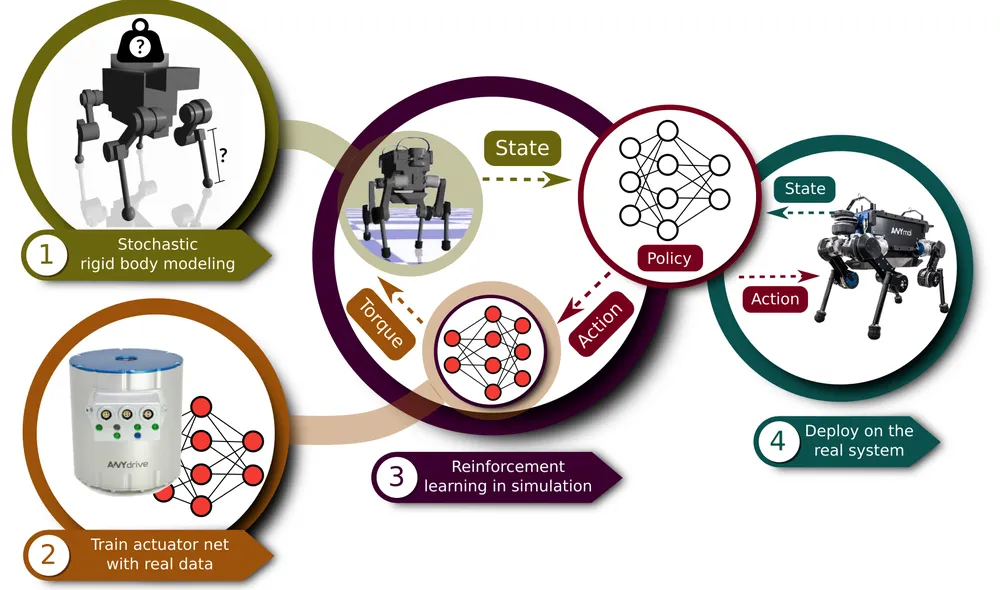
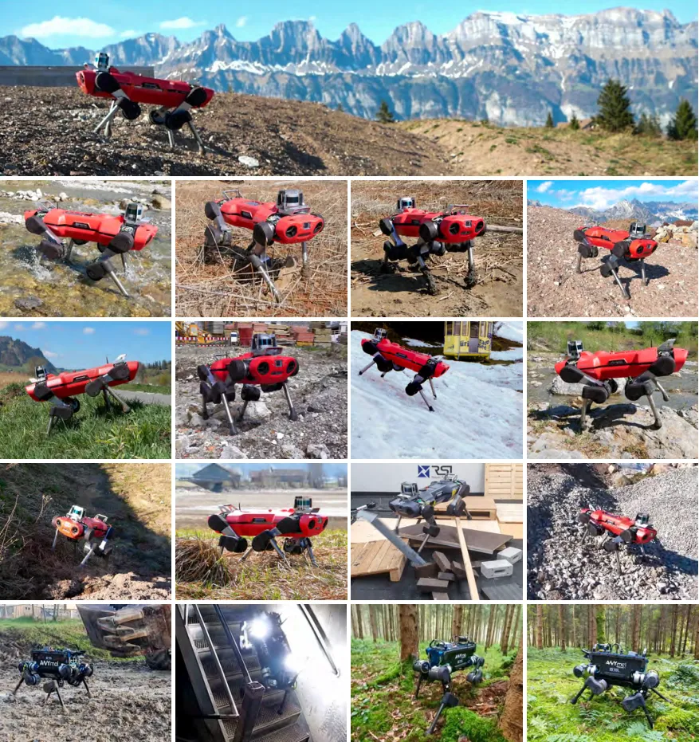
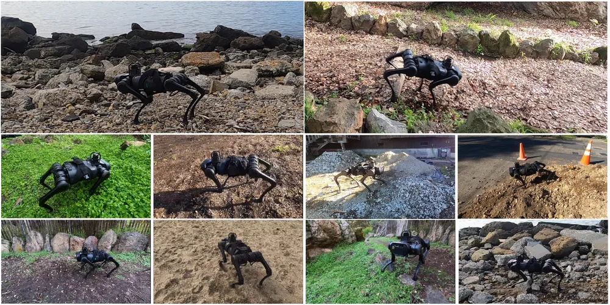
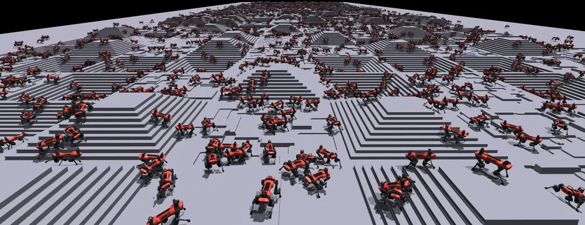
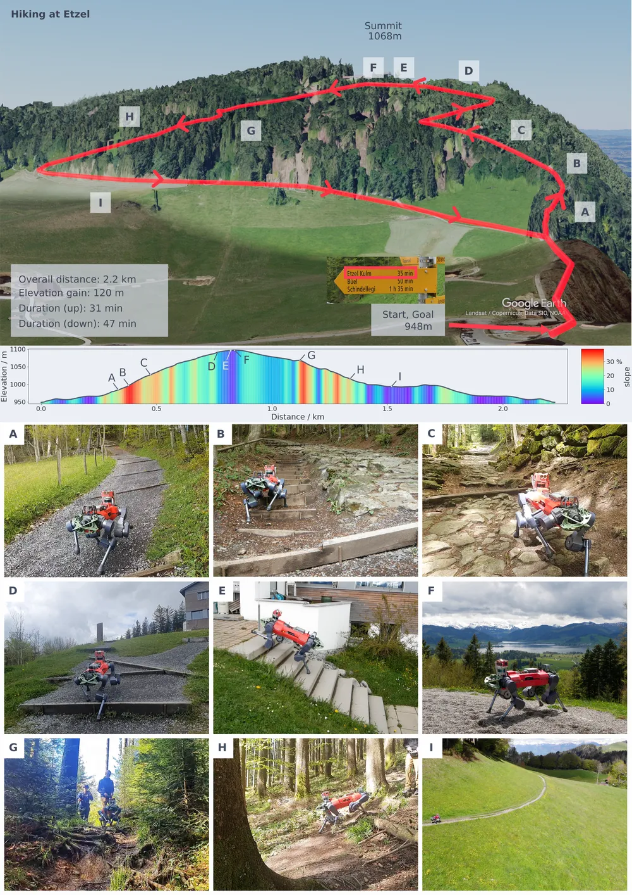
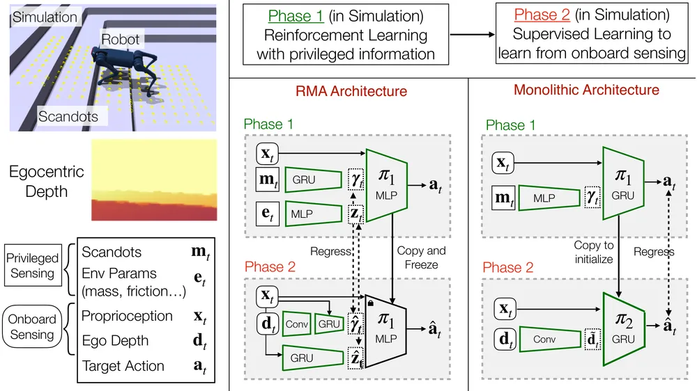
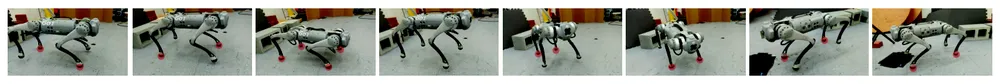
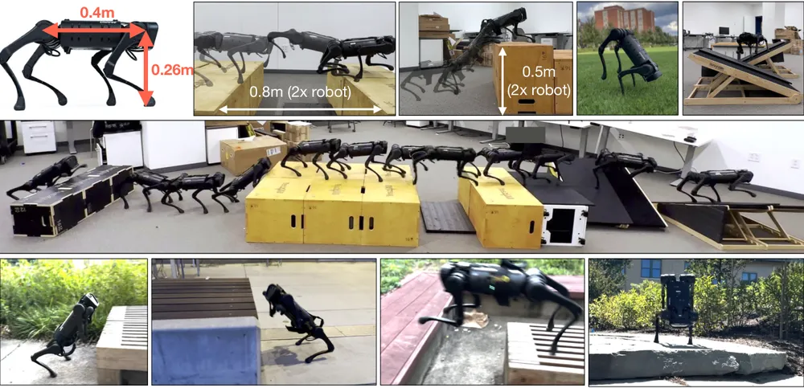
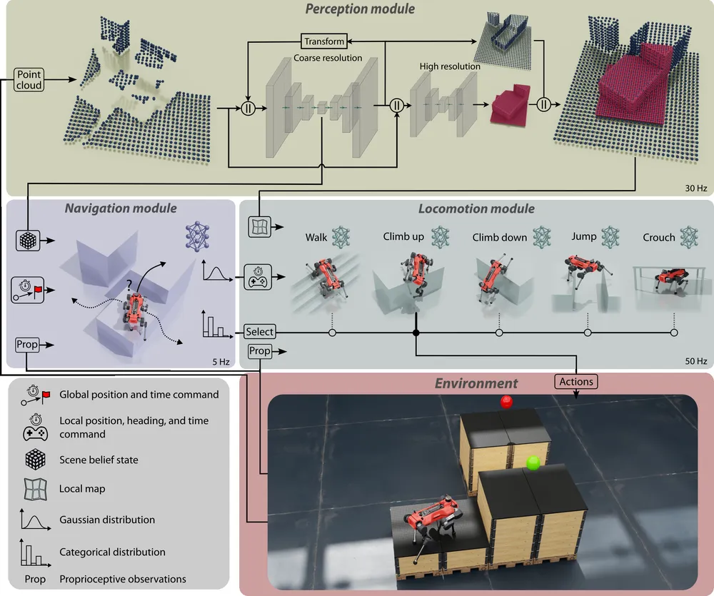
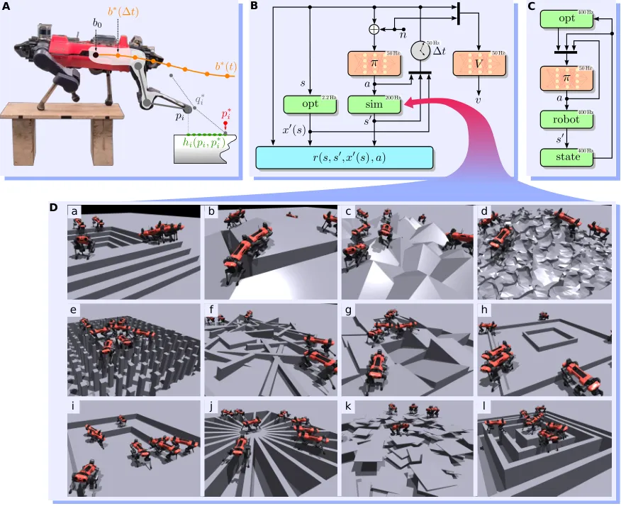
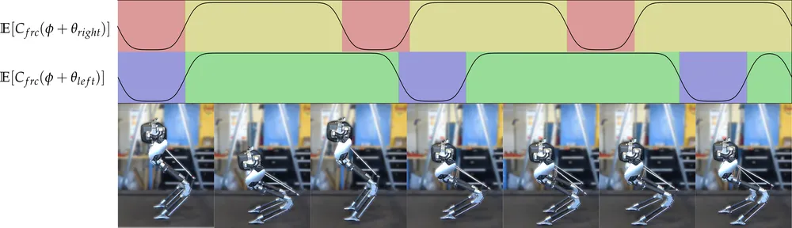
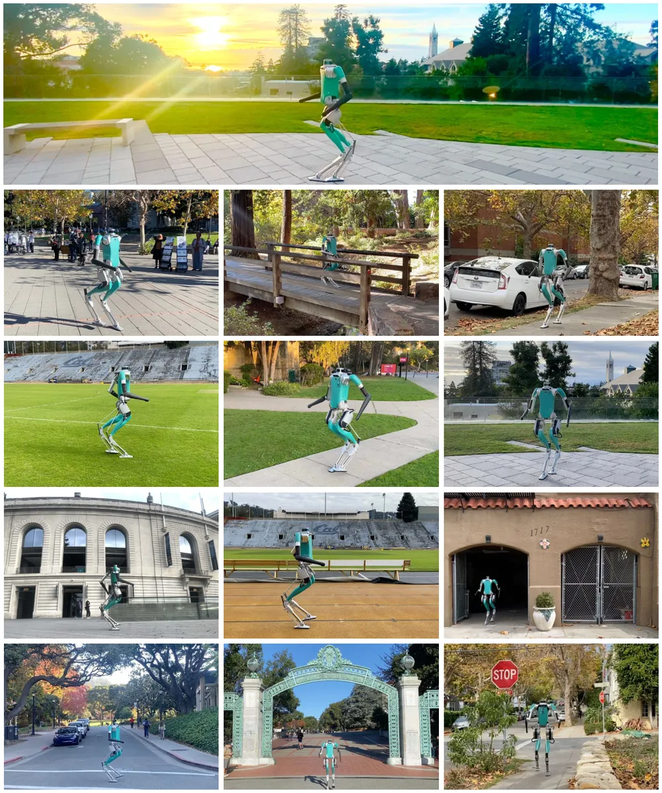
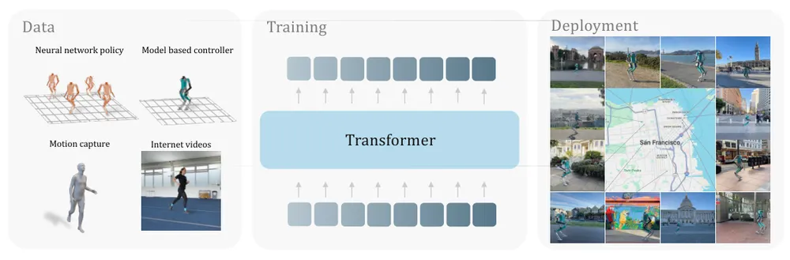
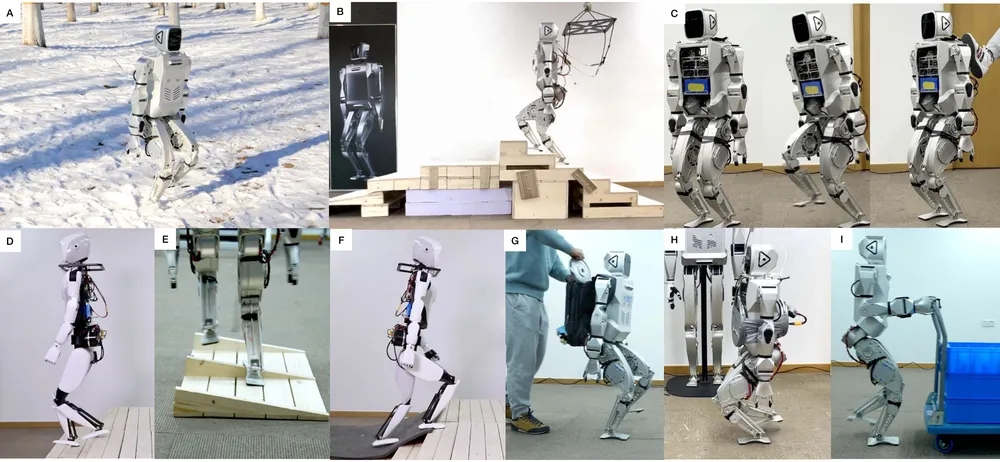
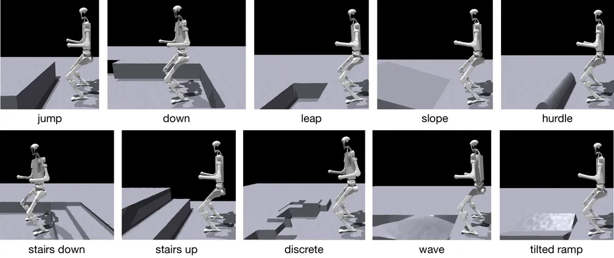
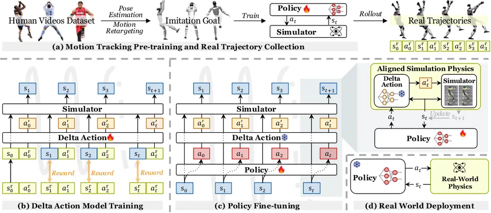
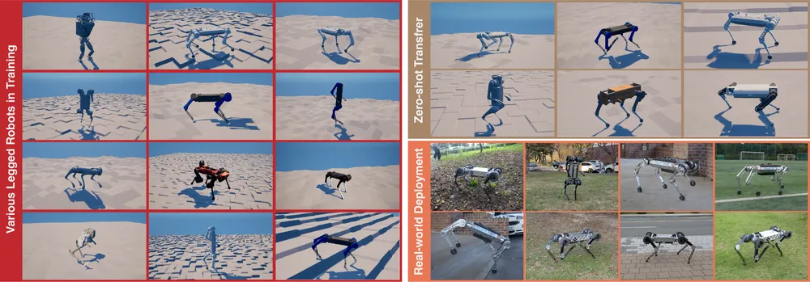
절.
| 탭 | 절 | 주제 |
|---|---|---|
| 사족보행 | G.1–G.10 | 액추에이터 망(G.1), 특권 교사–학생(G.2), 빠른 적응(G.3), GPU 병렬(G.4), belief encoder(G.5), 깊이 영상 끝단 정책(G.6), 걸음새 명령(G.7), 파쿠르(G.8, G.9), 궤적 최적화 + RL(G.10) |
| 휴머노이드 | G.11–G.16 | 주기 보상(G.11), transformer 정책(G.12), next token prediction(G.13), 복원 손실의 world model(G.14), 휴머노이드 파쿠르(G.15), 잔차 행동 모델(G.16) |
| 다몸체 | G.17 | 한 정책이 여러 몸을 걷게 한다(PolyMorph) |
| travplan에서 | G.18 | 대응표, 읽는 순서, 스스로 확인할 질문 |
보는 순서. 처음이면 G.1, G.2, G.4, G.5, G.9, G.10 순서로 사족을 읽고, G.11, G.12, G.14, G.16 순서로 휴머노이드를 읽는다. 파쿠르만 보려면 G.6, G.8, G.9, G.15다. travplan과의 연결만 보려면 G.18로 바로 간다. 카드의 "초록 번역"은 원문을 그대로 옮긴 것이고, 해석은 "방법"과 "왜 마일스톤인가"에 있다.
표기·약어. RL(reinforcement learning, 강화학습), PPO(proximal policy optimization), TO(trajectory optimization, 궤적 최적화), MPC(model predictive control), WBC(whole-body control, 전신 제어), 고유수용(proprioception, 관절·IMU 등 몸 안의 감각), 외수용(exteroception, 카메라·LiDAR 등 바깥 감각), 특권 정보(privileged information, 시뮬레이션에서만 아는 마찰·지형·접촉), 교사–학생(teacher–student), sim-to-real(시뮬레이션에서 배운 정책을 실물에 올리기), zero-shot(실물 미세 조정 없이 그대로 올리기), 도메인 무작위화(domain randomization), 끝단(end-to-end, 센서 입력에서 관절 명령까지 망 하나), 걸음새(gait), 발 디딤(foothold), 높이 표본(scandots·height samples·height scan, 로봇 둘레 격자점의 지형 높이)을 처음부터 쓴다. 카드 이름은 논문 제목이나 1저자와 연도(Hwangbo 2019, Siekmann 2021)로 적고, 긴 제목은 약어(HT, NTP, DWL)로 줄인다. 카드의 수치는 각 카드가 적은 arXiv 버전에서 읽었다. 학술지 출판본과 대조한 것은 카드마다 따로 적었다.
G.1–G.10 사족보행: 액추에이터 망에서 파쿠르와 혼합 제어까지
한 줄로. 사족보행 학습은 "시뮬레이션에서만 배워 실물에 올린다"(G.1)에서 출발해, 보지 못하는 것을 이력으로 짐작하고(G.2, G.3), 수천 환경을 한꺼번에 돌리고(G.4), 외수용을 믿을 만큼만 믿거나 지도 대신 깊이 영상을 바로 보고(G.5, G.6), 걸음새와 발 디딤을 위 층의 명령으로 받는(G.7, G.9, G.10) 쪽으로 자랐다.
흐름. 세 줄기가 있다. ETH RSL 줄기(G.1, G.2, G.4, G.5, 그리고 G.9와 G.10)는 ANYmal 한 로봇 위에서 액추에이터 망, 교사–학생, GPU 병렬, belief encoder, 계층과 혼합 제어를 차례로 더했다. UC Berkeley·CMU 줄기(G.3, G.6, G.8의 순서)는 값싼 Unitree A1 위에서 고유수용 적응(G.3)과 깊이 카메라 하나의 끝단 인식 보행(G.6, G.8)을 밀었다. MIT 줄기(G.7)는 한 정책에 여러 걸음새를 담아 사람이 현장에서 고르게 했다. 2022년 뒤의 G.6–G.10은 모두 G.4의 학습 틀(Isaac Gym·legged_gym)을 쓴다. G.3과 G.5는 RaiSim이다.
Learning agile and dynamic motor skills — 실물 데이터로 배운 액추에이터 망을 강체 시뮬레이션에 끼워, 시뮬레이션에서만 학습한 정책이 실물 ANYmal에서 기존 최고 모델 기반 제어기보다 정확하고 효율적으로 걸었다.(arXiv:1901.08652, 원제 "Learning agile and dynamic motor skills for legged robots", Hwangbo·Lee·Dosovitskiy·Bellicoso·Tsounis·Koltun·Hutter, ETH Zürich Robotic Systems Lab·Intel Intelligent Systems Lab, Science Robotics 4(26) 2019) ETH Zürich RSL(Marco Hutter)의 사족보행 RL(reinforcement learning, 강화학습) 계보가 여기서 시작한다. 핵심은 정책이 아니라 시뮬레이터다. ANYmal의 관절 12개는 SEA(series elastic actuator, 직렬 탄성 구동기)라 해석 모델이 지연을 담지 못했고, 그 부분만 작은 신경망(actuator net)으로 배웠다. 같은 틀에서 속도 명령 추종, 고속 주행, 넘어진 뒤 일어나기의 세 정책을 보상만 바꿔 만들었다. 정책 코드는 공개되지 않았고, 자체 접촉 솔버는 뒤에 RaiSim이 됐다.
왜 마일스톤인가. 2019년 이전의 ANYmal 제어기는 모듈식이었다. 단순화한 동역학으로 발 디딤을 정하고, 발 궤적을 만들고, PID로 따라갔다(Bellicoso 2018). RL 보행은 시뮬레이션에 머물렀고, 실물로 옮긴 예는 직접 구동 모터라 해석 액추에이터 모델이 통한 Minitaur(Tan 2018, Planner B.16.2) 정도였다. 이 논문은 SEA 사족에서 처음으로 시뮬레이션 학습 정책이 실물에서 모델 기반 제어기를 넘었고, 1.5 m/s 속도 기록과 뒤집힌 자세에서의 복구를 함께 보였다. 뒤의 RSL 논문은 모두 이 혼합 시뮬레이터 위에 선다. G.2 Lee 2020은 액추에이터 망을 로봇마다 다시 학습해 썼고, G.4 Learning to Walk in Minutes는 LSTM(long short-term memory)판으로 바꿨다. G.5 Miki 2022도 같다. 벌점 계수를 작게 시작해 1로 올리는 비용 커리큘럼은 G.3 RMA가 시작값만 바꿔 그대로 가져갔다.
초록 번역. (arXiv v1, 2019-01-24) 다리 로봇은 로보틱스에서 가장 큰 난제 가운데 하나다. 동물의 역동적이고 민첩한 동작은 사람이 손으로 만든 기존 방법으로는 흉내 낼 수 없다. 설득력 있는 대안은 강화학습이다. 사람의 손길이 거의 필요 없고 제어 정책이 자연스럽게 진화하도록 이끈다. 그러나 지금까지 다리 로봇의 강화학습 연구는 대부분 시뮬레이션에 머물렀고, 실물 시스템에 올린 예는 적고 비교적 단순했다. 주된 이유는 실물 로봇, 특히 동적으로 균형을 잡는 시스템으로 학습하는 일이 복잡하고 비용이 크기 때문이다. 이 연구에서 우리는 신경망 정책을 시뮬레이션에서 학습해 최신 다리 시스템에 옮기는 방법을 소개하며, 그로써 빠르고 자동화된 저비용 데이터 생성 방식을 활용한다. 이 접근을 중형견 크기의 정교한 사족 시스템인 ANYmal 로봇에 적용했다. 시뮬레이션에서 학습한 정책으로 이 사족 기계는 기존 방법이 이룬 것을 넘어서는 보행 기술을 얻었다. ANYmal은 상위 몸체 속도 명령을 정확하고 에너지 효율적으로 따르고, 전보다 빠르게 달리고, 복잡한 자세에서도 넘어진 뒤 일어난다.
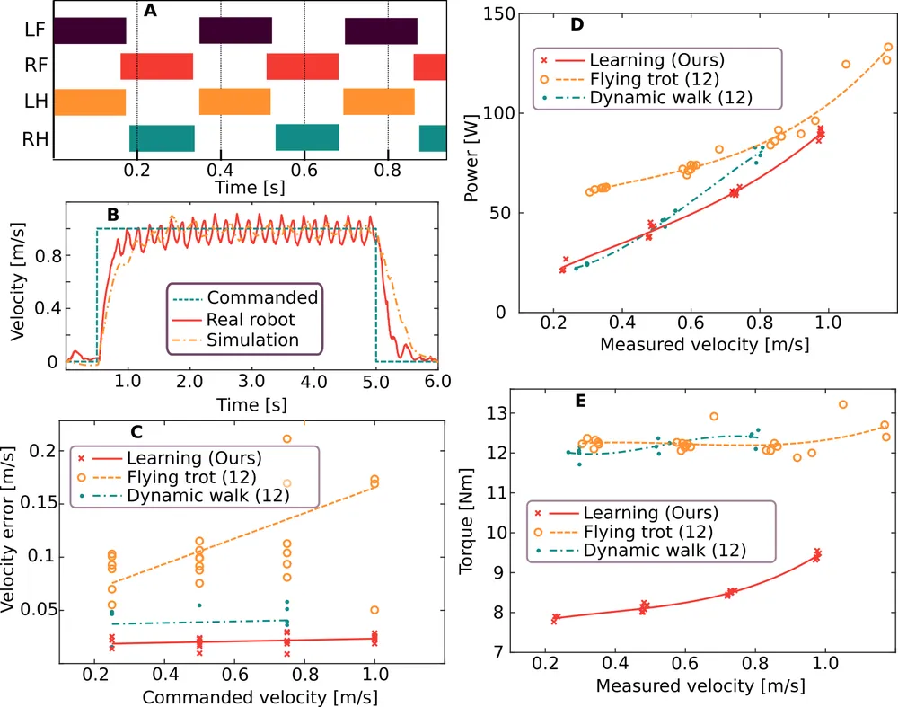
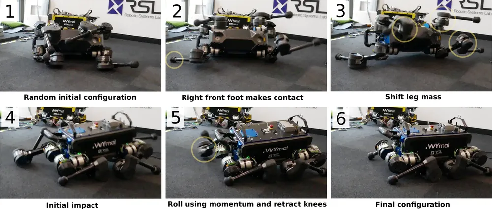
방법. 입력은 몸체 속도 명령(전진, 횡, yaw rate)이고 출력은 관절 12개의 목표 위치다. 낮은 이득의 PD(kp 50 N·m/rad, kd 0.1 N·m·s/rad)가 토크로 바꾼다. 시뮬레이터는 둘을 합친다. CAD에서 만든 강체 모델(질량·무게중심·관절 위치를 흔든 30개)과, 관절마다 위치 오차·속도의 현재와 0.01·0.02 s 전 값에서 토크를 내는 actuator net(은닉 32유닛 3층, softsign)이다. actuator net의 데이터는 발끝 사인 궤적(진폭 5–10 cm, 1–25 Hz)으로 4분 안에 모았고(400 Hz, 100만 샘플 이상), 검증 오차는 0.740 N·m다. 정책은 은닉 256·128의 tanh MLP이고 관측은 중력 방향, 몸체 높이, 선·각속도, 관절 위치·속도, 0.01·0.02 s 전 관절 이력, 직전 행동, 명령이다. TRPO(trust region policy optimization)를 기본 하이퍼파라미터로 돌리고, 목표 항을 뺀 벌점 계수를 0.3에서 1로 올리는 커리큘럼을 쓴다. 혼합 시뮬레이터는 초당 약 50만 스텝이라 보행 학습이 PC 한 대에서 4시간(시뮬 시간 9일), 복구가 11시간(79일)이다. 학습한 파라미터를 온보드 PC에 옮겨 200 Hz(복구는 100 Hz)로 돌렸고 추론은 CPU 한 스레드에서 25 µs다. 실물 미세 조정은 없다.
결과. 모두 실물 ANYmal이고, 기준선은 같은 로봇의 기존 최고 모델 기반 제어기(Bellicoso 2018)다.
| 조건·지표 | 이 논문 | 비교 대상 |
|---|---|---|
| 무작위 명령 추종 30 s(전이 15번), 선속도 오차 | 0.143 m/s | flying trot 0.231 m/s |
| 같은 시험, yaw rate 오차 | 0.174 rad/s | 0.278 rad/s |
| 같은 시험, 평균 토크 · 기계 출력 | 8.23 N·m · 78.1 W | 11.7 N·m · 97.3 W |
| 속도별 평균 토크(0.25–1.0 m/s) | 23–36 % 적음(무릎 10–15° 더 편 자세) | flying trot·dynamic lateral walk |
| 최고 속도(명령 1.6 m/s) | 1.5 m/s(시뮬레이션 1.58) | ANYmal 이전 기록 1.2 m/s |
| 넘어진 뒤 복구 | 무작위 자세 9가지 모두 3 s 안에 성공 | 비슷한 복잡도의 로봇에서 전례 없음(저자 주장) |
| 액추에이터 모델 검증 오차 | 0.740 N·m(시험 데이터 0.966) | 이상 모델 3.55 N·m(시험 5.74) |
| 절제: 이상·해석 액추에이터 모델로 학습 | — | 실물에서 한 걸음도 못 걷고 사지가 떨림 |
| 학습 시간(CPU 1·GPU 1 PC) | 보행 4 h, 복구 11 h | — |
| 내구 | 3개월 넘게 수정 없이 동작(무게 약 2 kg·스프링 3배 변경 포함) | — |
travplan에 주는 의미. travplan이 가져올 것은 지연을 담은 모델로 학습·계획하라는 교훈이고, 같은 결과를 이미 쟀다.
스워브 plant 레벨 3 360회에서 지연을 모르는 MPPI(model predictive path integral) rollout은 치명 55회, 지연을 넣은 rollout은 4회였다(TP-0150). 그 Controller가 mppi_plant_lag다.
인터페이스도 같다. 이 정책이 받는 몸체 속도 명령이 travplan Controller가 내는 body twist다. 다만 스워브는 관절 정책이 필요 없다.
모듈 역기구학이 그 아래를 풀므로(Controller 문서 F.3) 배울 것은 명령 twist에서 실현 twist까지의 사상이다(TP-0124, MPC 문서 M.1.3의 학습 층).
데이터 수집법(1–25 Hz 가진), 비용 커리큘럼(TP-0066의 치명 벌점), 이력 길이 규칙(GP 잔차 TP-0068의 입력)으로 옮기는 세부는 Planner B.14.1 토글 끝에 있다.
가져올 수 없는 것은 정책 자체다. 사족의 관절 공간 정책과 복구 기술에는 바퀴 로봇의 대응 과제가 없다.
수치는 arXiv v1(2019-01-24)에서 읽었다. Science Robotics 출판본과 대조하지 못했다. 방법의 수식(PD 이득, 비용 커리큘럼, 유계 커널, 할인율)과 절제·한계는 Planner B.14.1 토글에 있다. 여기서는 그 토글에 없는 것만 적는다.
풀려는 문제. 모듈식 제어기는 근사가 맞는 좁은 영역에 묶여 가속이 느리고 몸 자세가 고정되며, 새 로봇·새 동작마다 몇 달의 손 조정이 든다. 궤적 최적화(TO)는 접촉 시점을 미리 정하거나 접촉을 매끄럽게 근사해야 하고 실행 중 계산이 무겁다. RL은 실물에서 몇 주에서 몇 달의 상호작용이 필요해 시뮬레이션에서 배워야 하고, 그러면 현실 격차가 문제다. 저자들은 격차의 주범을 구동기로 보았다.
① 혼합 시뮬레이터. 강체는 잘 아는 물리로, 구동기는 데이터로 푼다. RL의 목적은 할인 보상 합의 최대화다.
$$ \pi^{*} = \arg\max_{\pi}\ \mathbb{E}_{\tau(\pi)}\Big[\sum_{t=0}^{\infty} \gamma^{t} r_t\Big] $$
actuator net은 관절 $i$의 위치 오차 $e_i = \phi^{*}_i - \phi_i$와 속도의 현재·0.01 s 전·0.02 s 전 값에서 토크를 낸다.
$$ \tau_{i,t} = f_\theta\big(e_{i,t},\ e_{i,t-0.01},\ e_{i,t-0.02},\ \dot\phi_{i,t},\ \dot\phi_{i,t-0.01},\ \dot\phi_{i,t-0.02}\big) $$
관절 12개가 독립이라 가정하고 같은 망을 관절마다 적용한다. 이력은 통신 지연과 기계 응답 시간의 합보다 길어야 하고, 너무 촘촘하면 과적합하고 비싸진다. 데이터의 약 90%를 학습에, 나머지를 검증에 썼다. 12관절 평가에 softsign 12.2 µs, tanh 31.6 µs이고 검증 오차는 둘 다 0.7–0.8 N·m RMS다. 유압처럼 축압기를 공유하는 구동기는 결합돼 있어 이 독립 가정이 깨질 수 있다고 저자들이 적었다.
② 관측과 행동. 관측은 중력 방향(IMU로 관측 가능한 자세 2자유도), 몸체 높이, 선·각속도, 관절 위치·속도, 관절 이력, 직전 행동, 명령의 아홉 성분이다. 몸체 높이는 1D 칼만 필터로 다리 기구학에서 추정하고 복구 과제에서는 뺀다. 관절 이력을 빼면 보행을 못 배웠고(저자들은 접촉 감지 역할로 본다), 속도를 빼면 학습 자체가 실패했다. 관절 속도 관측에 $U(-0.5, 0.5)$ rad/s, 선속도에 $U(-0.08, 0.08)$ m/s, 각속도에 $U(-0.16, 0.16)$의 잡음을 넣는다. 나머지 관측은 잡음이 없다. 위치 정책은 서 있는 제어기에서 시작하므로 토크 정책보다 학습이 쉽다. 위치 이득은 토크 범위(±30 N·m)를 운동 범위(±0.6 rad)로 나눈 값이고, 80 N·m/rad로 올려도 성능이 거의 같았다.
… 이 토글의 나머지 블록 5개(문단·식·그림)는 대시보드 리서치 탭의 "자세히: Learning agile and dynamic motor skills의 방법과 수식" 토글에 있다.
이어진 연구. G.2 Lee 2020은 같은 혼합 시뮬레이터와 로봇별 actuator net 위에 특권 교사와 TCN 학생, 지형 커리큘럼을 얹어 험지로 나갔다. G.4 Learning to Walk in Minutes는 actuator net을 현재 측정만 받는 LSTM으로 바꿔 Isaac Gym에 넣었고, 그 가중치가 legged_gym에 있다(Controller 문서 F.6). G.3 RMA는 이 논문의 벌점 커리큘럼(시작값 0.03)과 접촉 솔버가 된 RaiSim을 썼고, 액추에이터 모델 없이 A1에 옮겼다. 시뮬레이션 문서 S.6.2는 이 논문을 보정의 본보기로, MPC 문서 M.1.3은 예측 모델 세 층 가운데 학습 층의 본보기로 든다(TP-0124–0126). 1저자의 다음 줄기는 KAIST RaiLab(Planner B.16.5)이다.
Learning quadrupedal locomotion over challenging terrain — 관절 인코더와 IMU만 보는 TCN 정책을 특권 교사에게서 증류해, 시뮬레이션의 단단한 지형에서만 배우고도 두 세대의 ANYmal을 진흙·눈·잔해·수풀·개울로 데려갔다.(arXiv:2010.11251, 원제 "Learning Quadrupedal Locomotion over Challenging Terrain", Lee·Hwangbo·Wellhausen·Koltun·Hutter, ETH Zürich Robotic Systems Lab(Hwangbo는 KAIST 겸)·Intel Intelligent Systems Lab, Science Robotics 5(47) 2020; 학습된 정책·환경, 프로젝트 페이지) G.1의 혼합 시뮬레이터 위에서, 평지 실험실에 머물던 RL(reinforcement learning, 강화학습) 보행을 자연 지형으로 내보낸 논문이다. 재료는 셋이다. 특권 정보(privileged information)를 보는 교사, 고유수용(proprioception) 이력만 보는 TCN(temporal convolutional network) 학생, 통과율로 지형 난이도를 따라가는 입자 필터 커리큘럼이다. 보상에 없던 발 걸림 반사가 저절로 생겼고, 같은 제어기가 DARPA SubT 어반 서킷을 넘어짐 없이 돌았다.
왜 마일스톤인가. 앞에는 상태 기계가 있었다. 기존 험지 제어기는 접촉·미끄럼을 문턱값으로 추정해 동작 원형과 반사를 차례로 불렀고, 상황이 늘수록 커졌다. RL 보행은 G.1을 포함해 평지 실험실에 머물렀다. 이 논문은 RL 제어기를 앞선 발표가 닿지 못한 자연 지형에서 zero-shot으로 보였고, 모델 프리 RL 제어기의 첫 실전 대회 배치(SubT)였다. 특권 교사–학생(teacher–student) 증류(Chen 2019의 learning by cheating에서 교사를 RL로 바꾼 것)와 적응형 지형 커리큘럼은 이 논문 뒤로 사족 RL의 표준 절차가 됐다. G.5 Miki 2022는 여기에 외수용(exteroception)을 얹었고, G.4 Learning to Walk in Minutes는 입자 필터를 게임식 커리큘럼으로 바꿨다. G.3 RMA는 이 논문을 가장 가까운 비교 대상으로 들며 발 궤적 생성기와 액추에이터 모델 없이 같은 수준을 노렸다. G.9 ANYmal Parkour와 G.10 DTC의 교사–학생도 같은 뼈대다.
초록 번역. (arXiv v1, 2020-10-21) 지구에서 가장 험한 환경 몇몇은 사족 동물은 드나들지만 자율 기계는 아직 닿지 못한다. 다리 보행은 로보틱스의 작동 영역을 크게 넓힐 수 있다. 그러나 기존의 다리 보행 제어기는 동작 원형과 반사 동작의 실행을 명시적으로 촉발하는 정교한 상태 기계에 바탕을 둔다. 이런 설계는 복잡도가 치솟았지만 동물 보행의 일반성과 강건성에는 미치지 못했다. 여기서 우리는 험한 자연환경에서의 다리 보행을 위한 극도로 강건한 제어기를 제시한다. 보행 제어에 고유수용 피드백을 넣는 새로운 해법을 제시하고, 시뮬레이션에서 자연환경으로의 놀라운 zero-shot 일반화를 보인다. 제어기는 시뮬레이션에서 강화학습으로 학습한다. 고유수용 신호의 흐름에 작용하는 신경망에 바탕을 둔다. 학습한 제어기는 두 세대의 사족 ANYmal 로봇을 앞서 발표된 다리 보행 연구가 닿지 못한 다양한 자연환경으로 데려갔다. 제어기는 학습 중에 한 번도 겪지 않은 조건에서도 강건성을 유지한다. 진흙과 눈 같은 변형 지형, 잔해 같은 움직이는 발 디딤(foothold), 빽빽한 수풀과 쏟아지는 물 같은 지상 장애물이다. 이 연구는 로보틱스에 새 지평을 열고, 자연환경에서의 극도의 강건성을 훨씬 단순한 영역에서 학습해 얻을 수 있음을 보여 준다.
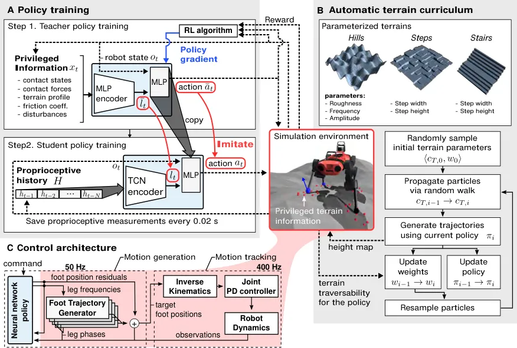
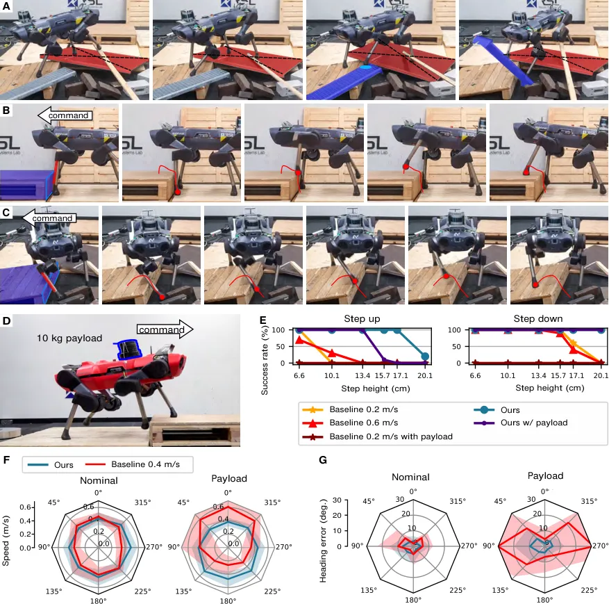
방법. 명령은 속도가 아니라 방향이다. 몸체 좌표의 진행 방향과 회전 방향(−1, 0, 1)만 주는데, 험지에서는 낼 수 있는 속도가 오르막과 내리막마다 달라서다. 정책은 관절을 직접 내지 않는다. 다리마다 발 궤적 생성기(FTG)가 1.25 Hz 기저 주파수로 주기 운동을 만들고, 정책은 다리별 주파수 오프셋 4개와 발 위치 잔차 12개(행동 16차원)를 얹는다. 해석 IK와 관절 PD가 따라간다. 교사는 관측과 특권 정보(발마다 반지름 10 cm 원 위 높이 9점, 지형 법선, 접촉 상태·힘, 마찰계수, 외력)를 MLP로 받고 RaiSim에서 TRPO(trust region policy optimization)로 배운다. 구동기는 G.1 방식의 actuator net을 로봇마다 학습한 것이다. 학생은 고유수용 벡터 60차원을 100개(2 s) 쌓은 이력만 보는 TCN이고, 교사의 행동과 잠재 벡터를 둘 다 따라가도록 DAgger(dataset aggregation)로 지도학습한다. 지형(Hills·Steps·Stairs)의 파라미터는 통과율(명령 방향 속도가 0.2 m/s를 넘는 전이의 비율)이 0.5–0.9인 것을 입자 필터가 따라가며 뽑는다. 교사와 학생 학습에 모두 쓴다. 학습은 데스크톱 한 대(i7-8700K, RTX 2080)에서 교사 약 12시간, 학생 약 4시간이고 커리큘럼 갱신은 2.9 s다. 학생은 온보드 CPU(i7-5600U)에서 400 Hz로 돌며 실물 미세 조정은 없다. 수식(위상, 보상 가중치, 손실, 통과율과 입자 필터, 디코더)은 인식 문서 A.7 토글에 있다.
결과. 기준선은 같은 로봇의 기존 모델 기반 제어기(Jenelten 2019·Bellicoso 2018)다. 자연 지형 표(Table 1)는 기준선이 걸은 구간만 쟀고, 기준선의 넘어짐은 수치에 들어가지 않는다.
| 조건·지표 | 이 논문 | 비교 대상 |
|---|---|---|
| 이끼 평균 속도 · 기계 COT | 0.452 m/s · 0.423 | 0.199 m/s · 0.625 |
| 진흙 평균 속도 · 기계 COT | 0.338 m/s · 0.692 | 0.197 m/s · 0.931 |
| 수풀 평균 속도 · 기계 COT | 0.248 m/s · 1.23 | 측정 없음(자주 넘어짐) |
| 숲 비교의 실패 | 0 | 가지·수풀·진흙에서 자주 실패 |
| 발 걸림 반사 | 16.8 cm 턱을 넘음(평지 앞발 높이 12.9·13.6 cm가 22.5·18.5 cm로) | 턱에 걸리면 자주 넘어짐 |
| 10 kg 짐(무게의 22.7 %)으로 턱 넘기 | 13.4 cm까지 | 어떤 턱도 못 넘음 |
| 평지 8방향 방향 오차(짐 유무) | 10° 이내 | 측면 약 30°, 0.6 m/s 명령에 실패 |
| DARPA SubT 어반 서킷 | ANYmal-B 2대, 60분 임무 4회 넘어짐 0 | 이전 대회는 모델 기반 제어기 |
| 절제: 측면 50 N 외력 5 s의 경로 이탈 | TCN-100이 TCN-1보다 35.5 % 작음 | — |
| 절제: 특권 학습 없이 TCN-20을 바로 RL | 경사도 턱도 못 걸음 | — |
| 절제: 균등 표집 지형으로 교사 학습 | 더 낮은 보상에서 정체, 시험 성공률 낮음 | — |
travplan에 주는 의미. 1차 의미는 반례다. 이 정책은 닿은 뒤에야 지형을 알고, 절벽으로 가라면 간다. 경로를 지형 비용으로 미리 고르는 travplan에는 TravMap이 그 자리를 맡는다(인식 A.7).
절차는 그대로 쓴다. Planner D의 DAgger(TP-0075, TP-0143)는 학생이 굴린 상태에 교사 라벨을 붙이는 부분이 같다.
다른 점은 비대칭이다. 이 논문은 교사가 특권 정보를, 학생이 고유수용만 보지만 travplan의 교사와 학생은 지금 같은 GT 지도를 본다. 특권 교사에서 belief만 보는 학생으로 줄이는 일이 TP-0055다.
통과율 커리큘럼은 아직 들어오지 않았다. Planner D 학습은 지도마다 레벨 0–3을 균등하게 뽑는다(--levels). 이 논문의 절제에서 균등 표집 교사는 더 낮은 보상에서 멈췄다.
접촉 뒤 추정 σ가 커지고 한동안 남는다는 관찰은 TravMap.SIGMA를 관측 뒤 바로 줄이지 않게 둘 근거다(TP-0054).
가져올 수 없는 것은 반사와 걸음새다. 스워브에는 발이 없어 발 걸림 반사의 대응물이 없고, 지형을 더듬는 보수적 걸음도 바퀴 로봇에는 없다.
수치는 arXiv v1(2020-10-21)에서 읽었다. arXiv판은 출판본의 accepted version이라고 적혀 있고, 출판본과 따로 대조하지 못했다. 방법·수식·절제·내부 표현은 인식 A.7 토글에, 두 세대·숲 비교·SubT·턱 절차·반사 범위·공개 자료는 Planner B.14.1 토글에 있다. 여기서는 그 둘에 없는 것만 적는다.
풀려는 문제. 카메라와 LiDAR는 마찰과 무름을 재지 못하고 눈·물·수풀에 가려지며, 발밑이 무너지는 변화를 시간 분해능으로 따라가지 못한다. 그래서 험지에서는 몸의 구성을 높은 시간 분해능으로 재는 고유수용에 기대야 한다. 저자들은 험지 정책을 RL로 바로 배우는 데 실패했다. 지도 신호가 드물어 정해진 시간 안에 배우지 못했다.
① 지형 생성기(보충 S5). 지형 셋을 파라미터 벡터 $c_T$로 절차 생성하고 에피소드마다 새 seed로 다시 만든다. 격자는 Hills가 0.2 m, Steps·Stairs가 0.02 m다. Hills는 Perlin 잡음이고 파라미터는 거칠기·주파수·진폭 셋이다. 매끄러운 경사와 발 미끄럼을 겪는 지형이다.
$$ hm[i,j] = \mathrm{Perlin}(c_{T,2}, c_{T,3})[i,j] + U(-c_{T,1},\ c_{T,1}) $$
Steps는 $c_{T,1} \times c_{T,1}$ 블록마다 높이를 $U(0, c_{T,2})$로 뽑은 네모 단이고 이산 높이 변화와 발 걸림을 겪는다. Stairs는 폭·높이가 고정된 계단이고 로봇은 가운데 평평한 구간에서 시작한다. 범위는 기구학으로 정한다. 단 높이는 다리 길이보다 낮다. Hills의 마찰계수는 $\mathcal N(0.7, 0.2)$에서 뽑는다.
② 커리큘럼이 실제로 한 일(보충 S6, Fig. S1). 바람직함이 낮은 지형은 너무 쉽거나 너무 어렵다. Hills의 주파수–진폭 주변 분포에서 바람직한 영역은 활 모양이고 입자 필터가 그 모양을 맞췄다. Stairs에서는 짧고 가파른 단(파라미터 평면의 왼쪽 위)을 거부했고, 50–60회에는 넓고 낮은 단에 집중하다가 뒤로 갈수록 좁은 단까지 분포를 넓혔다.
③ 효율 지표. 기계 COT(cost of transport)는 구동기 12개의 양의 기계 출력을 무게와 속도로 나눈 값이다. 음의 출력(제동)은 세지 않는다.
$$ \mathrm{COT} = \frac{\sum_{12\ \text{actuators}} [\tau \dot\theta]^{+}}{m g v} $$
④ 정책이 어디를 보는가. 발 $f$의 높이 명령 $(r_{f,T})_z$가 이력 $H \in \mathbb R^{60 \times N}$의 $i$번째 측정에 얼마나 민감한지를 채널 합으로 잰다.
$$ M_i = \sum_{j \in \text{channels}} \left| \frac{\partial (r_{f,T})_z}{\partial H_{i,j}} \right| $$
… 이 토글의 나머지 블록 5개(문단·식·그림)는 대시보드 리서치 탭의 "자세히: Learning quadrupedal locomotion over challenging terrain의 방법과 수식" 토글에 있다.
이어진 연구. G.5 Miki 2022(Planner B.14.2)는 같은 교사–학생에 높이 표본과 belief encoder를 더해 지도를 얼마나 믿을지 정책이 정하게 했다. G.4 Learning to Walk in Minutes는 입자 필터 대신 로봇 수천 대의 분포 자체를 커리큘럼으로 썼다. G.3 RMA는 FTG와 actuator net을 빼고 환경 잠재를 이력에서 추정했고, DreamWaQ(Controller 문서 F.4)와 HIMLoco(F.6)가 그 이력 추정을 잇는다. 1저자의 바퀴·다리 도시 내비(Planner B.14.4)는 이 논문의 지형 필터로 학습 지형을 고르고, 교사–학생의 일반형은 배경 0.12에 있다.
RMA — 특권 환경 요인 17차원을 8차원 잠재로 압축해 배운 기본 정책과, 그 잠재를 최근 0.5 s의 상태·행동 이력에서 추정하는 적응 모듈로, 저가 Unitree A1이 실물 미세 조정 없이 1초 안에 새 지형과 짐에 적응했다.(arXiv:2107.04034, 원제 "RMA: Rapid Motor Adaptation for Legged Robots", Kumar·Fu·Pathak·Malik, UC Berkeley·Carnegie Mellon University·Facebook AI, RSS 2021; 프로젝트 페이지, 학습 코드(후속 연구 Cross-Modal Supervision이 RMA 코드 위에 공개, GPL-3.0)) UC Berkeley·CMU의 Malik·Pathak 그룹의 사족 RL(reinforcement learning, 강화학습) 줄기가 여기서 시작한다. ETH 줄기(G.1·G.2)가 시뮬레이터를 실물에 맞추고 발 궤적 생성기 같은 사전 지식을 썼다면, RMA는 기준 궤적도 발 궤적 생성기도 액추에이터 모델도 없이 RaiSim에서만 배우고 약 12 kg의 A1에 올렸다. 핵심은 시스템 식별을 온라인으로, 그것도 지난 0.5초의 궤적 하나로 하는 적응 모듈이다.
왜 마일스톤인가. 앞에는 두 갈래가 있었다. 도메인 무작위화는 넓은 범위에 강건하되 보수적이었고, 잠재 적응(Peng 2020, Planner B.16.2)은 새 환경마다 실물 자료 4–8분(5–10 s 에피소드 50개)을 모아 잠재를 최적화해야 했다. 아직 못 걷는 정책으로 그 자료를 모으면 로봇이 넘어진다. RMA는 적응 모듈까지 시뮬레이션에서 지도학습하고, 기본 정책 100 Hz와 적응 모듈 10 Hz를 시계 없이 비동기로 돌려 온보드 계산이 작은 로봇에서도 돌게 했다. 시뮬레이션 비교에서 파라미터를 직접 맞히는 SysID보다 잠재를 맞히는 쪽이 나았다는 결과가 뒤의 설계를 정했다. 이 줄기는 VP-Nav(Planner B.16.5), G.6 자기 중심 깊이 보행(Agarwal 2022), G.8 Extreme Parkour(Controller 문서 F.6.2)로 이어지고, 이력에서 환경을 읽는 생각은 DreamWaQ·HIMLoco(Controller F.4·F.6)와 LocoFormer(B.16.5)까지 간다.
초록 번역. (arXiv v1, 2021-07-08) 다리 로봇을 실세계에 성공적으로 배치하려면 바뀌는 지형, 바뀌는 짐, 마모 같은 처음 보는 상황에 실시간으로 적응해야 한다. 이 논문은 사족 로봇의 실시간 온라인 적응 문제를 풀기 위한 RMA(Rapid Motor Adaptation, 빠른 운동 적응) 알고리즘을 제시한다. RMA는 기본 정책과 적응 모듈의 두 요소로 이루어진다. 이 둘을 합치면 로봇이 새로운 상황에 1초가 안 되는 시간에 적응한다. RMA는 기준 궤적이나 미리 정한 발 궤적 생성기 같은 영역 지식을 전혀 쓰지 않고 시뮬레이션에서만 학습하며, A1 로봇에 미세 조정 없이 배치한다. 우리는 생체 에너지학에서 영감을 받은 보상으로 다양한 지형 생성기 위에서 RMA를 학습하고, 풀, 긴 수풀, 콘크리트, 자갈, 계단, 모래 등의 환경에서 바위, 미끄러운 면, 변형되는 면을 포함한 여러 어려운 지형에 배치한다. RMA는 다양한 실세계 실험과 시뮬레이션 실험 전반에서 최고 수준의 성능을 보인다. 영상 결과는 프로젝트 페이지에 있다.
그림 번호는 arXiv PDF 기준이다. arXiv HTML은 야외 그림과 구조 그림을 둘 다 Fig. 1로 적는다.
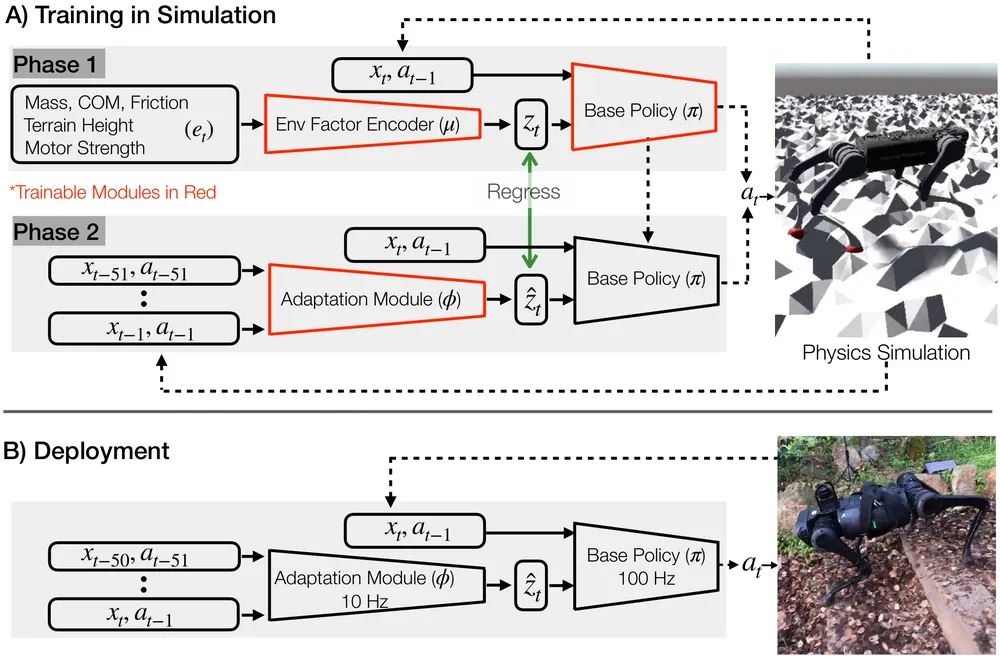
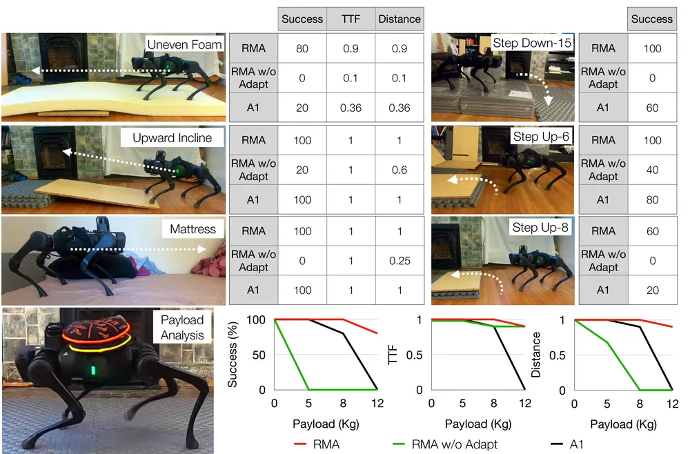
방법. 상태는 30차원(관절 위치 12, 관절 속도 12, 몸통 roll·pitch 2, 발 접촉 4)이고 행동은 관절 목표 12개다. 고정 이득 PD(Kp 55, Kd 0.8)가 토크로 바꾼다. 환경 벡터는 17차원(짐 질량과 위치 3, 모터 세기 12, 마찰 1, 발밑 지형 높이 1)이다. 인코더(MLP 256·128)가 8차원 잠재로 줄이고, 기본 정책(3층 MLP, 은닉 128)이 상태·직전 행동·잠재에서 행동을 낸다. 둘을 PPO(proximal policy optimization)로 함께 배운다. 보상은 전진(0.35 m/s 상한), 옆걸음과 회전, 일, 지면 충격, 토크 변화, 행동 크기, 관절 속도, 자세, 수직 속도(원문 이름은 Z Acceleration, 식은 v_z의 제곱), 발 미끄럼의 10항이다. 벌점 계수는 0.03배로 시작해 지수적으로 1로 올린다(G.1의 커리큘럼). 지형은 RaiSim의 프랙털 생성기이고 지형 커리큘럼은 없다. 질량·마찰·모터 세기의 무작위화 폭만 학습이 진행되며 넓혔다. 적응 모듈은 최근 50스텝(0.5 s)의 상태·행동을 2층 MLP로 32차원에 묻고 1D CNN 3층으로 시간 축을 합쳐 잠재 추정값을 낸다. 참값과의 MSE로 지도학습하되, 자료는 무작위 초기화한 적응 모듈의 추정값으로 기본 정책을 굴려 모으고 수렴까지 되풀이한다. 전문가 궤적만 쓰면 어긋난 상태를 보지 못해서다. 학습 규모는 기본 정책 15,000회 × 전이 80,000개(12억 스텝, GPU 1장 약 24시간), 적응 모듈 1,000회(8,000만 스텝, 약 3시간)다. 배포는 A1 온보드에서 기본 정책 100 Hz, 적응 모듈 10 Hz를 비동기로 돌린다. 실물 보정과 미세 조정은 없다.
결과. 시뮬레이션(Table II)은 시험 중 환경 파라미터를 스텝당 0.01 확률로 다시 뽑고, 정책 초기화 3개 × 에피소드 1,000개 평균이다. 실물 실내는 방법마다 5회다.
| 조건·지표 | 이 논문 | 비교 대상 |
|---|---|---|
| 시뮬레이션 성공률 | RMA 73.5 % | Expert(참값 잠재) 76.2, Robust(무작위화만) 62.4, SysID 56.5, 적응 모듈 없음 52.1, AWR 41.7 |
| 시뮬레이션 넘어지기까지 시간(정규화) | 0.85 | Expert 0.86, Robust 0.80, 적응 모듈 없음 0.75, AWR 0.65 |
| 시뮬레이션 적응에 쓴 시험 환경 표본 | 0 | AWR 40,000 |
| 실내 15 cm 내려서기 · 고르지 않은 폼 | 80 · 100 %(캡션 기준. 그림 속 표는 100 · 80으로 맞바뀜) | A1 제어기는 폼 실패 |
| 짐 12 kg(몸무게 100 %) | 높은 성공률 유지 | A1 제어기 8 kg부터 처짐, 적응 없는 RMA 8 kg 넘으면 정지 |
| 기름 바른 비닐(발에 비닐) | 90 % | — |
| 야외 모래·진흙·흙·긴 풀·덤불 | 실패 0 | — |
| 산길 계단 내려가기 · 시멘트·자갈 더미 | 70 · 80 % | — |
| 적응 시간 · 실물 적응 자료 | 1 s 미만 · 0 | Peng 2020은 4–8분(에피소드 50개) |
| 학습(GPU 1장) | 기본 정책 24 h(12억 스텝) + 적응 모듈 3 h | — |
travplan에 주는 의미. RMA를 travplan에 옮기는 일반론(노면과 화물을 잠재 문맥으로 두고 Controller rollout이나 Planner D 조건에 넣기)은 배경 0.11과 Controller E.2·E.4에, 추정 대상과 창 길이는 Planner B.16.5 카드에 있다.
요지는 이렇다. 첫 추정 대상은 plant 지연이다. mppi_plant_lag는 1차 지연 τ = 0.2 s를 상수로 넣어 권장 L1·plant 레벨 3의 치명을 360회 중 55에서 4로 줄였다(TP-0150).
실물에서는 τ를 모르므로, 명령과 실현 twist의 최근 이력에서 τ를 추정하는 것이 적응 모듈의 자리다.
창 길이는 다시 정한다. RMA의 50스텝은 100 Hz에서 0.5 s이고, travplan 제어 주기 0.1 s에서는 5스텝이다.
학습 자료를 추정기 자신이 틀린 채로 굴린 궤적에서 모으는 규칙은 Planner D의 DAgger(TP-0075)와 같은 원리라 그대로 쓴다.
가져올 수 없는 것은 기본 정책이다. 스워브에는 관절 정책이 없고, 환경 벡터의 모터 세기 12차원 같은 항목도 없다. 옮기는 것은 두 모듈의 분리와 비동기 주기라는 구조다.
수치는 arXiv v1(2021-07-08)에서 읽었다. RSS 2021 출판본과 대조하지 못했다. 두 단계의 식은 Controller E.2에, 보상 가중치·학습 규모·시뮬레이션 표·실내 결과·한계는 Planner B.16.5 토글에 있다. 여기서는 그 둘에 없는 것만 적는다.
풀려는 문제. 저자들은 sim-to-real 격차가 세 곳에서 온다고 본다. 로봇 모델, 지형, 접촉과 변형 같은 물리다. 사람은 흙·경사·짐·피로에 걸으면서 적응하므로, 로봇도 실물에서 여러 번 굴려 파라미터를 맞출 시간 없이 1초 안쪽에 적응해야 한다고 문제를 정했다.
① 왜 될 것이라 보는가. 저자들이 든 근거는 셋이다. 첫째, 시스템 식별은 최적화 문제지만 (문제, 해) 쌍이 있으면 신경망이 그 사상을 근사할 수 있다. 적응 모듈이 배우는 것이 그것이다. 둘째, 잠재는 환경 벡터의 저차원 비선형 사영이라 관측에 같은 효과를 내는 파라미터 쌍의 식별 불능을 피하고, 참값일 필요 없이 맞는 행동만 내면 된다. 셋째, 학습 범위가 실물을 덮어야 한다. 프랙털 지형에 질량·마찰·모터 무작위화를 겹친 이유다.
② 환경 범위(Table I). 시험 범위를 학습 범위보다 넓게 잡았다. 표의 단위는 원문대로다.
| 파라미터 | 학습 범위 | 시험 범위 |
|---|---|---|
| 마찰 | [0.05, 4.5] | [0.04, 6.0] |
| Kp · Kd | [50, 60] · [0.4, 0.8] | [45, 65] · [0.3, 0.9] |
| 짐(kg) | [0, 6] | [0, 7] |
| 무게중심(cm) | [−0.15, 0.15] | [−0.18, 0.18] |
| 모터 세기 | [0.90, 1.10] | [0.88, 1.22] |
| 스텝당 재표집 확률 | 0.004 | 0.01 |
발밑 높이는 네 발 밑 높이를 소수 첫째 자리로 자른 뒤 최댓값을 쓴 스칼라다. 빠르고 정확한 지형 인식에 기대지 않고 낮은 주기로 비동기로 쓰려는 선택이다.
③ PPO 세부(보충). 손실은 대리 정책 손실에 가치 손실의 0.5배를 더한 것이고, 확률비와 가치 목표를 0.8–1.2로 자른다. 엔트로피 항은 없고 행동 표준편차 하한 0.2로 탐색을 지킨다. GAE(generalized advantage estimation) λ 0.95, 할인 0.998, Adam 학습률 5e-4다. 벌점 항 3–10에는 계수를 곱하고 반복마다 키운다. 구현은 RaisimGymTorch다.
… 이 토글의 나머지 블록 7개(문단·식·그림)는 대시보드 리서치 탭의 "자세히: RMA의 방법과 수식" 토글에 있다.
이어진 연구. 같은 그룹의 에너지 최소화 걸음새(Fu 2021)와 VP-Nav(Planner B.16.5)는 RMA 정책을 그대로 쓰고 위에 보상 하나와 시각 Planner를 얹었다. G.6 자기 중심 깊이 보행(Agarwal 2022)은 같은 구조로 지형 잠재와 환경 잠재를 따로 추정하며 깊이 영상으로 걸었고, G.8 Extreme Parkour(Controller F.6.2)가 그 뒤를 잇는다. LocoFormer(B.16.5)는 "이력에서 추정한다"를 맥락 수십 초와 무작위 로봇 10만 대로 키웠다. 다른 연구실에서는 DreamWaQ(Controller F.4)와 HIMLoco(F.6)가 RMA를 기준선으로 두고 이력 추정을 바꿨고, 바퀴 쪽은 잠재 문맥 온라인 적응(RA-L 2026, Controller E.2)이 같은 갈래다.
Learning to Walk in Minutes — 시뮬레이션부터 PPO 갱신까지 전부 GPU 한 장에 올려 ANYmal 수천 대를 함께 굴리고, 게임식 지형 커리큘럼으로 평지 보행을 4분, 험지 보행을 20분 안에 배웠다. 공개한 legged_gym과 rsl_rl이 그 뒤 사족 RL의 공통 출발점이 됐다.(arXiv:2109.11978, 원제 "Learning to Walk in Minutes Using Massively Parallel Deep Reinforcement Learning", Rudin·Hoeller·Reist·Hutter, ETH Zürich Robotic Systems Lab·NVIDIA, CoRL 2021(PMLR 164, 2022-01 발행); 코드 legged_gym, 프로젝트 페이지) ETH RSL과 NVIDIA가 함께 쓴 논문이고, 시뮬레이터는 Isaac Lab의 전신인 Isaac Gym이다. 새 보행 기술보다 학습 설정을 잰 논문이다. 로봇 수와 로봇당 스텝 수, 미니배치, 시간 초과 처리를 대규모 병렬에 맞게 바꾸고, 로봇 수천 대의 분포 자체를 커리큘럼으로 쓴다. 그 결과 G.2가 12시간, G.5 Miki 2022가 120시간 걸린 학습이 20분이 됐다.
왜 마일스톤인가. 앞에서는 학습 시간이 개발 속도를 막았다. MuJoCo·Bullet·RaiSim은 CPU에서 돌아 병렬 수가 코어 수에 묶였고, CPU에서 모은 자료를 갱신 때마다 GPU로 옮겼다. G.2 Lee 2020은 12시간, DeepGait와 Gangapurwala 2021은 82·88시간, G.5 Miki 2022는 120시간이었다. OpenAI와 DeepMind의 분산 학습은 CPU 수천 개로 배치를 수백만으로 키웠지 시간을 줄이지 않았다. 이 논문은 수집과 갱신을 모두 GPU에 두고, 그 체제에서 on-policy RL(reinforcement learning, 강화학습)의 설정을 어떻게 바꿔야 하는지를 실험으로 정했다. 코드 공개가 영향을 키웠다. walk-these-ways, Robot Parkour Learning, G.8 Extreme Parkour, HIMLoco, DreamWaQ 비공식 구현이 legged_gym과 rsl_rl 위에서 시작했고(Controller 문서 F.6), 같은 작업이 Isaac Lab의 velocity 과제로 이어진다. 저자 Hoeller와 Rudin은 이 틀 위에서 G.9 ANYmal Parkour를 썼다.
초록 번역. (arXiv v3, 2022-08-19) 이 연구에서 우리는 워크스테이션 GPU 한 장의 대규모 병렬성으로 실세계 로봇 과제의 정책을 빠르게 만드는 학습 설정을 제시하고 연구한다. 대규모 병렬 체제에서 학습 알고리즘의 여러 요소가 최종 정책 성능과 학습 시간에 미치는 영향을 분석하고 논의한다. 또한 시뮬레이션 로봇 수천 대를 병렬로 학습하는 데 알맞은 새로운 게임식 커리큘럼을 제시한다. 사족 로봇 ANYmal이 험한 지형을 걷도록 학습해 이 접근을 평가한다. 병렬 접근으로 평지 정책은 4분 안에, 고르지 않은 지형 정책은 20분 안에 학습할 수 있다. 이는 이전 연구보다 몇 자릿수 빠른 것이다. 끝으로 정책을 실물 로봇에 옮겨 접근을 검증한다. 학습 다리 보행 분야의 후속 연구를 앞당기기 위해 학습 코드를 공개한다.
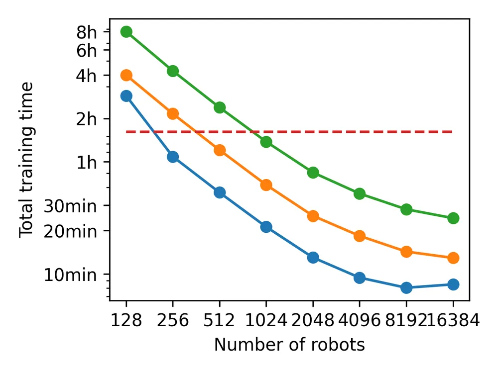
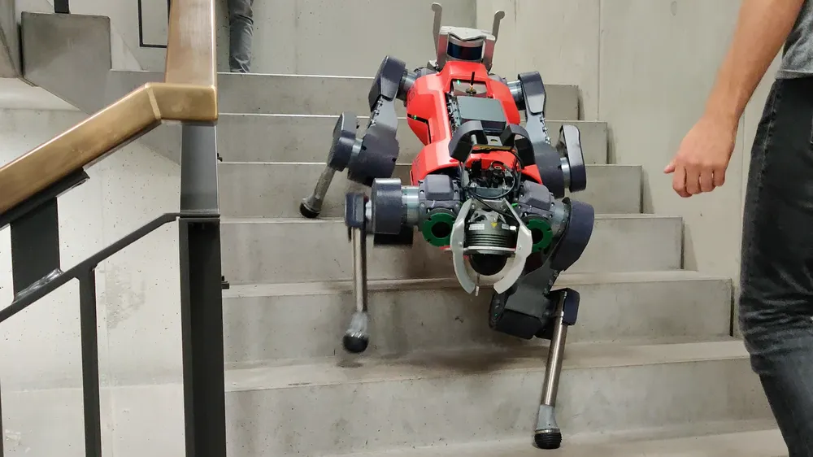
방법. 관측은 몸체 선·각속도, 중력 방향, 관절 위치·속도, 직전 행동과, 몸체 둘레 격자에서 잰 지형 높이 108개(지면에서 몸체까지의 거리)다. 행동은 관절 목표 위치이고 PD가 토크로 바꾼다. 걸음새를 정하는 항은 보상에도 행동에도 없다. 지형은 평지·경사·거친 면·계단·이산 장애물의 다섯 종을 8 m 정사각 칸으로 깔고, 로봇은 칸 가운데서 에피소드 동안 고정된 방향·속도 명령을 받는다. 칸 밖으로 나가면 레벨을 올리고, 명령이 요구한 거리의 절반도 못 가면 내리고, 맨 위를 푼 로봇은 무작위 레벨로 돌려보낸다. 계단과 장애물의 턱은 5 cm에서 20 cm로, 경사는 0°에서 25°로 오른다. PPO(proximal policy optimization)는 로봇 4,096대 × 24스텝 = 배치 98,304, 미니배치 24,576, epoch 5이고 학습률은 KL 발산으로 조절한다. 로봇당 25스텝(0.5 s) 아래에서는 수렴하지 못했다. 시간 초과(20 s)로 끊긴 에피소드는 critic 예측으로 부트스트랩하고 넘어짐만 종료로 둔다. 흔한 Gym 인터페이스와 Stable-Baselines는 이 구분을 무시한다고 저자들이 지적한다. sim-to-real 장치는 마찰 U(0.5, 1.25), 10 s마다 ±1 m/s 밀기, 실측 기반 관측 잡음(지형 높이 ±0.1 m), 현재 측정만 받는 LSTM(long short-term memory) 액추에이터 망이다. 정책은 50 Hz, 시뮬레이션 간격은 0.005 s다. 학습은 i9-11900K와 RTX A6000 한 장에서 갱신 1,500회가 20분 미만이고, 경사와 계단 내리기는 500회, 모든 지형의 맨 위는 1,000회에 풀렸다. 실물 ANYmal C는 정책을 그대로 올리고 필터나 제약 검사 없이 관절 목표를 보낸다. 지형 높이는 LiDAR elevation map에서 읽는다.
결과. 학습 시간은 험지 과제(로봇 4,096대, 배치 98,304, 갱신 1,500회) 기준이다. 비교 대상의 시간은 이 논문이 인용한 값이다.
| 조건·지표 | 이 논문 | 비교 대상 |
|---|---|---|
| 험지 학습 시간(RTX A6000 1장) | 20분 미만 | Lee 2020 12 h, DeepGait·Gangapurwala 2021 82·88 h, Miki 2022 120 h |
| 평지 학습 시간 | 4분 미만 | — |
| 학습 시간 대 로봇 수(배치 고정) | 4,000대 근처까지 거의 선형 감소 | 128대(CPU 구현 수준)에서 출발 |
| 로봇당 스텝 하한 | 25스텝(0.5 s) 아래에서 수렴 실패 | — |
| 시간 초과 부트스트랩 | 총보상 약 10–20 % 상승, critic 손실 감소 | 부트스트랩 없음 |
| 시뮬레이션 계단(전진 0.75 m/s) | 0.2 m까지 거의 100 % | — |
| 시뮬레이션 경사 | 25°까지 오름, 그 이상은 미끄러져 내려가기만 | — |
| 다른 로봇 | 팔 단 ANYmal C(무게 +20 %)·ANYmal B는 설정 그대로, A1은 액추에이터 모델 제거·이득 조정, Cassie는 한 발 서기 보상 추가 | — |
| VRAM(로봇 4,096대) | 험지 약 9 GB(렌더링 빼면 약 5.4 GB), 평지 약 6 GB(약 4.5 GB). 부록 Fig. 9에서 읽음 | — |
| 실물 ANYmal C | 계단 오르내리기와 장애물, 속도 0.6 m/s로 제한 | — |
travplan에 주는 의미. travplan의 지형 레벨 0–3(TP-0039)이 이 커리큘럼의 축소판이고, 옮기는 세부 넷(실물 지도 격차, 평균 레벨 지표, 시간 초과 부트스트랩, rollout 병목)은 Planner B.14.1 토글 끝에 있다.
요지는 둘이다. 첫째, Planner D의 DAgger와 RL 후학습은 지도마다 레벨을 균등하게 뽑는다(--levels).
지도 슬롯마다 레벨을 두고 목표에 닿으면 올리고 경로의 절반도 못 가면 내리는 게임식 규칙이 TP-0138의 손 작업(--scenarios curb_ramp --levels 3)을 대신할 후보다. 기대는 표집 효율과 망각 방지까지다.
둘째, 병목의 꼴이 같다. TP-0066의 한 라운드는 rollout이 208–245 s, 미세 조정이 5–6 s이고, rollout 시간의 약 3/4은 매 스텝 belief TravMap을 CPU에서 다시 만드는 일이다.
이 논문이 없앤 CPU 수집·GPU 전송 병목과 같다. 첫 처방은 TravMapBuilder의 device 옵션(TP-0084)과 rollout의 GPU 일괄 처리이고, Isaac Lab으로 옮기는 일(TP-0042)은 그 뒤다.
가져올 수 없는 것도 있다. 병렬의 이득은 물리가 GPU에서 돌 때만 온다. 커리큘럼의 진행 판정은 속도 명령 보행용이라, 목표가 정해진 내비게이션에서는 경로를 따라 줄인 거리로 바꿔야 한다.
학습 Controller(TP-0128의 TinyPolicy)에 쓴다면 rsl_rl의 증류가 그대로 맞는다(Controller F.6).
수치는 arXiv v3(2022-08-19)에서 읽었다. CoRL 2021 출판본(PMLR 164)과 대조하지 못했다. 배치 식, 시간 초과 부트스트랩, 커리큘럼 규칙, 추종 보상 식, 공개 코드 기본값과의 차이는 Planner B.14.1 토글에 있다. 여기서는 그 토글에 없는 것만 적는다.
풀려는 문제. on-policy RL은 자료 수집과 정책 갱신으로 나뉜다. 갱신은 GPU에서 쉽게 병렬이지만, 수집은 시뮬레이션과 보상·관측 계산이 CPU에 있어 PCIe 전송이 GPU 계산보다 최대 50배 느릴 수 있다. CPU 코어마다 프로세스를 띄우는 병렬은 코어 수와 메모리에 곧 막힌다. 이 논문은 Isaac Gym으로 수집까지 GPU에 두고, 그 규모에서 무엇을 바꿔야 하는지 잰다.
① 처리량(부록 A.1). 환경 한 스텝에서 시뮬레이션이 가장 느리고 로봇 수에 따라 천천히 는다. 관측·보상 계산이 둘째이고, 정책과 액추에이터 망 추론은 거의 상수다. 학습 스텝만 로봇 수와 무관하다. 시뮬레이션 간격 0.005 s(정책 한 스텝에 4번)의 하한은 물리가 아니라 이산 PD를 근사한 액추에이터 망이 불안정해지는 데서 온다. 접촉은 충돌체를 발·정강이·무릎·몸통만 남기고, 낮은 해상도 높이장을 삼각형 메시로 바꿔 수직면을 고쳤다. PhysX는 로봇끼리의 접촉을 무시해도 검출은 하므로 로봇이 흩어질수록 빨라지고, 학습 처음과 끝의 시뮬레이션 시간이 두 배 차이 났다.
② 보상 9항(부록 A.3). 모든 가중치에 시간 간격 $dt$를 곱한다. 추종 항의 커널은 $\phi(x) = \exp(-\lVert x \rVert^2 / 0.25)$이고 z축은 중력 방향이다.
| 항 | 정의 | 가중치 |
|---|---|---|
| 선속도 추종 | 명령과 실제 xy 속도 차의 커널 | 1 |
| 각속도 추종 | 명령과 실제 yaw rate 차의 커널 | 0.5 |
| 수직 속도 벌점 | z 속도 제곱 | 4 |
| roll·pitch 각속도 벌점 | xy 각속도 노름 제곱 | 0.05 |
| 관절 운동 벌점 | 관절 가속 제곱 + 관절 속도 제곱 | 0.001 |
| 토크 벌점 | 토크 노름 제곱 | 0.00002 |
| 행동 변화율 벌점 | 관절 목표 변화율 제곱 | 0.25 |
| 충돌 벌점 | 충돌 수 | 0.001 |
| 발 체공 보상 | 발마다 (체공 시간 − 0.5 s)의 합 | 2 |
… 이 토글의 나머지 블록 10개(문단·식·그림)는 대시보드 리서치 탭의 "자세히: Learning to Walk in Minutes의 방법과 수식" 토글에 있다.
이어진 연구. G.5 Miki 2022는 이 논문이 다음 과제로 꼽은 교사–학생과의 결합이고, G.9 ANYmal Parkour(Hoeller·Rudin)와 G.10 DTC는 이 학습 틀 위에서 기술 정책과 발 디딤 추종을 배웠다. 공개 코드 쪽은 Controller 문서 F.6이 정리한다. legged_gym은 2022-05 뒤로 README만 바뀌었고(마지막 2025-05) Isaac Lab의 velocity 과제와 rsl_rl(v5.5.1)이 그 자리를 이었다. walk-these-ways, Robot Parkour Learning(Planner B.12.2), G.8 Extreme Parkour(F.6.2)는 이 코드에서 시작했다. NVIDIA 쪽 계보는 Planner B.16.1, Isaac Gym 자체는 강화학습 문서 R.15의 참고문헌에 있다.
Robust Perceptive Locomotion — 높이 지도를 얼마나 믿을지를 보행 정책이 스스로 정하게 하여, 지도를 보는 보행의 속도와 blind 보행의 강건함을 한 제어기에 처음 함께 담았다.(arXiv:2201.08117, 원제 "Learning robust perceptive locomotion for quadrupedal robots in the wild", Miki·Lee·Hwangbo·Wellhausen·Koltun·Hutter, ETH Zürich RSL(Hwangbo는 KAIST, Koltun은 Intel), Science Robotics 7(62) 2022; 코드는 찾지 못했다(B.14.2 토글)) ETH Zürich Robotic Systems Lab(RSL)이 ANYmal C로 만든 제어기다. 발 주변 높이 샘플 208개와 고유수용(proprioception)을 GRU(gated recurrent unit) belief encoder에 넣고, attention gate가 높이 정보를 얼마나 통과시킬지 배운다. 눈·수풀·반사·드리프트로 지도가 틀리면 게이트가 닫혀 고유수용 보행으로 물러나고, 지도가 맞으면 지형을 미리 보고 걸음을 바꾼다. 여러 계절의 알프스·숲·지하·도시 배치에서 넘어진 적이 없다.
왜 마일스톤인가. 앞에는 두 갈래가 있었다. G.2 Lee 2020은 고유수용만으로 진흙·눈·수풀을 걸었지만, 발로 더듬은 뒤에야 걸음을 바꾸므로 0.6 m/s와 20 cm 턱이 한계였다. 높이 지도를 보는 모델 기반 제어기(Fankhauser ICRA 2018, Jenelten RA-L 2020; 원문 [24][25])는 빨랐지만 지도가 틀리면 같이 틀렸다. 이 논문은 둘을 한 정책에 넣고, 지도를 믿는 정도를 규칙이 아니라 끝단 학습으로 정하게 했다. G.2의 특권 교사–학생을 그대로 이으면서 학생 입력에 잡음 모델을 넣은 것이 핵심 장치이고, 저자들은 이를 시각 보행의 속도와 고유수용의 강건함을 합친 첫 험지 보행 제어기라고 적었다. 2.2 km 알프스 산행과 DARPA SubT 결선 1700 m를 넘어짐 없이 보였다. 뒤의 G.9 ANYmal Parkour는 이 교사–학생 구조와 높이 샘플 잡음 모델 위에 기술 정책과 내비게이션 정책을 얹었고, G.10 DTC는 이 정책을 RL(reinforcement learning, 강화학습) 기준선으로 두고 비교했다. G.6 자기 중심 깊이 보행은 이 잡음 모델을 "Noisy" 기준선으로 써서 지도 경로의 한계를 쟀다. 빠른 걸음을 따라가려고 만든 GPU 높이 지도는 elevation_mapping_cupy(인식 A.7.2)가 됐고, travplan L1이 그 코어를 쓴다.
초록 번역. (arXiv v1, 2022-01-20) 멀리 떨어진 위험한 환경에서 자율로 동작할 수 있는 다리 로봇은 아직 덜 탐사된 지역을 탐사할 기회를 크게 넓힐 것이다. 외수용(exteroception) 인식은 빠르고 에너지 효율적인 보행에 결정적이다. 지형에 닿기 전에 지형을 인식하면 걸음새(gait)를 미리 계획하고 적응시켜 속도와 안정성을 유지할 수 있다. 그러나 외수용 인식을 보행에 강건하게 활용하는 일은 로봇공학의 큰 난제로 남아 있었다. 눈, 초목, 물은 시각적으로 로봇이 디딜 수 없는 장애물처럼 보이거나, 높은 반사율 때문에 아예 빠져 있다. 또한 깊이 인식은 어려운 조명, 먼지, 안개, 반사하거나 투명한 표면, 센서 가림 등으로 나빠질 수 있다. 이 때문에 지금까지 가장 강건하고 일반적인 다리 보행 해법은 고유수용(proprioception)에만 의존한다. 이는 보행 속도를 크게 제한한다. 로봇이 걸음새를 맞추기 전에 지형을 몸으로 더듬어야 하기 때문이다. 여기서 우리는 다리 보행을 위해 외수용과 고유수용 인식을 통합하는 강건하고 일반적인 해법을 제시한다. 우리는 고유수용 입력과 외수용 입력을 통합하는 attention 기반 순환 인코더를 활용한다. 이 인코더는 끝단까지(끝단) 학습되며, 휴리스틱에 기대지 않고 서로 다른 인식 양식을 매끄럽게 결합하는 법을 배운다. 그 결과는 높은 강건함과 속도를 갖춘 다리 보행 제어기다. 이 제어기는 여러 계절에 걸쳐 다양한 어려운 자연·도시 환경에서 시험되었고, 알프스에서 한 시간 길이의 하이킹을 사람 등산객에게 권장되는 시간 안에 완주했다.
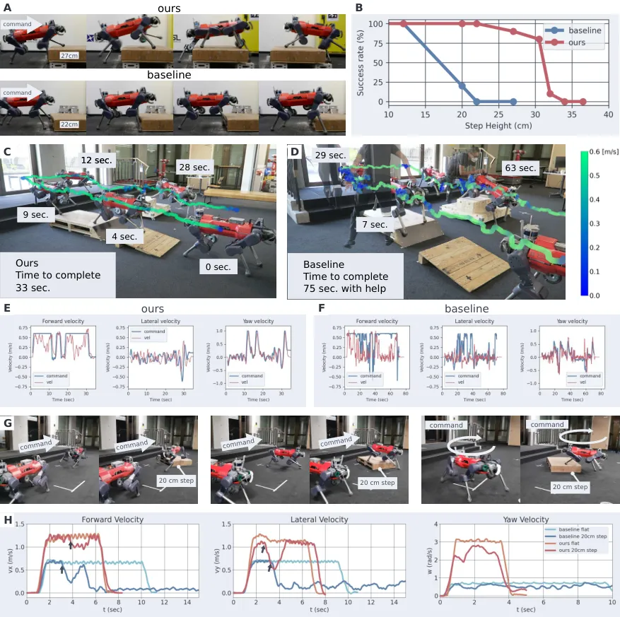
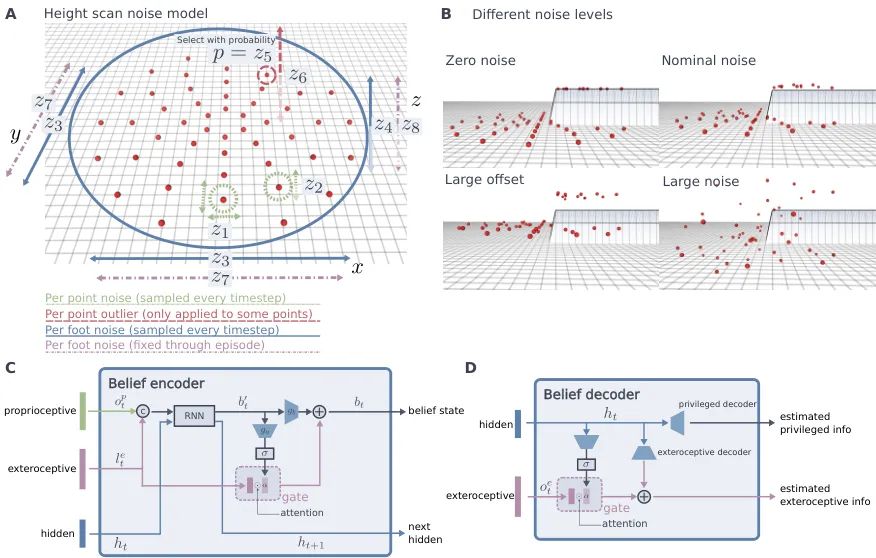
방법. 세 단계다. 첫째, 시뮬레이션(RaiSim, 학습 액추에이터 모델)에서 잡음 없는 높이 샘플과 접촉력·마찰·외력 같은 특권 정보(privileged information)를 보는 교사를 PPO(proximal policy optimization)로 학습한다. 환경 1000개를 병렬로 굴리고 반복마다 환경당 250스텝을 모은다. 둘째, 실물에서 얻을 수 있는 입력(고유수용 133차원과 잡음 섞은 높이 샘플 208차원)만 보는 학생을 지도학습한다. 학생의 belief encoder는 2층 GRU(층마다 50유닛)이고, 게이트가 96차원 높이 특징을 얼마나 더할지 정한다. 손실은 교사 행동 모방과 참 높이·특권 정보 복원의 합(비율 1 : 0.5)이고, 표본은 학생 자신이 굴린 상태에서 모은다. 높이 샘플 잡음은 평소·큰 오프셋·큰 잡음 세 조건을 60 : 30 : 10으로 고르고, 크기는 학습 진행에 따라 선형으로 키운다. 셋째, 학생을 미세 조정 없이 ANYmal C에 올린다. 돔 LiDAR 2대나 RealSense D435 4대의 점군으로 GPU에서 20 Hz 로봇 중심 높이 지도를 만들고, 50 Hz 정책이 발마다 반지름 0.08–0.48 m 원 위의 점 52개에서 높이를 읽는다. 출력은 다리별 CPG(central pattern generator) 위상 오프셋과 관절 목표 잔차다. 관측·보상·잡음 모델의 수식은 인식 A.7.1 토글에 있다.
결과.
| 조건·지표 | 이 논문 | 비교 대상(고유수용 기준선, Lee 2020) |
|---|---|---|
| 나무 턱 넘기(높이마다 10회, 5초 안) | 30.5 cm까지 80 % 이상(실패는 대부분 옆으로 피함). 32 cm 넘는 턱 앞에서는 머뭇거림 | 20 cm에서 20 %, 22 cm 이상 0 %(그림 B에서 읽음) |
| 평지 최대 속도(전진·횡·회전) | 1.2 m/s, 1.2 m/s, 3 rad/s. 20 cm 턱에서도 거의 같음 | 0.6 m/s, 0.6 m/s, 0.6 rad/s |
| 장애물 코스(경사판·단 20 cm, 계단 17 cm, 블록 20 cm) | 33초, 도움 없음 | 75초, 세 장애물에서 사람이 들어 밀어 줌 |
| Etzel 산행 2.2 km, 고도 상승 120 m | 78분 완주, 넘어짐 0(정상까지 31분) | 안내 서비스 76분, 표지판의 정상 35분(사람 기준) |
| 시뮬레이션 격자 턱·계단(41 × 41 조합, 300회) | 훨씬 넓은 파라미터 범위에서 성공 | 좁은 범위 |
| DARPA SubT 결선(ANYmal 4대) | 터널·도시·동굴 1700 m 넘게 탐사, 넘어짐 0 | 해당 없음 |
| 게이트 절제(시뮬 턱 0.31 m, 작은 잡음, 100회) | GRU gate 약 86 % | GRU no gate 약 69 %, MLP gate 약 64 %(그림 S2B에서 읽음) |
travplan에 주는 의미. 지도를 믿을지 말지를 정책이 배우게 한 것인데, travplan은 그 판단을 TravMap의 sigma 채널로 밖에 드러내 Planner와 Controller가 함께 쓴다. 그래서 가져올 것은 게이트 자체보다 학생 쪽 잡음 모델이다.
L1 belief로 Planner D를 다시 배우는 TP-0055에서, 평소·큰 오프셋·큰 잡음 세 조건은 belief 지도에 넣을 교란 설계가 된다. 큰 오프셋 조건은 TP-0146이 고친 매퍼의 반 칸 어긋남과 TP-0148의 포트홀 가장자리 mixed pixel이 실제로 만든 오류와 같은 모양이다.
그대로 옮기지 못하는 것은 되먹임의 출처다. 이 정책은 폼 블록이나 투명 아크릴에 발이 닿은 뒤 belief를 고치는데, 스워브 plant(연석 한계 0.08 m)는 지형을 더듬을 수 없다. 바퀴 로봇이 쓸 수 있는 신호는 명령과 실현 twist의 차이(미끄럼·막힘)뿐이고, 그 신호는 GP 잔차(TP-0068)가 받는다.
층으로 보면 이 정책은 travplan의 Controller가 아니라 그 아래 plant 자리다. 장애물 코스 실험에서 경로를 따라 속도 명령을 낸 것은 pure pursuit였고, travplan의 TrackerController가 같은 자리다(B.14.2 토글).
수치는 arXiv v1(2022-01-20)에서 읽었다. Science Robotics 출판본과는 대조하지 못했다. HTML판은 기준선 비교 그림(본문 Fig. 4)에 캡션이 없어, 그 뒤의 그림 번호가 본문 참조보다 하나 작다. 관측·행동·보상·잡음 모델의 수식은 인식 A.7.1 토글에 있다. 여기에는 그 토글에 없는 것만 적는다.
풀려는 문제. 관측 이력에서 belief를 만들어 푸는 POMDP(partially observable Markov decision process)다. 보이지 않는 것은 둘이다. 마찰·접촉력·외력 같은 특권 상태와, 잡음이 커지면 사실상 관측되지 않는 지형이다. 순환망 정책을 처음부터 RL로 배우면 느리므로(Lee 2020), 특권 정보를 보는 교사를 먼저 만들고 학생에게 증류한다(배경 0.12).
① 교사. 관측은 고유수용 133, 높이 샘플 208, 특권 50차원이다. 높이 샘플은 발마다 인코더 $g_e$(은닉 80·60)로 24차원씩, 특권 정보는 $g_p$(은닉 64·32)로 24차원으로 줄여 본체 MLP(은닉 256·160·128, LeakyReLU)에 넣는다. PPO는 학습률 5e-4(감쇠 0.9999), 할인 0.996, GAE λ 0.95, 클립 0.2, 엔트로피 0.005, 배치 8300, epoch 2다. 지형은 Perlin 거친 면, 양자화한 불연속 면, 큰 단(0–0.4 m), 격자 턱(높이 0.05–0.4 m, 폭 0.2–0.7 m), 계단 네 종류(깊이 0.25–1.0 m, 높이 0.01–0.22 m), 상자(최대 0.25 m)다. 계단은 높이장이 아니라 상자로 만든다. 높이장의 계단 수직면이 완전히 수직이 아니어서 정책이 그 경사를 악용했고, 실물 전이가 나빠졌기 때문이다. 지형 난이도는 입자 필터 커리큘럼(Lee 2020)이, 벌점과 외란 크기는 계수 $c_{k+1} = c_k^{0.98}$이 올린다.
② 학생 belief encoder. 핵심 식은 셋이다. GRU가 고유수용 $o^p_t$, 잡음 섞인 높이 특징 $l^e_t = g_e(\tilde o^e_t)$, 은닉 상태 $h_t$에서 중간 belief $b'_t$를 내고, 게이트 $\alpha$(96차원)가 높이 특징을 얼마나 더할지 정한다.
$$ b'_t, h_{t+1} = \mathrm{GRU}(o^p_t, l^e_t, h_t), \qquad \alpha = \sigma(g_a(b'_t)), \qquad b_t = g_b(b'_t) + l^e_t \odot \alpha $$
$b_t$는 120차원(96 + 24)이고 교사의 $(l^e_t, l^{priv}_t)$ 자리에 들어간다. $g_a$와 $g_b$는 은닉 64·64 MLP다. 본체 MLP는 교사 가중치로 초기화한다. 손실은 $\mathcal L = \mathcal L_{bc} + 0.5\,\mathcal L_{re}$이고, GRU는 10스텝 절단 BPTT(backpropagation through time)로 학습한다. 환경 300개에서 400스텝씩 모은다. 일정은 세 토막이다. 처음 10 epoch은 평지, 그 뒤 적응 지형 커리큘럼, 20 epoch부터 100 epoch까지 잡음 계수 $c_{sk}$를 0에서 1로 선형으로 올린다. 잡음 파라미터 $z$(점·발·에피소드 단위의 위치·높이 분산과 이상치 확률)는 세 조건이다. 평소는 작은 고정값, 큰 오프셋은 발 단위 분산을 $0.1\,c_{sk}$로, 큰 잡음은 점 단위 분산까지 $0.1$–$0.3\,c_{sk}$로 키운다(원문 식 2–4).
③ 게이트 절제(S9). GRU gate, GRU no gate, MLP gate, MLP no gate 넷을 같은 조건으로 학습했다. MLP는 특권 정보를 복원하지 못했다. 지형 10종 × 파라미터 100개 × 300스텝에서 교사와의 행동 차이는 작은 잡음에서 게이트가 모든 지형에서 작았다(격자 턱 1.444 대 1.674, 상자 0.928 대 1.123). 큰 잡음에서는 거의 같았다(격자 턱 2.218 대 2.212). 높이 복원 오차는 작은 잡음에서 게이트가 모든 지형에서 작았고(상자 2.13e-3 대 3.38e-3), 큰 잡음에서도 조금 작았다. 저자들은 지도가 믿을 만할 때 게이트가 skip 경로로 높이를 흘리고, 아니면 막아 고유수용 모델처럼 된다고 해석한다.
… 이 토글의 나머지 블록 3개(문단·식·그림)는 대시보드 리서치 탭의 "자세히: Robust Perceptive Locomotion의 방법과 수식" 토글에 있다.
이어진 연구. 같은 연구실의 G.9 ANYmal Parkour(B.14.2)는 이 교사–학생과 높이 샘플 잡음 모델 위에 기술 정책 다섯과 내비게이션 정책을 얹었고, G.10 DTC(B.14.2)는 이 정책을 RL 기준선으로 삼아 0.1 m 갭과 1.0 m 빔에서 실패하는 것을 보였다. GPU 높이 지도는 elevation_mapping_cupy(인식 A.7.2, IROS 2022)로 공개됐고, travplan L1(TP-0146·0148)이 그 코어를 쓴다. G.6 자기 중심 깊이 보행은 이 잡음 모델로 만든 "Noisy" 기준선이 작은 로봇의 징검돌에서 1 m밖에 못 가는 것을 보이며 지도 없는 경로를 택했다. 후속 바퀴·다리 로봇은 B.14.4(바퀴·다리 로봇과 상용화)에 있다.
자기 중심 깊이 보행 — 높이 지도를 만들지 않고 앞쪽 깊이 영상에서 관절 목표를 바로 내는 첫 끝단(end-to-end) 보행 시스템이고, 작은 A1이 계단·연석·징검돌·틈을 지났다.(arXiv:2211.07638, 원제 "Legged Locomotion in Challenging Terrains using Egocentric Vision", Agarwal·Kumar(공동 1저자)·Malik·Pathak, CMU·UC Berkeley, CoRL 2022(구두 발표); 프로젝트 페이지, 코드는 프로젝트 페이지에 없다) CMU Pathak 연구실과 UC Berkeley Malik 연구실의 논문이다. 사람이 몇 걸음 앞의 땅을 보고 발을 놓듯, 정책이 GRU(gated recurrent unit) 기억으로 지나간 지형을 기억해 뒷발을 놓는다. 학습은 두 단계다. 몸 둘레의 높이 점(scandots)을 보는 정책을 RL(reinforcement learning, 강화학습)로 배우고, 깊이 영상과 고유수용(proprioception)만 보는 학생에게 DAgger로 증류한다.
왜 마일스톤인가. 앞의 G.3 RMA는 같은 연구실이 A1으로 보인 blind 적응이고, 이 논문은 그 구조에 시각을 넣었다. G.5 Miki 2022는 지형을 보지만 높이 지도를 거친다. 지도는 자세 추정으로 깊이 영상을 이어 붙이므로, 자세가 밀리면 지도도 밀리고 학습 때 큰 잡음을 넣어야 한다. 지도 대신 기억이다. 앞쪽 카메라 하나의 정책이 GRU로 지나간 지형을 기억해 뒷발을 놓고, 깊이 영상에서 관절 각도를 바로 낸다. 이것을 보인 첫 시스템이다. 키 40 cm(ANYmal C와 Spot은 70 cm)의 A1이 고관절 높이 28 cm의 89 %인 25 cm 계단을 올랐고, 걸음새(gait) prior 없이 배운 큰 고관절 벌림이 그것을 가능하게 했다. RL은 싼 입력(scandots)으로, 비싼 깊이 렌더링은 지도학습 증류에만 쓰는 두 단계 절차가 뒤의 표준이 됐다. G.8 Extreme Parkour(Controller F.6.2)가 같은 두 단계로 파쿠르를 배웠고, Robot Parkour Learning(Controller F.6 표)이 같은 깊이 증류를 썼으며, LocoFormer(B.16.5)의 동역학 무작위화 항목이 여기서 왔다.
초록 번역. (arXiv v1, 2022-11-14) 동물은 시각을 써서 정밀하고 민첩하게 이동할 수 있다. 이 능력을 재현하는 것은 로봇공학의 오랜 목표였다. 전통적인 접근은 이 문제를 높이 지도(elevation map) 작성 단계와 발 디딤(foothold) 계획 단계로 나누는 것이었다. 그러나 높이 지도 작성은 실패와 큰 잡음 허상에 취약하고, 전용 하드웨어가 필요하며, 생물학적으로 타당하지 않다. 이 논문에서 우리는 계단, 연석, 징검돌, 틈을 지날 수 있는 첫 끝단(end-to-end) 보행 시스템을 제시한다. 우리는 이 결과를 앞을 보는 깊이 카메라 한 대를 단 중간 크기 사족 로봇에서 보인다. 로봇이 작기 때문에 다른 곳에서는 보지 못한 특수한 걸음새 패턴을 찾아내야 한다. 자기 중심 카메라 때문에 정책은 뒷발 아래 지형을 추정하려면 과거 정보를 기억해야 한다. 우리는 정책을 시뮬레이션에서 학습한다. 학습은 두 단계다. 먼저 계산이 싼 깊이 영상의 변형을 써서 강화학습으로 정책을 학습하고, 2단계에서 지도학습으로 그것을 깊이를 쓰는 최종 정책으로 증류한다. 얻어진 정책은 실세계로 옮겨지며 로봇의 제한된 계산 자원에서 실시간으로 돌 수 있다. 이 정책은 매우 다양한 지형을 지나면서 밀기, 미끄러운 표면, 바위 지형 같은 교란에 강건하다. 영상은 https://vision-locomotion.github.io 에 있다.
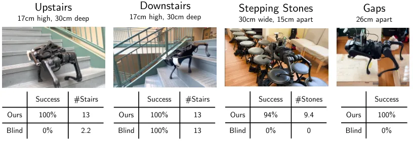
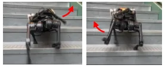
방법. 목표는 깊이 영상과 고유수용에서 50 Hz로 관절 목표 각도를 내는 정책 하나다. 깊이 렌더링은 시뮬레이션을 10배 느리게 하므로 RL에 바로 쓰면 수십억 표본이 필요하다. 1단계는 Isaac Gym(legged_gym)에서 로봇 4096대를 굴려 scandots(로봇 좌표에 고정된 xy 점들의 지형 높이), 고유수용, 속도 명령을 보는 정책을 PPO(proximal policy optimization)로 배운다. 걸음새 prior 없이 에너지 벌점 보상(Fu 2021)에 장비 보호 벌점을 더했고, 150억 표본에 13시간이다. 2단계는 실물과 같은 자세의 시뮬레이션 카메라로 깊이를 렌더링해(환경 256개, 초당 500스텝) 학생을 DAgger로 증류한다. 학생을 24스텝 굴린 상태마다 1단계 정책의 행동을 라벨로 붙이고, 행동의 MSE(mean squared error)를 절단 BPTT(backpropagation through time)로 줄인다. 600만 표본에 6시간이다. 구조는 둘이다. 단일 구조는 ConvNet으로 줄인 깊이 특징을 GRU에 넣어 관절 각도를 낸다. RMA 구조는 1단계의 전방향 기본 정책을 그대로 두고, 지형 잠재는 깊이와 고유수용의 GRU로, 환경 잠재는 고유수용 GRU로 추정한다. 실물 A1은 머리 안 RealSense 깊이 영상(480 × 848, 100 ± 20 ms)을 58 × 87로 줄여 Jetson NX의 ConvNet에 넣고, 특징을 UDP로 UPboard의 정책에 보낸다. 10 ± 10 ms 지연은 2단계에서 미리 넣었다. 관절 목표는 400 Hz PD(Kp 40, Kd 0.5)가 토크로 바꾼다.
결과.
| 조건·지표 | 이 논문 | 비교 대상 |
|---|---|---|
| 실물 계단 오르기(17 cm, 13단) | 100 % | blind 0 %(평균 2.2단) |
| 실물 계단 내리기 | 100 % | blind 100 %(충격 걸음새, 고관절 탈구) |
| 실물 징검돌(폭 30 cm, 간격 15 cm) | 94 %(평균 9.4개) | blind 0 % |
| 실물 틈 26 cm | 100 % | blind 0 % |
| 실물 도시 최대 | 계단 24 cm(최소 깊이 28 cm), 연석과 장애물 26 cm | 해당 없음 |
| 시뮬 징검돌 전진 거리(m, 단위는 본문) | RMA 18.83, 단일 20.72 | Noisy(지도 잡음) 1.09, blind 1.02 |
| 시뮬 계단 전진 거리(m) | RMA 31.24, 단일 42.4 | Noisy 6.74, blind 16.64 |
| 시뮬 네 지형 합계 넘어짐까지 시간(s) | RMA 278.45, 단일 275.01 | Noisy 147.83, blind 175.06 |
travplan에 주는 의미. travplan은 반대쪽에 걸었다. TravMap을 Planner와 Controller의 공통 표현으로 두고, 지도 없는 대조군은 TP-0129에서 쟀다(Controller E.12). 지도 없이 학습한 정책은 GT 지도 평가(E.12 결과 ①)에서 사족 12개 중 8개, 스워브 3개를 지났고, 지도가 비싼 쪽은 기동력이 낮은 쪽이었다.
그래도 가져올 것은 둘이다. 첫째, 싼 특권 입력으로 RL을 하고 실물 입력으로 증류하는 두 단계다. Planner D의 DAgger(TP-0075)는 교사와 학생이 같은 참값 지도를 보고, 학생을 L1 belief로 바꾸는 TP-0055가 이 논문의 2단계에 해당한다.
둘째, 이 논문의 "Noisy" 기준선 결과다. G.5의 잡음 모델로 지도 잡음에 강하게 만든 학생은 징검돌에서 1 m를 못 갔다. 잡음 강건함은 정밀도를 깎으며, travplan에서는 포트홀 가장자리(TP-0146·0148)가 같은 자리다. 잡음을 넣어 버티게 하기보다 지도 자체를 고친 쪽이 맞았다.
옮기지 못하는 것은 카메라 하나로 보는 범위다. 보도 배달 로봇은 연석 한계 0.08 m라 넘는 게 아니라 돌아가야 하고, 돌아갈 경로는 카메라 시야 밖 지도가 있어야 나온다. 뒷발 아래 지형을 GRU가 기억하는 일은 travplan에서 belief 지도의 미관측 칸(sigma = 1)과 sim/visibility.py가 맡는다.
수치는 arXiv v1(2022-11-14)에서 읽었다. CoRL 출판본(PMLR)과는 대조하지 못했다.
풀려는 문제. 입력은 깊이 영상 $\mathbf d_t$, 고유수용 $\mathbf x_t$, 명령 $\mathbf u^{cmd}_t = (v^{cmd}_x, \omega^{cmd}_z)$이고 출력은 관절 목표 12개다. 앞쪽 카메라는 몸 아래를 못 보므로 정책이 기억을 가져야 한다. 깊이 렌더링이 비싸서 RL을 바로 못 하므로 scandots $\mathbf m_t$로 RL한 뒤 증류한다. 저자들은 1단계 가치가 최적에 $\epsilon$만큼, 2단계 행동이 1단계에 $\eta$만큼 가까우면 2단계의 가치 손실이 $(2\epsilon\gamma + \eta c)/(1-\gamma)$로 묶인다는 정리(Thm 2.1)를 붙였다. 보상과 전이가 행동에 Lipschitz라는 가정이 든다.
① 1단계 RL. 고유수용은 관절 위치와 속도, 각속도, roll과 pitch, 직전 행동이다. RMA 구조는 특권 정보 $\mathbf e_t$(무게중심, 마찰, 모터 세기)도 받는다. 두 구조의 식은 다음과 같다.
$$ \text{단일: } \boldsymbol\gamma_t = \mathrm{MLP}(\mathbf m_t), \qquad \mathbf a_t = \mathrm{GRU}_t(\mathbf x_t, \boldsymbol\gamma_t, \mathbf u^{cmd}_t) $$
$$ \text{RMA: } \boldsymbol\gamma_t = \mathrm{GRU}_t(\mathbf m_t), \qquad \mathbf z_t = \mathrm{MLP}(\mathbf e_t), \qquad \mathbf a_t = \mathrm{MLP}(\mathbf x_t, \boldsymbol\gamma_t, \mathbf z_t, \mathbf u^{cmd}_t) $$
둘 다 PPO와 24스텝 절단 BPTT로 학습한다. 보상은 여섯 항이다. 절대 일 $-|\boldsymbol\tau \cdot \mathbf q|$(계수 $-10^{-4}$), 명령 추종 $v^{cmd}_x - |v^{cmd}_x - v_x| - |\omega^{cmd}_z - \omega_z|$(7), 발 힘 저크($-10^{-4}$), 접지 중 발 끌기($-10^{-4}$), 허벅지·정강이 접촉($-1$), 생존 보너스(1)이다. 걸음새 prior와 참조 발 궤적은 없다. 험지에서는 $v^{cmd}_x = 0.35$ m/s에 목표 방향 ±10°이고, 평지에서는 곡선 추종(0.2–0.75 m/s, ±60°), 제자리 회전, 정지를 고르게 섞는다. pitch가 90°를 넘거나 몸통이나 머리가 부딪히면 끝낸다. 지형은 8 m × 8 m 하위 지형 100개를 20 × 10 격자로 두고(방법 절은 6 × 10으로 적어 어긋난다), 행마다 같은 종류를 쉬운 것부터 어려운 것 순으로 둔다. 길이의 절반을 넘으면 승급, 명령 거리의 절반을 못 가면 강등이다(legged_gym 커리큘럼). 무작위화는 높이 지도 갱신 주기 80–120 ms, 지연 10–30 ms, 질량 −2–6 kg, 무게중심 ±0.15 m, 15초마다 0.3 m/s 밀기, 마찰 0.3–1.25, 프랙탈 요철 2–4 cm(평지 10 cm), 모터 세기 90–110 %, PD 이득 Kp 35–45와 Kd 0.4–0.6이다. 관측에는 작은 가우시안 잡음을 더한다(scandots 높이는 5배 정규화 뒤 σ 0.07).
② 2단계 증류. 깊이를 ConvNet(2D 합성곱과 max-pool)으로 줄인 $\tilde{\mathbf d}_t$가 scandots 자리를 대신한다.
$$ \text{단일: } \hat{\mathbf a}_t = \mathrm{GRU}_t(\mathbf x_t, \tilde{\mathbf d}_t, \mathbf u^{cmd}_t), \qquad \text{RMA: } \hat{\boldsymbol\gamma}_t = \mathrm{GRU}_t(\mathbf x_t, \mathbf u^{cmd}_t, \tilde{\mathbf d}_t), \quad \hat{\mathbf z}_t = \mathrm{GRU}_t(\mathbf x_t, \mathbf u^{cmd}_t) $$
단일 구조는 $\|\hat{\mathbf a}_t - \mathbf a_t\|^2$를, RMA 구조는 $\|\hat{\boldsymbol\gamma}_t - \boldsymbol\gamma_t\|^2$와 $\|\hat{\mathbf z}_t - \mathbf z_t\|^2$를 줄인다. 기본 정책은 다시 학습하지 않는다. 학생을 시뮬레이터 안에서 $N = 24$스텝 굴리고 마주친 상태마다 1단계 행동을 라벨로 붙인다(DAgger). 학생이 모은 상태에서 교사 라벨을 받는 점은 travplan Planner D의 DAgger(배경 0.12)와 같다.
… 이 토글의 나머지 블록 4개(문단·식·그림)는 대시보드 리서치 탭의 "자세히: 자기 중심 깊이 보행의 방법과 수식" 토글에 있다.
이어진 연구. G.8 Extreme Parkour(Controller F.6.2)는 같은 두 단계에 방향(heading) 증류를 더해 A1이 파쿠르를 하게 했다. Robot Parkour Learning(Controller F.6 표)은 기술 다섯 개를 깊이 영상 정책 하나로 증류했다. LocoFormer(B.16.5)는 이 논문의 동역학 무작위화 항목을 넓혀 로봇 10만 대에서 배웠다. 같은 연구실의 VP-Nav(B.16.5)는 이 정책의 앞 세대인 RMA 위에 시각 Planner를 얹은 반대 방향의 설계라, 둘을 나란히 읽으면 지도를 어느 층에 둘지가 보인다.
Walk These Ways — 접촉 위상·주파수·발 높이·몸 높이·pitch·발 폭을 명령으로 받는 정책 하나(Multiplicity of Behavior, MoB)를 평지에서만 학습하고, 사람이 매개변수를 돌려 계단·덤불·밀기·춤 같은 분포 밖 과제를 재학습 없이 해냈다.(arXiv:2212.03238, 원제 "Walk These Ways: Tuning Robot Control for Generalization with Multiplicity of Behavior", Margolis·Agrawal, MIT Improbable AI Lab, CoRL 2022(구두 발표); 코드, 프로젝트 페이지) MIT Improbable AI Lab이 Unitree Go1으로 만든 보행 제어기다. 같은 과제(속도 추종)를 푸는 방법은 여럿인데 보통의 RL(reinforcement learning, 강화학습)은 그중 하나로 수렴한다. 이 논문은 그 자유도를 사람이 돌릴 수 있는 명령으로 드러냈다. 학습 코드, Go1 사전 학습 정책, 액추에이터 망, 배포 코드가 MIT 라이선스로 공개돼 많은 후속 저장소의 바탕이 됐다(참고문헌 D.5c·D.8, Controller F.6.1).
왜 마일스톤인가. 학습 틀은 G.4 Learning to Walk in Minutes의 것이다. Isaac Gym에서 로봇 4096대를 굴려 PPO(proximal policy optimization)로 25.8억 스텝을 배우고, 명령 범위는 같은 연구실 Rapid Locomotion(B.16.5)의 격자 적응 커리큘럼이 넓힌다. 그 앞의 G.1, G.2, G.3은 모두 보상이 고른 걸음새(gait) 하나를 냈고, 실물에서 실패하면 보상과 환경을 고쳐 다시 학습했다. 걸음새 매개변수를 명령으로 받는 발상은 2족의 Siekmann 2021에서 왔지만 매개변수가 적어 과제 바꾸기에는 쓰이지 않았다. 이 논문이 처음 보인 것은 매개변수 8개로 사족의 모든 2박자 접촉 패턴과 자세를 한 정책에 담고, 평지에서만 배운 그 정책이 사람의 조율로 계단, 22 cm 바 아래, 덤불을 지나고, 시뮬레이션의 16 cm 플랫폼에서 기준선을 넘는 것이다. 뒤의 DribbleBot과 ASMP(B.16.5)가 이 걸음 시계와 보상 위에 섰고, Go2 이식본이 실물에 올라가 있다(F.6.1). travplan은 그 이식본의 안전 분기를 반면교사로 읽었다(F.6.1 ⑦).
초록 번역. (arXiv v1, 2022-12-06) 학습된 보행 정책은 학습 중 겪은 것과 비슷한 다양한 환경에 빠르게 적응할 수 있지만, 분포 밖 시험 환경에서 실패할 때 빠르게 조율할 수단이 없다. 그래서 새 과제에서 좋은 성능을 얻으려면 보상과 환경을 다시 설계하는 느리고 반복적인 주기가 필요하다. 대안으로 우리는 학습 과제를 서로 다른 방식으로 푸는 구조화된 보행 전략의 집합을 담은 정책 하나를 학습하자고 제안한다. 그 결과가 행동의 다중성(Multiplicity of Behavior, MoB)이다. 서로 다른 전략은 서로 다르게 일반화하며, 새 과제나 환경에 맞춰 실시간으로 고를 수 있어 시간이 많이 드는 재학습을 건너뛴다. 우리는 빠르고 강건한 오픈소스 MoB 보행 제어기 Walk These Ways를 공개한다. 이 제어기는 발 스윙, 자세, 속도가 다른 다양한 걸음새를 실행할 수 있어 웅크리기, 깡충 뛰기, 고속 달리기, 계단 통과, 밀기 버티기, 박자에 맞춘 춤 같은 다양한 하위 과제를 열어 준다. 영상과 코드 공개: https://gmargo11.github.io/walk-these-ways/
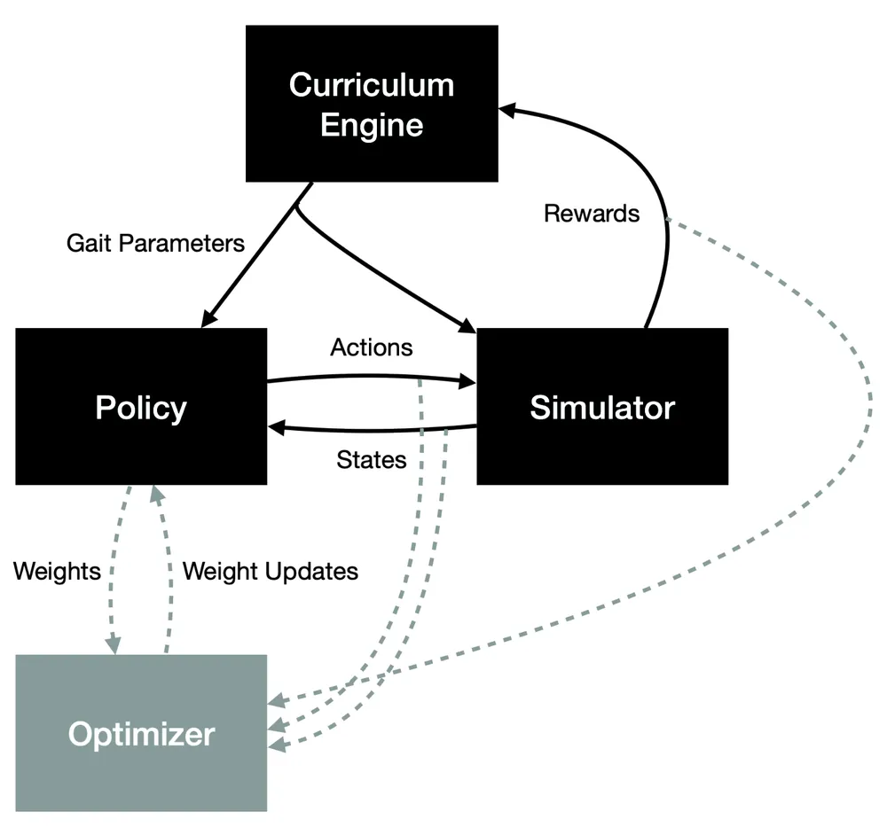
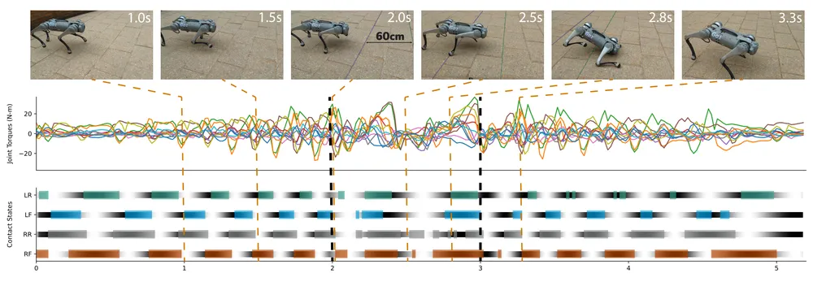
방법. 정책은 속도 명령(전진·횡·yaw)과 행동 매개변수 8개를 함께 받는다. 8개는 발 쌍 사이 위상 오프셋 셋(pronk (0, 0, 0), trot (0.5, 0, 0), bound (0, 0.5, 0), pace (0, 0, 0.5), 사이 값은 gallop 등), 걸음 주파수, 몸 높이, 몸 pitch, 발 폭, 발 스윙 높이다. 보상은 세 묶음이다. 과제 보상(xy 속도와 yaw 추종), 매개변수에 따라 바뀌는 보조 보상(접촉 일정 추종을 발 힘과 발 속도로, 몸 높이와 pitch, Raibert 휴리스틱 발 위치, 스윙 높이), 고정 보조 보상(z 속도, 발 미끄럼, 충돌, 토크, 행동 평활 등)이다. 총보상은 과제 보상에 보조 벌점의 지수를 곱한 꼴이라 늘 양수이고, 벌점이 커도 과제를 포기하지 않는다. 발 폭은 발 사이 거리를 직접 보상하지 않고, Raibert 휴리스틱이 속도와 접촉 일정에 맞춰 조정한 목표 발 위치를 보상한다. 그래야 빠른 회전과 충돌하지 않는다. 정책 입력은 관측(관절 위치와 속도, 몸 좌표 중력), 명령, 매개변수, 직전 행동, 발마다의 시간 기준 사인값의 30스텝 이력이고, 여기에 이력에서 지도학습으로 추정한 몸 속도와 마찰(Ji 2022식)을 더한다. 본체는 MLP 512·256·128(ELU), 출력은 관절 목표 12개(PD kp 20, kd 0.5)다. 학습은 Isaac Gym에서 평지만, 로봇 4096대, 25.8억 스텝이다. 지형은 무작위화하지 않고 질량, 모터 세기, 관절 보정, 마찰, 반발, 중력 방향을 무작위화한다. 액추에이터 망(Hwangbo 2019 방식)과 약 20 ms 행동 지연을 넣었다. 실물은 Go1 Edu의 Jetson TX2 NX에서 50 Hz로 돈다.
결과.
| 조건·지표 | 이 논문 | 비교 대상(gait-free 기준선, 같은 학습에서 매개변수 보상만 뺌) |
|---|---|---|
| 평지 속도 추종 보상(시뮬, 최대 1) | trot 0.92, bound 0.88, pronk 0.85, pace 0.83 | 0.94 |
| 평지 yaw 추종 보상 | trot 0.70, pace 0.66, pronk 0.64, bound 0.63 | 0.76 |
| 16 cm 플랫폼 지형 생존 시간 비율(평지만 학습, 10초) | trot 0.88, pace 0.87, pronk 0.82, bound 0.82 | 0.83 |
| 플랫폼 지형 속도 추종 보상 | pronk 0.84, trot 0.80, bound 0.80, pace 0.76 | 0.81 |
| 기계 동력(시뮬, 3.0 m/s. 원문 단위 J) | trot 98, pace 99, pronk 112, bound 127 | 102 |
| 기계 동력(0 m/s) | trot 9, pace 13, bound 22, pronk 32 | 17 |
| 실물 걸음새 전환 | trot·pronk·bound·pace와 2 ↔ 4 Hz 모두 추종 | 걸음새 하나 |
| 실물 분포 밖 과제 | 22 cm 바 아래(몸 두께 13 cm), 계단과 연석, 덤불, 밀기 버티기, 60 cm 도약, 90 bpm 춤 | 높이와 자세가 고정이라 바 아래와 짐 내리기 불가 |
travplan에 주는 의미. 과제를 푸는 방법이 여럿일 때 그 자유도를 재학습 대상이 아니라 실행 중 명령으로 드러낸다는 발상은 travplan의 Controller에 그대로 걸린다. MPPI의 비용 항(control/mppi/costs.py의 CostTerm)과 가중치가 이 논문의 매개변수 자리이고, 지금은 실행 중에 바꾸지 않는다.
학습 Controller(TP-0128의 Playground 정책, TP-0066의 RL 후학습)를 키운다면 속도 상한, 치명 셀 여유, plant 지연 가정 같은 것을 고정값이 아니라 입력으로 두는 쪽이 이 논문의 처방이다. 벤치마크 레벨 0–3(TP-0039)에서 레벨마다 다른 설정이 이기는 지금 상황이 바로 under-specification이다.
총보상을 과제 보상 곱하기 벌점 지수로 두어 포기를 막는 장치는 TP-0066에서 치명 벌점이 진행을 멈출 때 G.1의 비용 커리큘럼과 함께 쓸 수 있다. 액추에이터 망과 20 ms 지연을 넣은 것은 TP-0150이 plant 지연으로 겪은 것과 같다.
가져오지 못하는 것은 매개변수의 내용이다. 접촉 위상, 발 높이, 발 폭은 다리에만 있고, 스워브 plant에는 접촉 일정이 없다. 바퀴에서 가장 가까운 자유도는 조향 속도 한계(5 rad/s, robot/plant.py)와 옆 주행(crab) 같은 조향 배치이며, 지금은 역기구학이 정한다(Controller F.3).
수치는 arXiv v1(2022-12-06)에서 읽었다. CoRL 출판본(PMLR)과는 대조하지 못했다.
풀려는 문제. 학습 환경에서 같은 성적을 내는 해가 여럿인 under-specification을 이용한다. 평지 속도 추종은 몸 속도만 제약하고 다리를 어떻게 움직일지는 정하지 않는다. 웅크린 걸음은 바 아래를 지나지만 계단은 못 오르고, 높이 드는 걸음은 그 반대다. 어느 쪽이 분포 밖에서 맞을지 모르니 둘 다 한 정책에 담고 배포 때 고른다. 보조 보상을 매개변수의 함수로 만들면 된다.
① 과제와 행동 명세. 명령은 $\mathbf c_t = [v^{cmd}_x, v^{cmd}_y, \omega^{cmd}_z]$, 행동 매개변수는 다음 8차원이다.
$$ \mathbf b_t = [\theta^{cmd}_1, \theta^{cmd}_2, \theta^{cmd}_3, f^{cmd}, h^{cmd}_z, \phi^{cmd}, s^{cmd}_y, h^{f,cmd}_z] $$
위상 오프셋 셋이 2박자 접촉 패턴 전부를 표현한다. 전역 시계 $t$는 제어 주기마다 $f^{cmd}/f_\pi$씩 돌고, 발마다 $t^{FR} = t + \theta_2 + \theta_3$, $t^{FL} = t + \theta_1 + \theta_3$, $t^{RR} = t + \theta_1$, $t^{RL} = t + \theta_2$를 0–1로 자른다. 원하는 접촉 상태는 정규분포 누적함수 $\Phi$로 매끄럽게 만든다(Siekmann 2021의 von Mises 분포를 근사한 것이다).
$$ C^{cmd}_{foot}(t^{foot}) = \Phi(t^{foot},\sigma)\,[1 - \Phi(t^{foot} - 0.5,\sigma)] + \Phi(t^{foot} - 1,\sigma)\,[1 - \Phi(t^{foot} - 1.5,\sigma)] $$
보상(Table 1)은 과제 항 $r_v$(가중 0.02)와 $r_\omega$(0.01), 매개변수 항으로 스윙 국면의 발 힘($-0.08$), 접지 국면의 발 속도($-0.08$), 몸 높이($-0.2$), pitch($-0.1$), Raibert 발 위치($-0.2$), 스윙 높이($-0.6$), 고정 항으로 z 속도, roll·pitch 속도, 발 미끄럼, 충돌, 관절 한계, 토크, 관절 속도와 가속도, 행동 평활(1차와 2차)이다.
$$ r = r_{task}\,\exp(c_{aux}\, r_{aux}), \qquad c_{aux} = 0.02 $$
② 학습. 에피소드 안에서 과제와 매개변수를 다시 뽑아 전환을 배운다. 속도 명령은 Rapid Locomotion의 격자 적응 커리큘럼으로 뽑는다. 처음 $v_x$ ±1.0 m/s와 $\omega_z$ ±1.0 rad/s에서 최대 ±3.0 m/s와 ±5.0 rad/s까지, 칸 0.5, 승급 문턱은 속도 추종 0.8, yaw 0.7, 접촉 둘 0.95다. 위상은 대칭 패턴 넷(pronk, trot, bound, pace) 중 하나를 중심으로 뽑고, 나머지는 균등이다. 범위는 $f^{cmd}$ 1.5–4.0 Hz, 몸 높이 0.10–0.45 m, pitch ±0.4 rad, 발 폭 0.05–0.45 m, 스윙 높이 0.03–0.25 m, $v_y$ ±0.6 m/s다. PPO는 할인 0.99, GAE 0.95, rollout 21스텝, epoch 5, 미니배치 4, 엔트로피 0.01, 가치 계수 1.0, 클립 0.2, 학습률 1e-3, Adam, 보상 정규화, 환경 4096개, 총 25.8억 스텝이다. 학습 시간과 GPU는 적혀 있지 않다(MIT Supercloud를 썼다). 추정기는 MLP 256·128(ELU)로 관측 이력에서 몸 속도와 마찰을 회귀한다. 저자들은 이 추정이 성능에 주는 영향을 분석하지 않았고 배포 시각화에 유용했다고만 적는다.
③ sim-to-real. 무작위화는 적재 질량 −1–3 kg, 모터 세기 90–110 %, 관절 보정 ±0.02 rad, 마찰 0.4–1.0, 반발 0–1, 중력 오프셋 ±1이다. 지형은 평지뿐이다. 액추에이터 망이 PD 오차와 실현 토크의 비이상 관계를 담고, 시스템 식별로 찾은 약 20 ms 지연을 상수 행동 지연으로 넣었다. 불필요한 무작위화는 보수적인 행동을 만들기 때문에 불변 속성은 식별해서 쓴다고 적는다.
… 이 토글의 나머지 블록 4개(문단·식·그림)는 대시보드 리서치 탭의 "자세히: Walk These Ways의 방법과 수식" 토글에 있다.
이어진 연구. DribbleBot(B.16.5, ICRA 2023)은 이 걸음 시계와 보상 위에 공 속도 명령을 얹었고, ASMP(B.16.5, CoRL 2023)는 같은 추정기를 자기지도 노면 물성 추정으로 넓혔다. Teddy-Liao의 Go2 이식본은 학습 코어를 그대로 두고 실물에 올렸으며 travplan이 코드까지 읽었다(Controller F.6.1, TP-0155). G.8 Extreme Parkour와 G.9 ANYmal Parkour는 걸음새를 사람이 고르지 않고 정책이나 상위 정책이 고르는 반대 방향이다.
Extreme Parkour — 앞을 보는 깊이 카메라 하나와 신경망 하나로 Unitree A1이 자기 키의 두 배 높이에 뛰어오르고 몸길이의 두 배 간격을 건너게 해, 학습 파쿠르의 새 기록을 세웠다.(arXiv:2309.14341, 원제 "Extreme Parkour with Legged Robots", Cheng·Shi·Agarwal·Pathak, Carnegie Mellon University, ICRA 2024; 코드, 프로젝트 페이지) CMU Deepak Pathak 연구실의 연구이고, Cheng과 Shi가 공동 1저자다. 로봇은 관절 12개의 Unitree A1이다. 서 있을 때 허벅지 관절 높이가 26 cm, 몸길이가 40 cm다. 지도도 경로 계획도 없이 깊이 영상과 고유수용(proprioception)을 받은 신경망 하나가 관절 목표각을 낸다. 정책은 시뮬레이션에서만 학습했고, 실물에는 그대로 올렸다.
왜 마일스톤인가. 앞에는 같은 연구실의 G.6 자기 중심 깊이 보행(Agarwal 2022)이 있었다. 앞을 보는 깊이 카메라 하나로 계단과 턱을 걸었지만, 명령 속도를 몸체 좌표에서 추종하는 걷기였다. 같은 달에 나온 Robot Parkour Learning(Planner B.12.2)은 같은 A1로 파쿠르를 했지만 장애물의 종류·폭·높이를 특권 정보(privileged information)로 썼고, G.9 ANYmal Parkour는 높이 지도와 기술별 정책을 썼다. 이 논문이 처음 보인 것은 셋이다. 지형 높이 표본(scandots)을 보는 교사를 깊이 학생으로 증류하면서 진행 방향까지 학생이 스스로 예측하게 한 이중 증류, 기술별 보상 없이 높이뛰기와 멀리뛰기가 저절로 나오게 한 내적 진행 보상 하나, 그리고 로봇 키의 2배와 몸길이의 2배라는 기록이다. G.15 Humanoid Parkour Learning은 이 조리법(scandots 교사, 깊이 학생 DAgger, 깊이 인코더 10 Hz와 정책 50 Hz)을 휴머노이드 Unitree H1로 옮겼다.
초록 번역. (arXiv v1, 2023-09-25) 사람은 매우 동적인 방식으로 장애물을 지나는 파쿠르를 할 수 있고, 여기에는 정밀한 눈과 근육의 협응과 움직임이 필요하다. 로봇이 같은 과제를 하게 하려면 비슷한 어려움을 넘어야 한다. 고전적으로는 인식, 구동, 제어 시스템을 각각 매우 낮은 공차로 따로 설계해 이를 해 왔다. 그래서 실험실의 미리 정한 장애물 코스처럼 엄격히 통제된 환경에 묶인다. 반면 사람은 자신의 생물학적 바탕을 크게 바꾸지 않고도 연습으로 파쿠르를 배울 수 있다. 이 논문에서 우리는 비슷한 접근을 취해, 구동이 부정확하고 인식용으로 앞을 보는 깊이 카메라 하나만 있는(주파수가 낮고 떨리며 결함이 잘 생기는) 작고 값싼 로봇에서 로봇 파쿠르를 개발한다. 카메라 영상에서 바로 동작하는 신경망 정책 하나가 시뮬레이션에서 대규모 RL(reinforcement learning, 강화학습)로 학습되어, 부정확한 감지와 구동을 이겨 내고 끝단까지 매우 정밀한 제어 행동을 낼 수 있음을 보인다. 우리 로봇이 자기 키의 2배인 장애물에 높이뛰기로 오르고, 몸길이의 2배인 간격을 멀리뛰기로 건너고, 물구나무를 서고 기울어진 경사로를 달려 건너며, 물리 특성이 다른 새로운 장애물 코스에도 일반화함을 보인다. 파쿠르 영상은 https://extreme-parkour.github.io/에 있다.
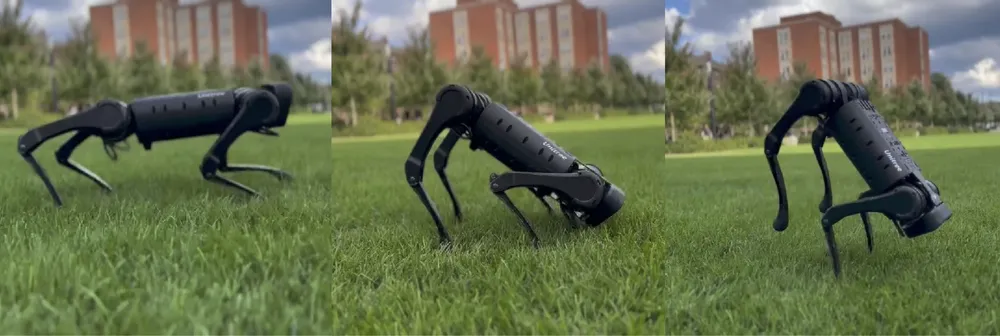
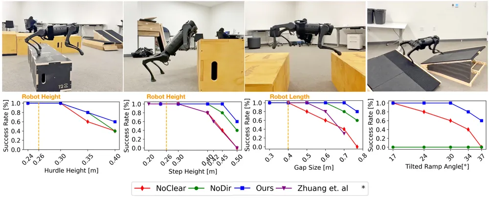
방법. 학습은 두 단계다. 1단계는 시뮬레이션에서만 알 수 있는 특권 정보를 받는 교사 정책을 PPO로 학습한다. 교사는 로봇 둘레의 지형 높이 표본(scandots), 질량·마찰 같은 환경 값, 지형에 미리 놓은 웨이포인트가 주는 진행 방향을 본다. 보상의 중심은 "다음 웨이포인트 쪽 속도 성분을 명령 속도까지 준다"는 내적 항 하나이고, 가장자리 5 cm 안에 디딘 발에 벌점을 더한다. 물구나무에만 몸통 방향 항이 하나 더 붙는다. 지형은 기울어진 경사로, 허들, 간격, 높은 계단의 넷을 난이도 순으로 깔고, 절반 넘게 가면 올리고 기대 거리의 절반도 못 가면 내리는 커리큘럼을 쓴다. 2단계는 교사의 행동을 깊이 영상 학생에게 DAgger로 증류한다. 학생은 scandots 대신 58 × 87 깊이 영상을 합성곱 망과 GRU(gated recurrent unit)로 읽고, 웨이포인트 방향도 스스로 예측한다. 예측 방향이 정답에서 0.6 rad 안이면 예측을, 아니면 정답을 보여 주는 혼합(MTS, mixture of teacher and student)으로 초기 증류가 무너지지 않게 한다. 실물에서는 Jetson NX가 깊이 인코더를 10 Hz, 정책을 50 Hz로 돌리고 깊이 지연을 0.08 s로 고정한다. 배포 정책은 RTX 3090 한 장에서 20시간 안에 학습된다.
결과. 시뮬레이션은 지형마다 난이도 순으로 이은 코스에 로봇 256대를 두고 30 s 동안 잰 값이다. MXD는 도달한 웨이포인트 수를 0–1로 정규화한 평균, MEV는 스텝당 가장자리에 디딘 발 수의 평균이다. 실물은 설정마다 5회다.
| 조건·지표 | 이 논문 | 비교 대상 |
|---|---|---|
| 오르는 높이(로봇 키 대비, 표 1) | 2배(0.5 m 상자) | Robot Parkour Learning(A1) 1.6배, ANYmal Parkour 2배, Rudin 2022(ANYmal C) 1.1배 |
| 건너는 간격(몸길이 대비, 표 1) | 2배(0.8 m) | Robot Parkour Learning 1.5배, ANYmal Parkour 1.5배, Rudin 2022 0.75배 |
| 시뮬 도달 MXD(네 지형 전체, 표 2 Total 행) | 0.98 ± 0.09 | NoInner(몸체 좌표 속도 추종) 0.75, NoClear(가장자리 벌점 없음) 0.99, Noisy(잡음 지도) 0.82 |
| 시뮬 가장자리 위반 MEV | 0.03 ± 0.18 | NoInner 0.04, NoClear 0.08, Noisy 0.20 |
| 방향 증류 MXD(네 지형 평균) | MTS 0.92 ± 0.19 | Oracle(정답 방향) 0.94, Both(늘 예측) 0.12, Mask(방향 가림) 0.05 |
| 실물 계단 0.50 m | 3/5 | NoClear 0/5, NoDir 2/5, Zhuang 외 0 |
| 실물 간격(가장 넓은 점, 약 0.77 m) | 4/5 | NoClear 0/5, NoDir 3/5, Zhuang 외 0.7 m에서 0.3 |
| 실물 기울어진 경사로 37° | 3/5 | NoClear 0/5, NoDir 0/5 |
| 학습 비용 | RTX 3090 한 장, 20시간 미만 | 값 없음 |
실물 행의 수치는 그림 7에서 읽은 값이다(Controller F.6.2).
travplan에 주는 의미. travplan은 TravMap을 공통 표현으로 쓰는 외수용 격자 갈래라서, 깊이 영상을 관절로 바로 잇는 구조는 들어올 자리가 없고 바퀴 로봇에 점프와 물구나무도 쓸 데가 없다.
가져올 것은 카메라 직결 구조가 아니라 특권 교사에서 온보드 학생으로 가는 증류 절차와 가장자리 벌점이다.
증류 절차는 GT TravMap을 보는 Planner D를 L1 belief를 보는 학생으로 옮기는 TP-0055에 맞고, 가장자리 벌점은 TravMap의 STEP 채널과 스워브 바퀴 접지점 넷에서 읽는 MPPI CostTerm으로 옮길 수 있다.
벌점을 뺀 NoClear는 시뮬 도달이 같았는데 실물의 가장 넓은 간격에서 4/5가 0/5로 떨어졌다. 성공률만으로는 보이지 않는 위험이라, 벤치마크에 MEV 같은 지표를 더할 근거다.
깊이 지연을 줄이지 않고 0.08 s로 고정한 선택은 plant 지연을 MPPI rollout에 넣은 TP-0150과 같은 방향이다. 코드는 CC BY-NC 4.0이라 구조와 숫자만 들인다. 항목별 대응은 Controller F.6.2 끝의 목록에 있다.
수치는 arXiv v1(2023-09-25)에서 읽었다. ICRA 출판본과는 대조하지 못했다. 보상 항의 코드 가중치, 망 구조와 파라미터 수, 도메인 무작위화 값, 코드가 논문과 다른 점, 저장소의 버그는 Controller F.6.2의 두 토글에 있으므로 여기서 되풀이하지 않는다.
풀려는 문제. 파쿠르는 한 번의 실수가 곧 실패다. 넓은 간격을 넘으려면 가장자리에 닿기 전에 운동량을 미리 만들어야 하고, 넘어진 뒤에 고칠 기회가 없다. 고전적 방법은 장애물의 위치·크기·종류를 미리 재고 최적화로 매 순간의 동작을 정했다. 그래서 미리 잰 실험실 코스에서만 됐다. 값싼 로봇에서는 어려움이 하나 더 있다. 구동기가 부정확하고 깊이 카메라는 주파수가 낮고 떨리며 결함이 많다. 잡음 섞인 인식으로 지도를 만들면 그 오차가 계획을 망친다. 개념상의 어려움도 둘이다. 로봇이 장애물에 맞춰 진행 방향을 스스로 정해야 한다. 사람이 방향을 주면 긴 점프에서 몇 도의 오차로도 실패한다. 그리고 높이뛰기와 물구나무처럼 성격이 다른 기술을 신경망 하나에 담아야 한다.
① 1단계, scandots 교사. 교사는 고유수용, scandots, 목표 방향, 걷기 플래그, 명령 속도를 받는다. 목표 방향은 다음 웨이포인트 $\mathbf p$와 로봇 위치 $\mathbf x$로 정한다. 속도 추종을 그 방향과의 내적으로 바꾼 것이 핵심이다. $\mathbf v$는 세계 좌표의 수평 속도, $v_{\text{cmd}}$는 명령 속도다.
$$ r_{\text{tracking}} = \min\big(\langle \mathbf v, \hat{\mathbf d}_w \rangle,\ v_{\text{cmd}}\big), \qquad \hat{\mathbf d}_w = \frac{\mathbf p - \mathbf x}{\lVert \mathbf p - \mathbf x \rVert} $$
Agarwal 2022는 몸체 좌표에서 속도를 추종했다. 그러면 로봇이 장애물을 넘지 않고 돌아가는 꼼수를 배운다. 세계 좌표의 내적은 그 꼼수를 막는다. 이 항만으로도 여러 동작이 나왔지만, 어려운 장애물에서는 에너지를 아끼려 가장자리 가까이 디뎠고 실물에서 위험했다. 그래서 땅에 닿은 발이 가장자리 5 cm 안에 있으면 벌점을 준다. 물구나무는 몸통 앞쪽 단위 벡터가 아래를 향하게 하는 내적 항을 더하고, 학습 때 켜고 끔을 무작위로 뽑아 실물에서 리모컨으로 켠다. 나머지 정규화 항은 같은 연구실의 Legs as Manipulator(ICRA 2023)에서 가져왔다. 질량·마찰·모터 세기 같은 환경 값은 ROA(regularized online adaptation)로 다룬다. 특권 값의 잠재와 고유수용 이력의 잠재를 서로 당겨, G.3 RMA의 두 단계를 한 단계로 합친 방법이다.
② 지형과 커리큘럼. 기울어진 경사로, 허들, 간격, 높은 계단의 네 지형을 난이도 순으로 깐다. 로봇은 쉬운 단계에서 시작한다. 지형 길이의 절반 넘게 가면 올라가고, 기대 거리 $v_{\text{cmd}} T$의 절반도 못 가면 내려간다($T$는 에피소드 길이). G.4 Learning to Walk in Minutes의 게임식 규칙과 같다.
③ 2단계, 이중 증류. 교사가 쓰던 정보 둘이 실물에는 없다. scandots 대신 앞쪽 깊이 영상만 있고, 방향을 알려 줄 웨이포인트도 없다. 그래서 scandots 입력을 깊이 영상을 읽는 합성곱 망과 GRU로 바꾸고, 교사 행동을 정답으로 DAgger 학습한다. 환경은 학생이 낸 행동으로 진행하고, actor는 1단계 것을 복사해 시작한다. 방향 예측 부분은 사전 학습이 없어 처음에는 엉뚱한 방향을 낸다. 그 값을 그대로 관측에 넣으면 상태 분포가 무너지고 교사 라벨도 틀어진다. 그래서 교사와 학생의 방향을 섞는다.
… 이 토글의 나머지 블록 6개(문단·식·그림)는 대시보드 리서치 탭의 "자세히: Extreme Parkour의 방법과 수식" 토글에 있다.
이어진 연구. G.15 Humanoid Parkour Learning(Zhuang·Yao·Zhao, CoRL 2024, Planner B.16.6)은 scandots 교사와 깊이 학생 증류, 10 Hz 깊이 인코더와 50 Hz 정책의 짜임을 Unitree H1로 옮기고, 계단의 발 디딤에는 G.10 DTC식 로그 보상을 더했다. PHP(Perceptive Humanoid Parkour, RSS 2026, 모방 I.12)는 모션 매칭으로 이은 기술별 교사들을 깊이 학생 하나로 증류해 같은 길을 더 갔다. 공개 코드는 Isaac Gym 전용이라 커뮤니티가 Isaac Lab과 Go2로 옮겼고(Isaaclab_Parkour, Controller F.6.2), 프로젝트 페이지는 2026년부터 그 재현 정책을 MuJoCo WASM으로 브라우저에서 돌린다. 동시 연구 Robot Parkour Learning(Planner B.12.2)과의 차이는 특권 정보의 종류(scandots 대 장애물 추상)와 방향 예측이다. 표 1의 상대 성능 비교는 위 결과 표에 옮겼다.
ANYmal Parkour — 점군을 3D로 복원하는 인식 모듈, 기술과 국소 목표를 고르는 내비게이션 정책, 기술별 보행 정책의 3단 계층을 모두 시뮬레이션에서 학습해, 실물 ANYmal D가 점프·오르기·웅크리기가 섞인 코스를 최고 2 m/s로 지나게 했다.(arXiv:2306.14874, 원제 "ANYmal Parkour: Learning Agile Navigation for Quadrupedal Robots", Hoeller·Rudin·Sako·Hutter, ETH Zürich RSL(Hoeller와 Rudin은 NVIDIA 겸직), Science Robotics 9(88) 2024; 프로젝트 페이지) Hoeller와 Rudin이 공동 1저자다. 신경망 8개를 시뮬레이션에서만 학습해 실물에 올렸고, 사전 지도와 오프라인 계산과 전문가 시연이 모두 없다. 상위 정책이 실제 하위 기술 정책을 굴리며 학습하므로, 상위가 하위의 한계를 알고 상자가 너무 높으면 돌아가는 길을 고른다. 공개 코드는 확인하지 못했다.
왜 마일스톤인가. 앞에는 같은 연구실의 두 갈래가 있었다. G.5 Miki 2022는 높이 지도를 얼마나 믿을지 belief encoder가 정하는 걷기 정책이었고, Rudin 2022(IROS, 참고문헌 D)는 "정해진 시간 안에 이 위치에 가라"는 위치 기반 명령으로 정책 하나가 점프와 오르기까지 배웠다. Hoeller 2022의 신경 장면 표현(Planner B.16.1)은 가려진 점군에서 지형을 3D로 복원했다. 이 논문은 셋을 한 파이프라인으로 묶었다. 이 논문이 더한 것은 셋이다. 하위 기술을 고정한 채 실제 정책을 굴리며 상위 정책을 RL로 학습해 상위가 하위의 능력을 아는 계층, 기술 선택(범주형)과 국소 목표(가우시안)를 한 actor에서 내는 PPO의 혼합 출력, 그리고 오버행과 가려진 윗면까지 기억으로 채우는 다해상도 3D 복원이다. 논문이 처음이라 주장하는 것은 이 셋이 아니라, 사전 계획과 지도 없이 하는 사족 로봇의 민첩 내비게이션 시스템이다. 표 1의 비교에서 G.8 Extreme Parkour가 상대로 삼은 것도 이 논문이고, G.10 DTC는 같은 Rudin 2022의 시간 기반 보상에서 갈라져 나왔다.
초록 번역. (arXiv v1, 2023-06-26) 네발 로봇으로 민첩한 내비게이션을 하는 것은 매우 동적인 동작, 로봇의 여러 부위로 하는 접촉, 인식 센서의 제한된 시야 때문에 어려운 과제다. 이 논문에서 우리는 그런 로봇을 학습시켜 파쿠르 도전을 연상시키는 시나리오를 정복하는, 전부 학습으로 된 접근을 제안한다. 이 방법은 걷기, 점프, 오르기, 웅크리기처럼 여러 종류의 장애물에 맞는 고급 보행 기술을 학습한 뒤, 상위 정책으로 지형 전체에 걸쳐 그 기술을 고르고 제어한다. 계층 구성 덕분에 내비게이션 정책은 각 기술의 능력을 알고, 눈앞의 시나리오에 따라 행동을 맞춘다. 또한 인식 모듈이 심하게 가려지고 잡음 섞인 센서 데이터에서 장애물을 복원하도록 학습되어 파이프라인에 장면 이해를 준다. 이전 시도와 비교해 우리 방법은 전문가 시연, 오프라인 계산, 환경에 대한 사전 지식, 접촉의 명시적 고려 없이 어려운 시나리오의 경로를 계획할 수 있다. 이 모듈들은 시뮬레이션 데이터로만 학습되지만, 실물 실험은 하드웨어로의 성공적인 이전을 보여 주며, 거기서 로봇은 연속된 어려운 장애물을 최고 초속 2미터로 지나며 내비게이션한다. 보충 영상은 프로젝트 웹사이트 https://sites.google.com/leggedrobotics.com/agile-navigation에 있다.
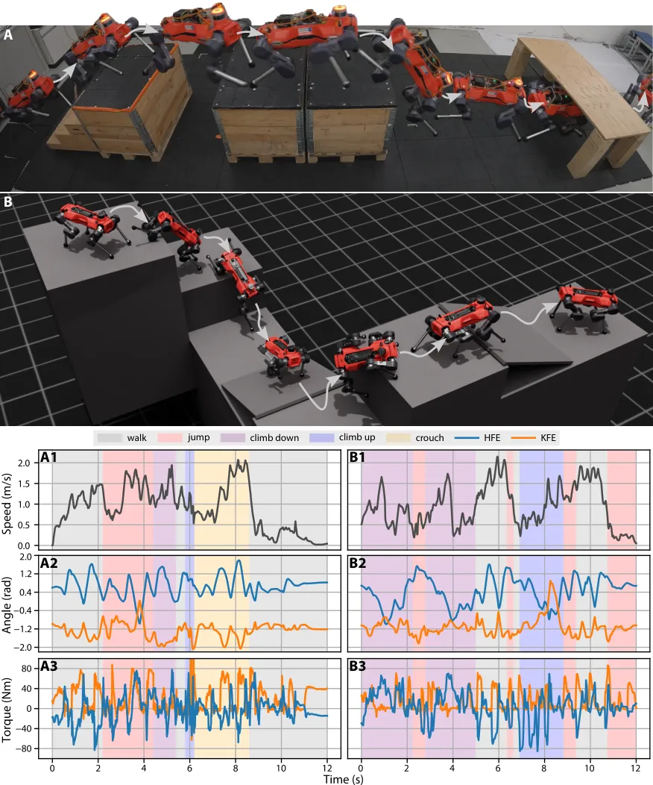
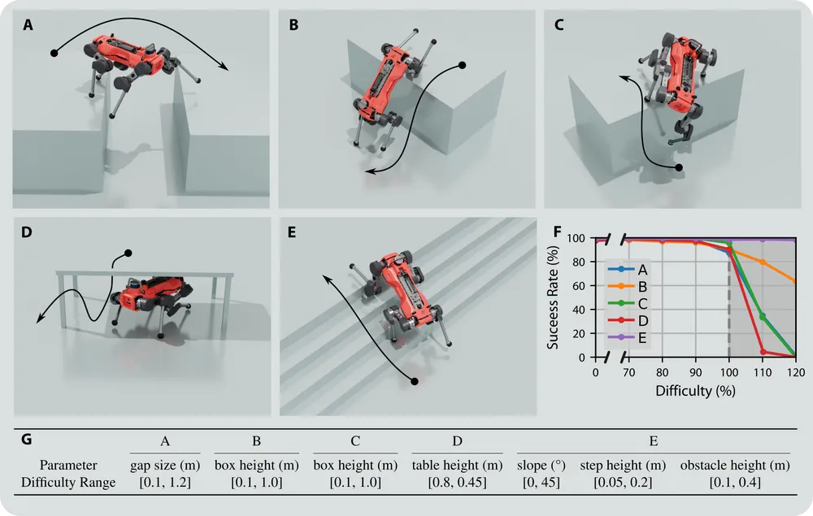
방법. 인식 모듈은 깊이 카메라 6대와 LiDAR의 점군을 voxel 격자로 바꿔 인코더–디코더로 점유 확률과 무게중심을 복원한다. 저해상도 망(voxel 12.5 cm, 4 m)은 이전 출력을 현재 좌표로 옮겨 입력에 잇는 자기회귀 되먹임으로 지금 안 보이는 탁자 윗면을 기억하고, 고해상도 망(6.25 cm, 2 m)이 가까운 곳을 다듬는다. 학습은 시뮬레이션 궤적 2,000개 × 100스텝의 참값 점유로 하고(원문은 사람 라벨이 없다는 뜻에서 unsupervised라 적는다), 점 흔들기·덩어리 추가·영역 지우기·위치 흔들기로 증강한다. 보행 모듈은 걷기, 점프, 오르기, 내려가기, 웅크리기의 정책 다섯을 PPO로 따로 학습한다. 명령은 속도가 아니라 "주어진 시간 안에 이 위치와 방향에 도달하라"이고, 입력은 고유수용과 로봇 둘레 2 m × 1 m의 2.5D 높이 지도, 출력은 50 Hz 관절 위치 목표다. 기술마다 장애물 크기 커리큘럼을 쓰고, 앞뒤·좌우 대칭으로 전이를 네 배로 늘리는 증강과 높이 지도의 최대 7.5 cm 이동을 넣는다. 내비게이션 정책은 5 Hz로 최종 목표의 상대 위치, 남은 시간, 몸통 속도와 자세, 인식 잠재를 받아 기술 하나(범주형)와 그 기술에 줄 국소 위치·방향·시간(가우시안)을 낸다. 학습 중 하위 기술은 고정한 실제 정책을 50 Hz로 굴리고, 보상은 에피소드 마지막 스텝의 도착 여부와 거리뿐이다. 목표를 처음엔 가깝게 두고 보상이 오르면 멀리 옮기는 커리큘럼이 없으면 큰 장애물 앞에서 막힌다. 실물에서는 보행과 내비게이션이 온보드 PC의 한 노드에서 돌고, 인식 모듈은 Jetson Orin에서 비동기로 돈다.
결과. 시뮬레이션 비교는 그림 7의 세 지형에서 1,000회씩, 장애물 난이도를 기술 학습 최대치 근처로 두고 잰 성공률이다.
| 조건·지표 | 이 논문 | 비교 대상 |
|---|---|---|
| 실물 최고 속도 | 2 m/s(연속 장애물, 그림 3) | 관련 연구의 모델 기반 파쿠르(Kim 2020)는 0.1 m 장애물을 0.33 m/s로 |
| 내비게이션 대 손으로 짠 기술·목표 열(지형 A, B, C) | 98.2%, 96.3%, 97.6% | 손 궤적 95.3%, 60.9%, 75.3% |
| 출력 절제(원문 S5) | 위와 같음 | 시간 출력 없음 94.7%, 89.4%, 91.6%. 방향 없음 89.5%, 88.1%, 94.6%. 둘 다 없음 81.1%, 71.9%, 94.0% |
| 기술 성공률(그림 4F) | 학습 최대 난이도의 90%까지 모두 높음 | 100%를 넘으면 웅크리기, 점프·오르기 순으로 급락, 내려가기는 120%에서 60%대, 걷기는 유지 |
| 기술 범위(본문) | 간격 최대 1 m, 상자 최대 1 m, 통로 최소 0.4 m. 걷기는 경사 40°, 계단 0.25 m, 평지 2 m/s | 그림 4G의 학습 범위는 간격 1.2 m, 탁자 0.45 m, 경사 45°, 계단 0.2 m로 본문과 다르다 |
| 오르는 높이·건너는 간격(G.8 표 1의 환산) | 키의 2배, 몸길이의 1.5배 | Rudin 2022(ANYmal C) 1.1배, 0.75배 |
| 복원 대 elevation map 기준선(실물 점군) | 높은 상자 윗면과 탁자 밑, 자세 추정 튐을 바로잡음 | 기준선은 윗면을 비우고 탁자를 바닥과 섞음. 비교는 정성적 |
| 센서 지연(실물) | 깊이 영상을 직접 받아 25 ms | ROS 점군 메시지는 최대 250 ms |
travplan에 주는 의미. 계층 자체는 travplan의 "Planner가 궤적을 내고 Controller가 실행한다"를 기술 단위로 넓힌 꼴이고, 가져올 것은 학습 절차다.
상위 정책을 실제 하위 제어기를 굴리며 학습하면 상위가 하위의 한계를 안다. 학습 Planner D를 단순 기구학 대신 실제 Controller(mppi_plant_lag, TP-0150)로 굴려 후학습(TP-0066)하면, Controller가 못 따라가는 경로를 덜 낸다.
마지막 스텝에만 주는 "시간 안 도착" 보상은 Planner D가 우회로를 탐색하게 하는 간단한 설계다. 인식 쪽에서는 오버행과 높은 상자 윗면을 기억으로 채우는 3D 복원이 travplan의 알려진 한계(오버행 미표현, 높은 박스 윗면 저비용)를 겨눈다.
다만 학습에 GPU 메모리 약 45 GB가 들었고, travplan L1은 합성 LiDAR 하나와 2.5D 매퍼라 센서 구성이 다르다. 점프·오르기·웅크리기는 바퀴 로봇에 없고, 2 m/s 파쿠르 속도도 보도 배달로봇의 목표가 아니다.
방법의 수식과 절제는 인식 A.7.1 토글, 다른 추종 연구와의 인터페이스 비교는 Planner B.14.2에 있다.
수치는 arXiv v1(2023-06-26)에서 읽었다. Science Robotics 출판본과는 대조하지 못했다. 인식 모듈의 망 구조, 기술 정책의 위치 추종 보상, 내비게이션 정책의 혼합 분포와 보상 수식은 인식 A.7.1 토글에 있다. 여기서는 그 토글에 없는 보충 자료(S1–S7)의 내용을 적는다.
풀려는 문제. 파쿠르식 코스는 네 가지가 동시에 어렵다. 주기적 걸음새(gait)를 가정할 수 없고 무릎과 정강이로도 짚어야 한다. 충격 때문에 상태 추정이 크게 흐른다. 팔다리가 센서를 가려 시야가 좁다. 계획기가 하위 제어기의 한계를 알아야 실행 가능한 궤적을 낸다. 빠른 동작에서는 어떤 지연도 치명적이다. 기존 샘플링 계획은 몇 초가 걸리고 사전 지도가 필요했으며, 모델 기반 파쿠르는 계획을 오프라인에서 짜고 점프 전환을 손으로 넣었다.
① 기술 정책의 보상(표 S2). 핵심은 남은 시간 $t^*$가 1 s 미만일 때만 주는 위치 추종(가중 10)과 방향 추종(가중 5)이다. 그 전까지 궤적은 정책이 자유롭게 정한다. "기다리지 않기"(몸통 속도가 작으면 벌점)와 "목표 방향으로 움직이기"(속도와 목표 방향의 코사인, 가중 1)가 탐색을 밀고, 도착 뒤에는 기본 자세에서 벗어난 관절각에 벌점(가중 −0.5)을 줘 서게 한다. 무릎·정강이 충돌 −1, 헛디딤(수평 접촉력이 수직의 2배 초과) −1, 발 접촉력 700 N 초과의 제곱 벌점, 관절 속도·토크와 그 한계 초과, 몸통·발 가속도, 행동 변화율 벌점이 붙는다. 몸통 충돌이나 발 접촉력 1,500 N 초과로 끝나면 −200이다. 오르기는 몸통과 무릎 접촉 벌점을 줄여 먼저 무릎으로 오르다 발로 바꾸게 했고, 내려가기는 발 충격력 종료 조건이 없으면 위에서 뛰어내리는 동작을 배웠다.
② 내비게이션 보상(표 S3)과 관측(표 S4). 보상은 마지막 스텝의 도착 여부와 목표 거리뿐이고 가중 0.15다. 넘어짐(몸통 z축과 중력의 각)과 접촉력 초과에는 종료 벌점 −0.5가 있다.
$$ r_{\text{nav}} = \mathbb 1_{t^*_G = 0}\,\big(40\,\mathbb S_N - \lVert \mathbf r - \mathbf r^*_G \rVert\big), \qquad \mathbb S_N = \mathbb 1_{\lVert \mathbf r - \mathbf r^*_G \rVert < 0.4} $$
기술 정책은 몸통 선속도·각속도, 중력 벡터, 관절 위치·속도, 국소 목표 $(\mathbf r^*, \psi^*, t^*)$, 높이 격자 $\mathbf h$를 보고 관절 목표 $\mathbf q^*$를 낸다. 내비게이션 정책은 몸통 선속도, 중력 벡터, 전역 목표 $(\mathbf r^*_G, t^*_G)$, 인식 잠재 $\mathbf l$을 보고 기술 번호 $s$와 $(\mathbf r^*, \psi^*, t^*)$를 낸다. 각속도와 관절 상태는 보지 않는다.
③ 대칭 증강(S3). 위치 기반 명령은 출발과 목표 사이 궤적을 묶지 않아 비대칭 동작이 나온다. 오르기 정책은 앞으로만 오르고, 뒤로 마주하면 돌아선다. 그래서 전이마다 앞뒤·좌우 대칭 변환 넷으로 관측과 행동을 복제한다(Abdolhosseini 2019의 복제법). 원래 방법은 변환된 행동의 확률이 낮아 수렴이 나빴는데, 원래 행동의 확률을 대칭 변형에 그대로 주어 해결했다. 수렴한 정책은 대칭 상태에서 같은 확률로 대칭 행동을 낸다는 사실을 처음부터 넣은 셈이다.
… 이 토글의 나머지 블록 5개(문단·식·그림)는 대시보드 리서치 탭의 "자세히: ANYmal Parkour의 방법과 수식" 토글에 있다.
이어진 연구. G.10 DTC는 같은 Rudin 2022의 시간 기반 보상 위에서 상위를 학습 대신 궤적 최적화로 바꿨다. G.8 Extreme Parkour는 지도와 기술 분리를 버리고 깊이 영상 하나로 같은 상대 높이를 넘었고, 표 1에서 이 논문을 비교 대상으로 삼았다. KAIST의 Raibo 고속 내비(Kim 외, Science Robotics 2025, Planner B.16.5)는 발 디딤 Planner와 RL 추종기로 징검돌을 최고 4 m/s로 지나 속도 기록을 넘겼다. RSL의 내비게이션 갈래는 ViPlanner와 학습 forward dynamics(FDM)로 이어진다(Planner B.14.3). 휴머노이드에서는 G.15 Humanoid Parkour Learning이 기술 정책을 따로 두지 않고 정책 하나가 기술을 고르게 했다.
DTC(Deep Tracking Control) — 모델 기반 궤적 최적화(TAMOLS)가 낸 발 디딤을 시뮬레이션에서 학습한 RL 정책이 추종하는 혼합 구조로, 최적화의 정밀한 발 디딤과 학습 정책의 강건함을 정책 하나에서 함께 보였다.(arXiv:2309.15462, 원제 "DTC: Deep Tracking Control", Jenelten·He·Farshidian·Hutter, ETH Zürich RSL, Science Robotics 9(86) 2024; 실험 데이터, 학습 코드와 TAMOLS 코드는 공개되지 않았다) 다리 로봇 제어의 두 전통에 한 층씩 맡긴다. 궤적 최적화(TO, trajectory optimization)가 발을 어디에 디딜지 계산하고, 신경망 정책이 그 발 디딤(foothold)을 추종하며 관절 목표를 낸다. 최적화는 디딜 곳이 드문 간격과 징검돌에서 정확하고, 학습 정책은 미끄럽거나 무르거나 지도가 틀린 곳에서 버틴다. 실물 ANYmal은 0.6 m 간격 넷을 연달아 건넜고, 보이지 않는 함정 바닥에서는 최적화 단독 제어기가 넘어진 자리를 회복해 지났다.
왜 마일스톤인가. 앞에는 두 계보가 따로 있었다. RSL의 모델 기반 계보(Bellicoso 2018의 온라인 동작 최적화, TAMOLS 2022, Grandia 2023의 인식 NMPC)는 발 디딤이 정확했지만 모델 가정이 깨지면 손으로 짠 상태 기계에 기댔다. 학습 계보(G.1 Hwangbo 2019, G.2 Lee 2020, G.5 Miki 2022)는 강건했지만 디딜 곳이 드문 지형에서 보상이 희소해 전용 정책만 풀었다. 둘을 섞은 앞선 시도는 최적화 해를 오프라인 시연으로 모방하거나(Brakel 2022, Bogdanovic 2022) 기존 전신 제어(WBC) 둘레의 보정 토크를 배웠다(RLOC 2022). 이 논문이 더한 것은 셋이다(원문은 모델 기반과 모델 프리의 결합 자체는 새롭지 않다고 적는다). 학습 루프 안에서 최적화를 온라인으로 돌려 기준 동작으로 쓰는 것, 정책에 몸통 궤적을 숨기고 발 디딤만 보여 줘 학습 때 보지 못한 NMPC 계획기에도 재학습 없이 붙는 것, 그리고 G.4 Learning to Walk in Minutes의 학습 틀 위에서 23년치 최적화 궤적으로 정책 하나를 수렴시킨 것이다. 뒤의 G.15 Humanoid Parkour Learning은 이 논문의 로그형 발 디딤 보상을 계단에 가져갔고, RL과 MPC를 섞는 갈래(Controller F.5)와 travplan의 두 갈래 Controller 결정이 같은 질문 위에 있다.
초록 번역. (arXiv v2, 2024-01-22) 다리 보행은 현실의 어려움에 대처하기 위해 정확성과 강건성을 모두 요구하는 복잡한 제어 문제다. 다리 시스템은 전통적으로 역동역학을 곁들인 궤적 최적화로 제어되어 왔다. 이런 계층적 모델 기반 방법은 직관적인 비용 함수 조정, 정확한 계획, 일반화, 그리고 무엇보다 10년 넘는 광범위한 연구에서 얻은 통찰 덕분에 매력적이다. 그러나 모델 불일치와 가정 위반이 오동작의 흔한 원인이다. 반면 시뮬레이션 기반 강화학습(RL, reinforcement learning)은 전례 없는 강건성과 회복 기술을 가진 보행 정책을 낸다. 그러나 모든 학습 알고리즘은 간격이나 징검돌처럼 유효한 발 디딤이 드문 환경에서 생기는 희소 보상에 애를 먹는다. 이 연구에서 우리는 두 세계의 장점을 결합해 더 큰 강건성, 발 디딤 정확도, 지형 일반화를 동시에 이루는 혼합 제어 구조를 제안한다. 우리 접근은 학습 중에 모델 기반 계획기로 기준 동작을 굴린다. 심층 신경망 정책은 최적화된 발 디딤을 추종하는 것을 목표로 시뮬레이션에서 학습된다. 우리는 순수 데이터 기반 방법이 실패하기 쉬운 희소 지형에서 보행 파이프라인의 정확도를 평가한다. 또한 모델 기반 상대와 비교해 미끄럽거나 변형되는 지면에서 더 뛰어난 강건성을 보인다. 마지막으로 제안한 추종 제어기가 학습 중에 보지 못한 다른 궤적 최적화 방법에도 일반화됨을 보인다. 결론적으로 이 연구는 온라인 계획의 예측 능력과 최적성 보장을 오프라인 학습 고유의 강건성과 하나로 합친다.
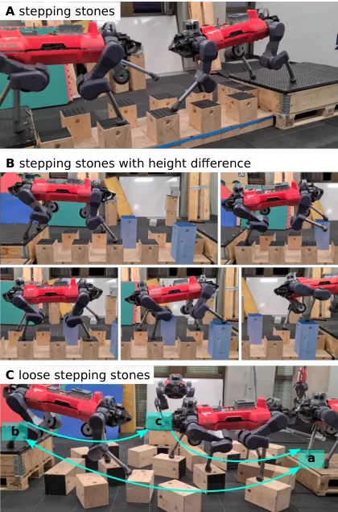
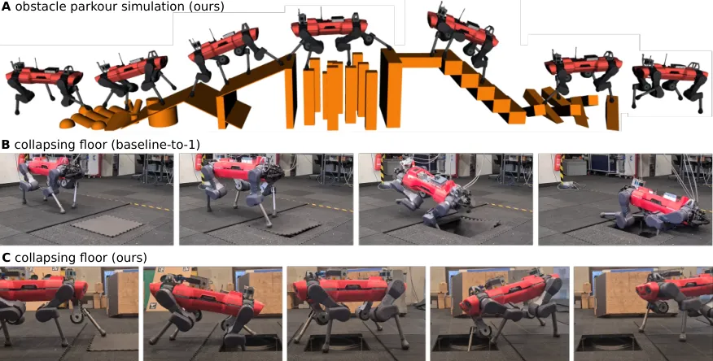
방법. 최적화기 TAMOLS는 높이 지도 위에서 발 디딤과 몸통 자세를 함께 풀고, 학습 때는 시뮬레이터의 참값 지도로 다리 착지마다(0.465 s) 새 해를 낸다. 정책이 보는 것은 그 해의 일부다. 네 발의 목표 발 디딤 xy(8), 착지 순간의 관절각(12, 해석적 역기구학으로 계산), 다리별 접촉 상태와 위상의 남은 시간(4 + 4), 최적화 전 기준 twist(3), 발에서 발 디딤까지 선 위의 높이 스캔(40)과 고유수용이다. 최적화된 몸통 궤적과 마찰·외력·지도 표류 같은 시뮬레이터 값은 critic만 본다(비대칭 actor–critic). 정책과 critic은 은닉층 512 × 3의 MLP다. 보상은 몸통 추종(지수형 여섯 항), 발 디딤 추종(로그형, 발마다 걸음 주기에 한 번만, 가중 6), 연속한 두 최적화 해가 비슷할수록 주는 일관성(가중 20), 발·관절 일률, 행동 변화율, 관절 가속도 벌점으로 이뤄진다. 최적화를 정책 주기마다 다시 풀면 정책이 대충 따라가도 최적화기가 현재 상태에서 다시 풀어 보상을 받는 게으른 추종이 나왔다. 착지마다로 묶자 그 국소 최적이 사라지고 계산도 23분의 1이 됐다. 높이 스캔에는 근사 Laplace 잡음과 발마다 다른 표류를 넣고, 정책이 착지 관절각으로 표류를 되돌리지 못하게 관절각에도 표류에 비례한 잡음을 넣는다. 로봇 4,096대를 지형 12종 × 10레벨(8 × 8 m² 조각 1,200개, 76,800 m²)에서 9만 epoch 학습했다. 하루면 배포할 만했고 2주에 수렴했다. 배포 때 정책은 50 Hz로 돌고, 최적화기는 별도 스레드에서 TAMOLS가 약 400 Hz, NMPC 계획기(baseline-to-2)가 약 100 Hz로 다시 푼다. 정책은 매 스텝 최신 해의 0.02 s 앞 값을 읽는다.
결과. 실물은 ANYmal C 두 대와 D 한 대이고, 반복 횟수는 원문 그대로다. 시뮬레이션 성공률은 Planner B.14.2가 그림 7의 SVG 좌표에서 읽은 값이다.
| 조건·지표 | 이 논문 | 비교 대상 |
|---|---|---|
| 평지 발 디딤 추종 오차(8가지 속도, 각 20 s) | 평균 2.3 cm, 표준편차 0.48 cm | NMPC 계획기로 바꾸면 평균 0.03 m |
| 0.1 m 간격(0.2 m/s) | 10/10 | baseline-rl-1(Miki 2022) 뒷다리가 빠져 멈춤 |
| 0.6 m 간격 넷 연속, 1.8 m 빔 | 각 4/4 | baseline-rl-1은 1.0 m 빔도 쓰지 못함 |
| 상자 오르기 | TAMOLS와 약 0.40 m, NMPC 계획기와 0.48 m(5/5, 재학습 없음) | baseline-rl-1보다 50%, baseline-rl-2(Rudin 2021) 보고치보다 380% 높음 |
| 보이지 않는 함정 바닥 | 5/5 통과 | baseline-to-1(TAMOLS 단독)은 넘어짐(5회 일관). baseline-to-2(NMPC)는 5회 돌려 결과가 일관됐다고만 적는다 |
| 기울어지는 덮개판(지도 오차 최대 0.4 m), 미끄럽고 무른 물체 | 3/3, 5/5 | 값 없음 |
| 인식 없이 계단 0.18 m 두 단(±0.5, 0.75, 1.0 m/s) | 오르내림 3회씩(속도 0.5·0.75·1.0 m/s 하나씩) 모두 성공(스윙 반사) | 눈을 가린 baseline-rl-1도 통과 |
| 시뮬 코스 1 m/s 왕복 | 성공 | baseline-to-1보다 20% 빠름 |
| 조건·지표 | 이 논문 | 비교 대상 |
|---|---|---|
| 시뮬 120 지형 성공률 | 69.9% | baseline-rl-3(같은 환경에서 재학습) 56.8%, baseline-rl-2 13.2% |
| 희소 지형(징검돌·빔·간격·팔레트) | 66.5–93.1% | baseline-rl-3 1.9–25.1%. 촘촘한 지형에서는 둘 다 약 81–98% |
| 최적화 갱신률 1 Hz에서 50 Hz로 | 실패율 상대 −7.11%, 성공률 상대 +4.25% | 값 없음 |
| 학습 | 로봇 4,096대, 2주, 최적화 궤적 23년치 | baseline-rl-1은 로봇 1,000대 5일, 처리량은 DTC가 1.7배 낮음 |
travplan에 주는 의미. 이 논문은 travplan의 Controller 결정과 가장 가까운 논문이다. travplan은 Planner(학습 Planner D, 비학습 Guidance 폴백)와 Controller(MPPI와 NMPC 두 갈래)를 나눴고, 두 갈래를 함께 개발해 같은 벤치마크에서 비교한다.
DTC가 내세운 근거는 두 갈래 결정의 근거와 같다. 유효한 해가 드문 곳은 최적화가 더 잘 찾고, 모델이 틀리는 곳은 학습이 더 잘 버틴다. 다만 DTC는 최적화를 위에 두고 학습을 아래에 두었고, travplan은 학습을 위(Planner D)와 모델 안(GP 잔차 TP-0068, 모델 계층 TP-0124)에 두고 아래에는 MPPI와 NMPC를 남겼다.
경계를 넘기는 것은 궤적 전체가 아니라 발 디딤뿐이었고, 그래서 정책이 계획기에 독립했다. travplan은 같은 경계에서 PlanResult.path와 times를 넘기는데, Guidance 폴백은 시간 인덱스 궤적으로 넘길 때 경사로 아래에서 시간 초과됐고 경로만 넘기자 지났다(Planner B.15.2).
학습 Controller(Playground TinyPolicy TP-0128, Planner D RL 후학습 TP-0066)를 계획기와 함께 학습할 때는 DTC가 피한 함정 둘을 피한다. 매 스텝 재계획(replan_every = 1)하면 게으른 추종이 나오고, 지도에만 잡음을 넣고 경로는 참값에서 구하면 정책이 경로로 지도 오차를 되돌리는 법을 배워 배포에서 깨진다.
정책은 belief를 보고 보상은 GT로 주는 비대칭(TP-0066)도 DTC의 비대칭 actor–critic과 같은 꼴이다. 바퀴 로봇에는 발 디딤이 없으므로 발 디딤 추종 자체와 TAMOLS, 4,096대 2주 학습은 가져오지 않는다. 스워브에서 드문 유효 해에 해당하는 것은 좁은 통로(plant 레벨 3 경사로의 중심 통로 0.2 m, TP-0151)다.
수치는 arXiv v2(2024-01-22)에서 읽었다. v2는 Science Robotics 채택본이라고 적혀 있고, 출판본 지면과는 대조하지 못했다. 관측 표, 몸통·발 디딤·일관성 보상의 수식, 잡음과 표류의 분포, 실물 결과 목록과 한계는 Planner B.14.2 토글에 있으므로 여기서는 요약하고, 그 토글에 없는 학습 루프의 자료 흐름, PPO 설정, 절제 실험의 조건을 적는다.
풀려는 문제. TO는 사실상 열린 루프라 확률적 요소, 모델 오차, 짧은 예측 구간에서 차선의 해를 내고, 발을 미리 정한 접촉점으로 두고 접촉 일정을 고정하는 가정을 많이 둔다. 실시간 계획기도 5–100 Hz로 갱신하고 400–1,000 Hz로 실현하므로 자기가 내는 오차를 따라잡지 못한다. 대신 지형 기하에는 잘 일반화하고 지도 해상도를 아주 작게 잡아 발 디딤을 정밀하게 고른다. RL은 전역 폐루프 정책을 내고, 방문한 상태 사이는 잘 보간하지만 보지 못한 환경으로는 외삽하지 못한다. 학습 때 지도는 메모리 때문에 보통 성기게 줄인다. 그래서 일반화와 정확도가 필요하면 TO가, 강건성이나 온보드 계산이 걱정이면 RL이 맞다. 보행은 둘을 다 요구하므로, RL로 역동역학보다 훨씬 강건한 하위 추종기를 학습하고 TO의 계획 능력을 그 아래에서 쓴다.
① 학습 루프(그림 8B). 상태 $\mathbf s$에서 최적화기가 다음 스텝의 해 $\mathbf x'(\mathbf s)$를 낸다. 발 디딤 넷, 착지 관절각, 한 스텝 앞의 몸통 자세·twist·가속도다. 정책이 행동을 뽑아 시뮬레이션을 진행하면 새 상태 $\mathbf s'$가 나온다. 보상은 최적화 해와 실제 상태의 차이에 대해 단조 감소하는 함수다. 원문은 이 정책을 최적화기를 기준 모델로 둔 학습형 모델 기준 적응 제어기로 볼 수 있다고 적는다.
$$ r(\mathbf s, \mathbf s', \mathbf x', \mathbf a) \propto \mathbf x'(\mathbf s) \ominus \mathbf x(\mathbf s') $$
$\ominus$는 자세에서는 쿼터니언 차, 나머지는 벡터 차다. 몸통 항은 지수형이라 처음에는 궤적 앞부분을, 나중에는 끝부분을 맞추는 단계적 추종이 된다. 발 디딤 항은 로그형이라 밀리미터까지 계속 당긴다(수식은 Planner B.14.2). TAMOLS에는 셋을 더했다. CPU 병렬화, pybind11 파이썬 인터페이스, 측정 접촉 상태가 늘 계획 접촉 상태와 같다는 가정이다. 마지막 가정으로 최적화기가 접촉 추정에서 독립한다. 걸음새는 학습과 배포 모두 고정 trot(주기 0.93 s, 스윙 0.465 s)이고 지도는 0.04 m 격자다. 시뮬레이션 간격은 5 ms, 정책 간격은 20 ms다. 넘어짐(평균 18 s마다), 밀기(10 s 뒤), 명령 변경(에피소드당 세 번) 뒤에는 해가 무효이므로 바로 다시 푼다. 그래서 정책은 여러 갱신 간격을 겪고 배포의 400 Hz에도 일반화한다.
② PPO 설정(표 1). 배치 45 × 4,096 = 184,320, 미니배치 4 × 4,096 = 16,384, epoch 5, clip 0.2, 엔트로피 계수 0.0035, 할인율 0.99, GAE 0.95, 목표 KL 0.01에 적응 학습률이다. 모든 정책을 seed 1로 학습했다. 정책은 평균을 MLP가 내고 표준편차는 관측과 무관한 층으로 둔 가우시안이다. 관측은 이동 평균과 표준편차로 정규화한다. 정책 관측은 116차원, critic 전용은 46차원이다. epoch 하나는 반복 45회 × 0.02 s다. 9만 epoch에 2주가 걸렸고, 6,000 epoch(하루)면 배포할 만했으며 2만 epoch(사흘)에 최고 성능의 90%에 닿았다. 처리량은 초당 시뮬레이션 27초다.
… 이 토글의 나머지 블록 4개(문단·식·그림)는 대시보드 리서치 탭의 "자세히: DTC의 방법과 수식" 토글에 있다.
이어진 연구. G.15 Humanoid Parkour Learning(CoRL 2024, Planner B.16.6)은 계단에서 명시적 발 디딤 안내 없이는 RL 행동이 충분히 정확하지 않다며 이 논문을 인용하고 로그형 발 디딤 보상을 더했다. Watch Your Step(2026, Planner B.16.3)은 같은 발 디딤을 넘기되 밟을 목표가 아니라 정책이 지도를 읽을 위치로 쓴다. KAIST의 Raibo 고속 내비(Science Robotics 2025, Planner B.16.5)는 샘플링 발 디딤 Planner와 RL 추종기로 징검돌을 4 m/s로 지났다. RL이 제약을 지키는 MPC를 보정하거나 확률 제약 MPC가 불확실성만큼 제약을 조이는 갈래(Controller F.5)는 같은 질문의 다른 답이고, travplan의 TP-0069·TP-0076이 그 자리에 있다. 저자들이 남긴 다음 과제는 정책이 접촉 일정이나 계획기 비용을 제안하는 더 깊은 혼합과, 오프라인 버퍼로 학습 시간을 줄여 TAMOLS를 더 정확한 TO나 동물 데이터로 바꾸는 것이다.
G.11–G.16 휴머노이드: 주기 보상에서 transformer, world model, 실물 기록으로 맞춘 시뮬레이터까지
한 줄로. 휴머노이드 보행 학습은 사족의 "시뮬레이션에서만 배워 실물로"(G.1)를 이족에 옮기는 데서 시작했고(G.11), 이력을 보는 transformer 정책(G.12)과 행동 없는 기록까지 쓰는 생성 학습(G.13), 잡음 관측에서 특권 상태를 복원하는 world model(G.14), 깊이 영상 파쿠르(G.15), 실물 기록으로 시뮬레이터를 맞추는 잔차 행동 모델(G.16)을 더했다.
흐름. 2020–2021년의 Cassie(G.11)는 걸음새를 보상의 위상 매개변수로 다뤘고, 교사–학생(G.2)과 GPU 병렬(G.4)은 뒤의 G.12와 G.14·G.15가 가져왔다. 2023–2024년의 Digit(G.12, G.13)은 같은 transformer 구조에 문맥 적응(G.12)과 생성 학습(G.13)을 각각 담았다. 2024년에는 XBot의 험지 보행(G.14)과 그 저자들의 공개 틀 Humanoid-Gym이 나왔고, Unitree H1·G1 위의 파쿠르(G.15)와 sim-to-real 보정(G.16)이 뒤따랐다. 사람 동작을 따라 하는 동작 추종(H2O, ExBody, BeyondMimic, SONIC)은 보행과 다른 줄기라 모방 문서 §I에 있다.
Sim-to-Real Learning of All Common Bipedal Gaits — 발 힘과 발 속도에 거는 확률적 주기 비용을 합성한 보상 하나로, 기준 궤적 없이 Cassie의 서기·걷기·호핑·달리기·스킵을 시뮬레이션에서 배워 실물에 올렸다.(arXiv:2011.01387, 원제 "Sim-to-Real Learning of All Common Bipedal Gaits via Periodic Reward Composition", Siekmann·Godse·Fern·Hurst(앞 둘은 공동 1저자), Oregon State University Collaborative Robotics and Intelligent Systems Institute(Dynamic Robotics Lab), ICRA 2021; 영상, 시뮬레이터 osudrl/cassie-mujoco-sim. 학습 코드 공개는 확인하지 못했다) Cassie를 만든 Agility Robotics는 이 연구실에서 나왔고, 공저자 Hurst는 그 공동 창업자다(참고문헌 D.13.4). 핵심은 걸음새를 "한 주기 안에서 언제 발 힘을 벌하고 언제 발 속도를 벌하나"로 적는 보상 틀이다. 왼발과 오른발의 위상 오프셋 둘과 swing 비율 하나만 바꾸면 같은 식이 서기부터 스킵까지 된다. 그 파라미터를 정책 입력으로도 주면 정책 하나가 걸음새 사이를 옮겨 다닌다.
왜 마일스톤인가. 이 논문 전의 Cassie 강화학습(RL, reinforcement learning)은 기준 궤적을 따라 배웠다. Xie 외(2018·2020)와 Siekmann 외(2020)는 모델 기반 제어기나 걸음 라이브러리가 준 관절 궤적을 보상에 넣었다. 사족의 G.1(Hwangbo 2019)은 기준 궤적 없이 배웠지만 보상이 특정 행동 하나에 맞춰져 다른 행동으로 넓히기 어렵다고 저자들이 지적한다. 이 논문은 시뮬레이션에서만 배워 실물로 올리는 절차와 동역학 무작위화(Peng 2018, Tan 2018)를 이족에 쓰되, 보상을 걸음새별 손 조정이 아니라 위상 구간의 합성으로 적어 모든 흔한 이족 걸음새를 한 틀로 냈다. G.2(Lee 2020)의 교사–학생은 쓰지 않고, LSTM(long short-term memory)의 기억만으로 이력을 다룬다. 이어서 같은 보상에 계단 모양 지형 무작위화만 더한 고유수용 계단 보행(RSS 2021, Planner B.16.6)이 나왔다. 사족의 G.7 Walk These Ways는 이 von Mises 위상 지시 함수를 정규분포 누적함수로 근사한 같은 꼴의 보상(그 논문의 부록)으로 걸음새 파라미터를 명령처럼 받는 정책을 만들었고, travplan은 그 Go2 이식본의 코드를 읽었다(Controller F.6.1). G.12(HT)는 이 계열의 LSTM 정책을 이족 최고 수준 기준선으로 놓고 transformer와 비교했다.
초록 번역. (arXiv v2, 2021-03-11) 우리는 sim-to-real 강화학습(RL)으로 실물 로봇에서 이족 보행의 전 범위를 실현하는 문제를 연구한다. 다리 보행 학습의 핵심 난제는 서로 다른 걸음새를 보상 함수로 기술하되, 설계자에게 직관적이면서도 서로 다른 초기 무작위 seed나 하이퍼파라미터에 걸쳐 그 걸음새를 안정되게 배울 만큼 구체적으로 기술하는 일이다. 흔한 접근은 기준 동작(예: 관절 위치 궤적)으로 학습을 이끄는 것이다. 그러나 질 좋은 기준 동작을 찾기는 어려울 수 있고, 그 궤적 자체가 학습되는 동작의 공간을 좁게 제약한다. 반대쪽 극단에서, 기준 없는 보상 함수는 흔히 과소 지정되어(예: 앞으로 가라) 정책 행동의 분산이 매우 커지거나, 시행착오를 거친 상당한 보상 조형의 산물이어서 특정 걸음새에만 쓰인다. 이 연구에서 우리는 기본적인 힘과 속도에 거는 단순한 확률적 주기 비용을 합성하는 보상 지정 틀을 제안한다. 이 틀을 구체화해, 모든 흔한 이족 걸음새(서기, 걷기, 호핑, 달리기, 스킵)에 대해 직관적인 설정을 갖는 파라미터화된 보상 함수를 정의한다. 이 함수를 써서 학습한 걸음새들을 이족 로봇 Cassie로 sim-to-real 이식하는 데 성공했고, 모든 2박자(two-beat) 걸음새 사이를 전환할 수 있는 범용 정책도 보인다.
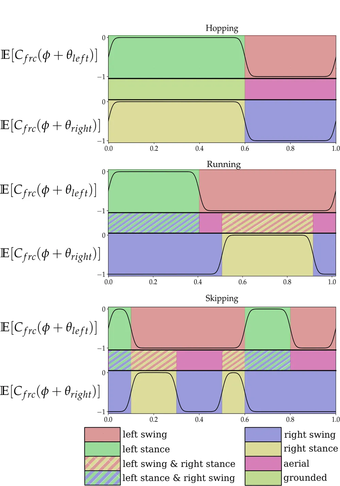
방법. 보상은 "위상 계수 × 위상 지시 함수 × 측정값"인 항들의 합이다. 측정값은 발 힘의 노름과 발 속도의 노름이고, swing 구간에서는 힘을, stance 구간에서는 속도를 벌한다. 구간의 시작과 끝은 von Mises 분포를 따르는 확률 변수라서 경계가 부드럽고, 학습에는 보상의 기댓값을 쓴다. 왼발과 오른발에 위상 오프셋을 따로 주면 걷기·갤럽·호핑이 되고, 위상을 넷으로 늘리면 스킵이 된다. 정책은 은닉 128짜리 LSTM 2층이고, 관절 목표 위치 10개와 PD 이득 10벌을 중립값에 더하는 30차원을 낸다. 정책은 40 Hz, PD는 2 kHz다. 입력은 골반 자세·각속도·관절 위치·관절 속도의 추정값, 전진·횡 속도 명령, 위상 비율, 그리고 두 발의 위상을 사인으로 부호화한 시계 입력이다. 학습은 cassie-mujoco-sim(MuJoCo)에서 재귀형 PPO(proximal policy optimization)로 1억 5천만 샘플, 정책당 24–36시간이다. 관절 감쇠·질량, 지면 마찰·경사, 인코더 오프셋, 정책 실행 주기를 무작위화하고 mirror 손실로 좌우 대칭을 유도한다. 실물 이식은 추가 조정 없이 시뮬레이션 정책을 그대로 올리는 방식이다. 다중 걸음새 정책은 호핑 대칭 비용과 서기 비용을 더해 걸음새가 섞이는 것을 막는다.
결과. 논문에 정량 비교 표는 없다. 아래는 본문과 영상이 보인 것이다.
| 조건·지표 | 이 논문 | 비교 대상 |
|---|---|---|
| 단일 걸음새 정책(호핑·걷기·달리기·스킵) | 비율과 오프셋을 상수로 두고 각각 학습해 실물에서 시연 | 이전 Cassie RL(Xie 2018·2020, Siekmann 2020)은 걸음새마다 기준 궤적이 필요 |
| 다중 걸음새 정책 | 오프셋을 고정하고 비율을 바꿔 걷기에서 달리기로, 전환 벌점을 더해 모든 2박자 걸음새와 서기 사이를 움직이면서 전환 | 오프셋과 비율을 함께 바꾸면 비대칭 걷기 같은 섞인 행동이 나왔다 |
| 실외(눈 없는 정책) | 보도 턱을 뛰어 오르내리기, 한 발을 연석에 올린 걷기, 작은 요철 위 달리기, 볼록한 도로에서 전환, 잔디에서 작은 원 돌기, 달리기 걸음새로 계단 5단 내려오기 | 정량 비교 없음 |
| 발 힘 대응(Fig. 5) | 시뮬레이션 GRF 평균이 기대 위상 계수의 −1 구간에서 0에 가깝고 0 구간에서 커진다 | — |
| 학습 비용 | 정책당 24–36시간, 1억 5천만 샘플 | — |
travplan에 주는 의미. 보상 식 자체는 가져오지 못한다. travplan의 스워브 배달로봇은 발도 걸음새도 없고, Controller가 내는 것은 body twist다. 가져올 것은 보상을 적는 법이다. 모든 항을 $1-\exp(-k|x|)$ 꼴로 0과 1 사이에 가두고 고정 가중으로 합친 점은 G.1의 유계 커널과 같은 처방이다. TP-0066의 RL 후학습 보상에 항을 더할 때 이 꼴이 첫 선택지다. 정책 실행 주기를 무작위화한 점은 plant 지연과 같은 자리다. travplan은 MPPI(model predictive path integral) rollout에 지연을 넣어 치명 실패를 55회에서 4회로 줄였다(TP-0150). 실물에서는 제어 주기 지터도 plant에 넣는다. 행동 파라미터를 보상 조건이자 정책 입력으로 함께 주어 정책 하나에 여러 행동을 담은 설계는, Planner D에 운용 모드(속도 한계, 안전 여유)를 입력으로 주는 쪽의 선례다.
수치는 arXiv v2(2021-03-11)에서 읽었다. ICRA 출판본과는 대조하지 못했다.
풀려는 문제. 걸음새는 주기 구조가 뚜렷하지만 지형과 동역학에 따라 세부가 달라져야 한다. 보상은 그 걸음새가 나올 만큼 구체적이어야 하고, 동시에 지나치게 묶지 않아야 한다. 기준 궤적은 앞의 조건만 채우고, 실현 가능한 기준 궤적을 구하는 일 자체가 어렵다. "앞으로 가라" 같은 보상은 과소 지정이라 seed마다 다른 행동이 나온다.
① 주기 보상 틀. 시간을 절대 시각 대신 $[0,1]$을 도는 주기 변수 $\phi$로 센다. 보상은 편향 $\beta$와 항 $n$개의 합이다.
$$ R(s,\phi) = \beta + \sum_i c_i \, I_i(\phi)\, q_i(s) $$
$c_i$는 부호가 벌점인지 보상인지 정하는 위상 계수, $I_i(\phi)$는 그 위상이 켜졌는지 나타내는 이진 확률 변수, $q_i(s)$는 발 힘 노름 같은 실수 측정값이다. 구간의 시작 $A_i$와 끝 $B_i$는 평균 $a_i$·$b_i$와 공통 집중도 $\kappa$의 von Mises 분포(wrapped normal의 근사)를 따른다.
$$ P(I_i(\phi)=1) = P(A_i<\phi<B_i) = P(A_i<\phi)\,\bigl(1-P(B_i<\phi)\bigr), \qquad A_i \sim \Phi(2\pi a_i,\kappa),\ B_i \sim \Phi(2\pi b_i,\kappa) $$
$\kappa$가 구간 경계의 불확실성을 담아 보상을 경계에서 부드럽게 만들고, 저자들은 이것이 학습을 안정시켰다고 적는다. 학습에는 보상을 표본 추출하지 않고 기댓값을 쓴다.
$$ \mathbb{E}[R(s,\phi)] = \sum_i c_i\, \mathbb{E}[I_i(\phi)]\, q_i(s) + \beta $$
기댓값은 선형이라 어느 정책이든 누적 보상의 기댓값이 같다.
② 걸음새 기술. 측정값은 발 힘 노름 $q_{\text{frc}}$와 발 속도 노름 $q_{\text{spd}}$ 둘이다. swing에서는 $c_{\text{swing frc}}=-1$, $c_{\text{swing spd}}=0$이고, stance에서는 $c_{\text{stance spd}}=-1$, $c_{\text{stance frc}}=0$이다. swing이 주기의 $r$만큼, stance가 바로 이어서 $1-r$만큼 차지한다. 위상 지시 함수와 계수의 곱을 합친 기댓값을 $\mathbb{E}[C_{\text{frc}}(\phi)]$, $\mathbb{E}[C_{\text{spd}}(\phi)]$로 두면 한 발의 보상은 두 곱의 합이다. 두 발에는 위상 오프셋 $\theta_{\text{left}}$, $\theta_{\text{right}}$를 준다.
$$ \mathbb{E}[R_{\text{bipedal}}] = \sum_{k \in \{\text{left},\text{right}\}} \Bigl( \mathbb{E}[C_{\text{frc}}(\phi+\theta_k)]\, q_{k\,\text{frc}}(s) + \mathbb{E}[C_{\text{spd}}(\phi+\theta_k)]\, q_{k\,\text{spd}}(s) \Bigr) $$
원문의 식 (2)는 이 합을 네 항으로 풀어 적는다.
… 이 토글의 나머지 블록 11개(문단·식·그림)는 대시보드 리서치 탭의 "자세히: 주기 보상 합성의 방법과 수식" 토글에 있다.
이어진 연구. 같은 연구실의 고유수용 계단 보행(Siekmann 외, RSS 2021)은 이 보상을 그대로 두고 계단 모양 지형 무작위화만 더해 실제 계단을 오르내렸다(Planner B.16.6). 사족에서는 G.7 Walk These Ways가 이 위상 지시 함수를 정규분포 누적함수로 근사한 접촉 일정 보상(논문 부록)으로 걸음 주파수·위상·높이를 명령으로 받는 Go1 정책을 만들었다. travplan은 그 Go2 이식본을 코드까지 읽었다(Controller F.6.1). G.12(HT, 2024)는 이 계열의 LSTM을 이족 기준선으로 두고 Digit에서 transformer가 낫다고 보였다. UC Berkeley의 Versatile Bipedal Locomotion(Cassie, IJRR 2025)은 같은 로봇에서 입출력 이력으로 달리기와 뛰기까지 갔다(Planner B.16.6).
Real-World Humanoid Locomotion(HT) — 고유수용 관측과 행동의 이력 16쌍을 보는 causal transformer를 시뮬레이션 RL로만 학습해, 실물 크기 휴머노이드 Digit이 실외를 일주일 동안 넘어지지 않고 걸었다.(arXiv:2303.03381, 원제 "Real-World Humanoid Locomotion with Reinforcement Learning", Radosavovic·Xiao·Zhang·Darrell·Malik·Sreenath(앞 셋은 공동 1저자), UC Berkeley, Science Robotics 9(89) 2024; 프로젝트 페이지. 공개 코드는 없다(참고문헌 D.13.4)) UC Berkeley의 Malik·Darrell(시각)과 Sreenath(Hybrid Robotics)가 함께 한 Digit 논문이다. 뒤 논문 HT-2가 이 모델을 Humanoid Transformer, 줄여 HT라고 부른다. 핵심은 둘이다. 정책이 상태 추정기도 걸음 라이브러리도 없이 관측–행동 이력만 보고, 그 이력에서 지형과 교란을 스스로 알아채 가중치 갱신 없이 행동을 바꾼다(in-context 적응). 학습은 참값 상태를 보는 교사를 먼저 만들고, 학생을 RL 손실과 교사 모방으로 함께 학습하되 모방 가중을 0으로 줄여 가는 방식이다.
왜 마일스톤인가. 이 논문 전의 실물 크기 휴머노이드 학습은 모델 기반 제어기와 섞은 형태였고(Castillo 외 2021·2022, Digit), 순수 학습은 소형 휴머노이드(DeepWalk, OP3는 Planner B.16.2)에 머물렀다. 사족의 G.1·G.2는 MLP와 TCN(temporal convolutional network)으로, G.3(RMA)는 명시적 환경 추정기로, 이족의 G.11은 LSTM(long short-term memory)으로 이력을 다뤘다. 이 논문은 실물 크기 휴머노이드를 처음부터 끝까지 학습한 제어기만으로 실외에서 걷게 했고, 이력을 transformer에 넣어 추정기 없이 문맥 적응을 얻었다. 원문의 선행 연구 정리로 보면 실물 크기 휴머노이드의 순수 학습 제어기로는 처음이다. 같은 절제 안에서 transformer가 LSTM·TCN·MLP를 모두 앞섰고, 교사 모방과 RL을 합친 목적식이 어느 한쪽만 쓴 것보다 나았다. G.13(NTP)은 이 정책이 만든 궤적을 데이터로 삼아 RL을 다음 토큰 예측으로 바꿨고, HT-2(Planner B.16.6)는 같은 구조를 평지 궤적으로 사전학습한 뒤 험지 RL로 미세 조정해 산길까지 갔다.
초록 번역. (arXiv v2, 2023-12-14) 다양한 환경에서 자율로 동작할 수 있는 휴머노이드 로봇은 공장의 노동력 부족을 메우고, 가정에서 노인을 돕고, 새 행성을 개척하는 데 보탬이 될 가능성이 있다. 휴머노이드 로봇의 고전 제어기는 여러 설정에서 인상적인 결과를 보였지만, 새 환경으로 일반화하고 적응시키기는 어렵다. 여기서 우리는 실세계 휴머노이드 보행을 위한 완전 학습 기반 접근을 제시한다. 우리 제어기는 고유수용(proprioception) 관측과 행동의 이력을 입력으로 받아 다음 행동을 예측하는 causal transformer다. 우리는 관측–행동 이력에 세계에 관한 유용한 정보가 들어 있어서, 강력한 transformer 모델이 가중치를 갱신하지 않고도 문맥 안에서(in-context) 행동을 적응시키는 데 쓸 수 있다고 가정한다. 모델은 시뮬레이션의 무작위화된 환경 앙상블에서 대규모 model-free 강화학습(RL, reinforcement learning)으로 학습하고, 실세계에 zero-shot으로 배치한다. 우리 제어기는 다양한 실외 지형을 걸을 수 있고, 외부 교란에 강건하며, 문맥 안에서 적응할 수 있다.
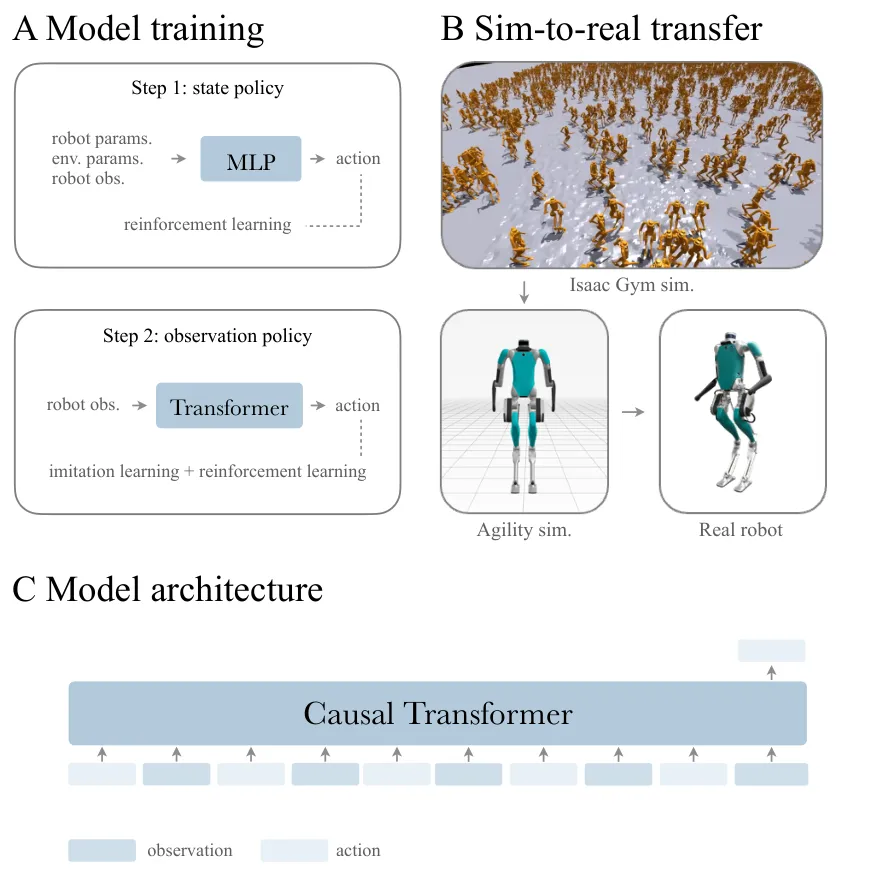
방법. 정책은 관측–행동 쌍 16개를 토큰 16개로 받아 다음 행동을 내는 causal transformer다(블록 4, 임베딩 192, 헤드 4, 파라미터 1.4M). 카메라와 지도는 없다. 행동은 구동 관절 16개의 PD 목표와 다리 관절 8개의 PD 이득이고, 발가락 모터 넷은 고정 이득으로 둔다. 정책은 50 Hz, 관절 PD는 1 kHz다. 학습은 두 단계다. 먼저 참값 상태를 보는 MLP 교사를 PPO(proximal policy optimization)로 만든다. 그다음 관측만 보는 학생을 RL 손실과 교사와의 KL 발산의 합으로 학습하고, KL 가중은 학습 중반쯤 0이 되도록 줄인다. 시뮬레이터는 Isaac Gym이다. Digit의 닫힌 사슬(정강이·발목 막대)을 Isaac Gym이 못 풀어서, 막대를 강성이 큰 가상 스프링으로 두고 교대 sub-step으로 길이를 바로잡았다. 동역학·제어 파라미터·지형(평지, 거친 면, 경사)·관측 잡음과 지연을 무작위화하고, 속도 명령은 일정 간격으로 다시 뽑는다. 학습한 정책은 Agility의 고정밀 시뮬레이터에서 걸러 낸 뒤 실물에 그대로 올린다. 이 단계는 가중치를 바꾸지 않고 위험한 정책만 거른다. 수식, v1의 관측·보상·무작위화 표, 절제의 눈으로 읽은 값은 Planner B.16.6 토글에 있다.
결과. 실물은 정성 보고이고, 정량 비교는 시뮬레이터 안이다.
| 조건·지표 | 이 논문 | 비교 대상 |
|---|---|---|
| 실외 배치(광장·보도·트랙·잔디) | 일주일 종일 시험에 넘어짐 0, 안전 지지대 없음 | 걸은 거리와 시간은 적혀 있지 않다 |
| 시뮬레이션 지형 3종(경사·계단·불안정 지면), 지형마다 10회 | 세 지형 모두 성공(Fig. 2D) | Agility 회사 제어기는 경사는 같고, 계단에서 발이 걸린 뒤 정지. 같은 장면을 실물에서 재현 |
| 망 구조 절제(3 시나리오 30회, Fig. 8A) | transformer가 가장 높은 성공률 | LSTM, TCN, MLP 순으로 낮다 |
| 문맥 길이(1 m/s로 경사 둘, 20회, Fig. 8B) | 문맥 16이 가장 높은 평균 속도 | 문맥 1·8 |
| 목적식(같은 경사, Fig. 8C) | RL + 교사 KL이 가장 높은 평균 속도 | RL만, 모방만 |
| 교란·지형·짐(실내) | 요가공·막대·뒤에서 당김을 버팀, 고무·천·케이블·버블랩 위 0.15 m/s, 경사 8.7 %까지, 짐 5종 | 학습 때 경사는 10 %까지, 턱은 학습에 없었다 |
| 빠른 걷기(실물) | 정지에서 1 s 안에 1 m/s 명령에 도달(본문) | — |
| 문맥 적응(실물) | 평지·내리막·평지 코스에서 내리막만 잔걸음, 턱에 걸리면 다음 시도에 다리를 더 높고 빠르게 듦. 둘 다 보상에 없던 행동 | — |
travplan에 주는 의미. travplan의 층으로 옮기면 이 정책은 Controller 아래 plant 자리다. 속도 명령을 걸음으로 바꾸고 지형은 보지 않으므로, TravMap을 보는 Planner D와는 자리가 다르다. 가져올 것은 학습 목적식이다. 교사 KL을 학습 중반에 0으로 내리는 일정은, TP-0066의 Planner D RL 후학습이 모방 가중 λ = 0.5를 고정한 것과 대비된다. 짝 비교(TP-0156의 2층 절차)로 재되 치명 수를 함께 본다. 둘째는 빠른 시뮬레이터에서 배우고 정확한 시뮬레이터에서 거르는 두 관문이다. travplan의 운동학 시뮬, 스워브 plant(TP-0149), Isaac(P1) 사다리가 같은 모양이다. 셋째는 이력이다. 이 정책은 16스텝(0.32 s) 이력으로 경사와 턱을 알아챘다. Planner D는 현재 twist만 받고 이력을 받지 않으며(Planner B.8.3), plant 지연(TP-0150)을 망이 스스로 추정하게 하려면 이력이 필요하다(딥러닝 L.7). 가져오지 못하는 것은 관절 정책 자체다. 스워브의 모듈 역기구학이 그 아래를 풀므로(Controller F.3), 배울 것은 명령 twist에서 실현 twist까지의 사상이다(TP-0124).
수치는 arXiv v2(2023-12-14)에서 읽었다. v2는 학습 설정 표를 보충 자료로 옮겼고, 그 보충 자료와 Science Robotics 출판본은 대조하지 못했다. v1(2023-03-06)의 표는 Planner B.16.6 토글이 옮겼다.
풀려는 문제. 실물 크기 휴머노이드는 불안정하고 자유도가 높다. Digit은 키 약 1.6 m, 45 kg, 자유도 30(구동 20)이고, 정강이와 발목이 판 스프링과 4절 링크로 이어진 수동 관절이라 시뮬레이션이 어렵다. 고전 제어와 최적화 기반 제어는 안정된 보행과 역동적 동작을 보였지만 새 환경으로 일반화하기 어렵다. 가설은 관측–행동 이력이 세계 정보를 담고 있어, 큰 transformer가 가중치 갱신 없이 문맥 안에서 행동을 고칠 수 있다는 것이다. 원문은 이를 GPT-3의 in-context 학습에 견준다.
① 정책 구조. 정책 $\pi_o$는 길이 16의 이력 $(o_t, a_{t-1}, o_{t-1}, \dots)$를 받아 $a_t$를 낸다. 관측–행동 쌍 하나가 토큰 하나다. 토큰은 MLP(512·512)로 임베딩하고 사인 위치 인코딩을 더한 뒤, 앞 토큰만 보는 self-attention 블록 4개(임베딩 192, 헤드 4, MLP 비율 2.0)를 지난다. 행동 머리는 MLP(256·128)이고 전체 파라미터는 1.4M이다. 교사 상태 정책은 MLP(512·512·256·128)다. actor와 critic은 가중치를 나누지 않는다.
② 목적식. 관측 공간에서 RL만 돌리면 느리고 표본 효율이 낮았다. 그래서 환경이 다 보인다고 두고 교사 $\pi_s(a_t|s_t)$를 먼저 학습하며 보상(걸음 파라미터 등)을 조정한다. 학생은 RL 손실과 교사와의 KL 발산을 함께 줄인다.
$$ L(\pi_o) = L_{RL}(\pi_o) + \lambda\, D_{KL}(\pi_o \parallel \pi_s) $$
$\lambda$는 학습이 진행되면서 줄고 대개 학습 지평의 중간에서 0이 된다. 그래서 학생은 초반에 교사에게 배우고 뒤에는 교사를 넘을 수 있다. 두 항 모두 on-policy라 미리 계산한 궤적이나 오프라인 데이터가 필요 없다. 교사 모방만 쓰는 것은 사족의 G.2 방식이고, RL만 쓰는 것은 교사 없는 G.11 방식이다. 저자들은 상태 공간과 관측 공간의 보상 지형이 달라 모방만으로는 차선이 된다고 설명한다.
③ 시뮬레이션과 이식. Isaac Gym은 닫힌 사슬과 비구동 관절을 다루지 못한다. 막대를 강성이 큰 가상 스프링으로 두고 스프링 편차에서 계산한 힘을 강체에 가하며, 교대 sub-step으로 스프링 길이를 공칭값으로 되돌린다. 무작위화는 로봇 동역학, 제어 파라미터, 환경 물리, 관측 잡음과 지연이다. 지형은 평지·거친 면·경사이고, 명령은 전진·옆·회전과 그 조합을 일정 간격으로 다시 뽑되 작은 값은 0으로 둔다. 학습한 정책은 Agility 시뮬레이터에서 먼저 돌린다. 이 시뮬레이터는 닫힌 사슬과 실물 Digit의 센서 잡음을 정확히 다루므로, 위험한 정책을 실물 전에 거른다. 실물에서는 정책 50 Hz, 관절 PD 1 kHz이고, 관절 인코더와 IMU는 Agility API로 읽는다. 저자들은 동역학·지형·지연 무작위화의 조합이 이식의 관건이었다고 적는다.
… 이 토글의 나머지 블록 5개(문단·식·그림)는 대시보드 리서치 탭의 "자세히: Real-World Humanoid Locomotion의 방법과 수식" 토글에 있다.
이어진 연구. G.13(Humanoid Locomotion as Next Token Prediction, NeurIPS 2024)은 이 정책이 만든 궤적 1만 개를 데이터로 삼고, RL 대신 관측–행동 열의 다음 토큰 예측으로 같은 Digit을 걷게 했다. 시뮬레이션 추종 오차는 데이터를 준 이 정책보다 낮았다. HT-2(2024-10, Planner B.16.6)는 같은 구조를 NTP 방식으로 평지 사전학습한 뒤 험지에서 RL로 미세 조정해 산길 약 4.3마일과 경사 31 % 도로를 걸었다. Agility Robotics도 같은 시기에 Digit의 하체 제어를 Isaac Lab 학습 정책으로 옮겼고(Planner B.16.6), 휴머노이드 동작 추종 계열(H2O·OmniH2O·ExBody·BeyondMimic)은 모방 §I(I.8)와 Planner B.16.6에 있다.
Humanoid Locomotion as Next Token Prediction(NTP) — 관측과 행동의 궤적을 언어의 문장처럼 토큰 열로 보고 다음 토큰을 예측하는 transformer를 학습해, 행동이 없는 모션 캡처와 YouTube 영상까지 데이터로 쓰면서 RL 없이 실물 Digit이 샌프란시스코를 걸었다.(arXiv:2402.19469, 원제 "Humanoid Locomotion as Next Token Prediction", Radosavovic·Zhang·Shi·Rajasegaran·Kamat·Darrell·Sreenath·Malik, UC Berkeley, NeurIPS 2024; 프로젝트 페이지. 공개 코드는 없다(참고문헌 D.13.4)) G.12(HT)와 같은 UC Berkeley 연구진이 같은 Digit에서 학습법만 바꿨다. 강화학습(RL, reinforcement learning) 대신 궤적 모음의 생성 모델링이다. 핵심은 셋이다. 관측과 행동을 모두 예측해 조건부 행동 분포가 아니라 결합 분포를 배운다. 행동이 없는 궤적은 행동 자리를 학습되는 mask 토큰으로 채워 같은 틀로 학습한다. 검증 데이터의 예측 오차가 폐루프 추종 오차를 예측한다.
왜 마일스톤인가. 이 논문 전에 transformer 정책은 조작에서 행동 복제(RT-1 등)로, 보행에서는 G.12의 RL로 쓰였다. 사람 동작을 로봇에 옮기는 길은 리타기팅 뒤 RL 추종이었다(모방 I.3·I.8). 이 논문은 실물 크기 휴머노이드를 RL 없이, 궤적의 자기회귀 생성 모델만으로 걷게 했다. 배치된 정책에는 보상이 없다. 행동 없는 데이터(모델 기반 제어기 관측, 모션 캡처, 영상)를 더하면 추종 오차가 줄었고, 데이터 수·문맥 길이·모델 크기에 따라 성능이 올랐다. 언어 모델의 검증 손실처럼 예측 오차가 과제 성능과 상관(r = 0.87)된다는 것도 보였다. HT-2(Planner B.16.6)는 이 방식을 사전학습으로 쓰고 험지 RL로 미세 조정했다. 영상에서 사람 동작을 복원해 로봇에 쓰는 다른 길(VideoMimic, Planner B.16.6·모방 I.2)은 RL 추종으로 간다.
초록 번역. (arXiv v1, 2024-02-29) 우리는 실세계 휴머노이드 제어를, 언어에서 다음 단어를 예측하는 것과 비슷한 다음 토큰 예측 문제로 본다. 우리 모델은 감각운동(sensorimotor) 궤적의 자기회귀 예측으로 학습한 causal transformer다. 데이터가 여러 양식(modality)으로 이루어진 점을 고려해, 양식을 맞춘(modality-aligned) 방식으로 예측한다. 즉 입력 토큰마다 같은 양식의 다음 토큰을 예측한다. 이 일반적인 정식화 덕에 행동이 없는 영상 궤적처럼 양식이 빠진 데이터도 활용할 수 있다. 모델은 이전 신경망 정책, 모델 기반 제어기, 모션 캡처 데이터, 사람의 YouTube 영상에서 온 시뮬레이션 궤적 모음으로 학습한다. 우리 모델로 실물 크기 휴머노이드가 샌프란시스코를 zero-shot으로 걷는 것을 보인다. 우리 모델은 겨우 27시간의 걷기 데이터로 학습해도 실세계로 이식되며, 뒤로 걷기처럼 학습 때 보지 못한 명령으로 일반화할 수 있다. 이 결과는 감각운동 궤적의 생성 모델링으로 어려운 실세계 제어 과제를 배우는 유망한 길을 시사한다.
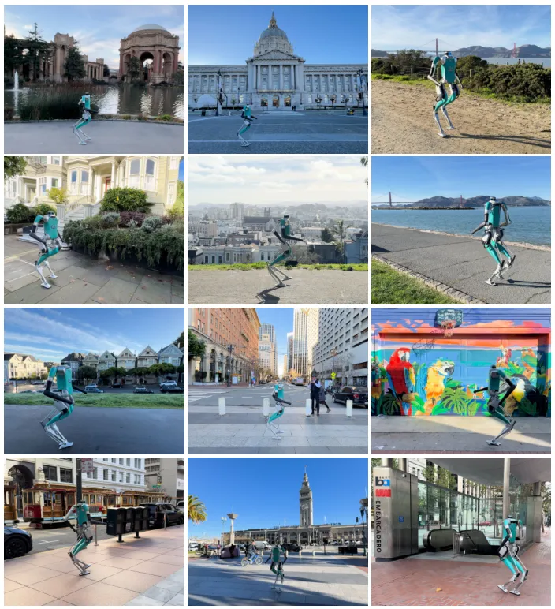
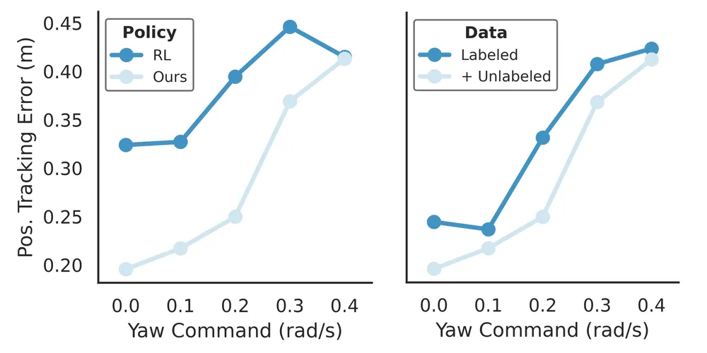
방법. 궤적 $(o_1,a_1,\dots,o_T,a_T)$를 토큰 열로 만들고, 다음 토큰을 예측하는 causal transformer를 평균 제곱 오차로 학습한다. 분포를 분산이 일정한 가우시안으로 두므로 음의 로그 가능도가 회귀가 된다. 행동이 없는 궤적은 행동 자리에 mask 토큰을 넣어 같은 모양으로 만들고, 그 자리의 손실은 뺀다. 예측은 양식을 맞춘다. 관측 토큰에서는 다음 관측을, 행동 토큰에서는 다음 행동을 낸다. 모델은 임베딩 192, 블록 4, 헤드 4의 바닐라 transformer이고 문맥은 과거 16스텝이다. 기본 설정은 관측과 행동을 한 토큰으로 잇는다. 데이터는 네 갈래다. G.12의 RL 정책을 Agility 시뮬레이터에서 돌린 평지 궤적 1만 개(각 10 s, 합계 약 27시간)에는 관측과 행동이 다 있다. Agility 모델 기반 제어기의 궤적 2만 개는 토크를 내므로 관측만 쓴다. KIT 모션 캡처 약 1천 개(서기·걷기·달리기)와 YouTube 영상은 역기구학 최적화로 로봇 자세로 옮긴다. 영상은 PHALP로 사람의 3D 자세를 먼저 복원하고, 최적화 비용이 낮은 궤적만 남긴다. 추론은 자기회귀다. 예측한 행동을 실행하고, 예측한 관측은 버리고 로봇의 실제 관측을 다음 토큰에 넣는다. 실물 이식은 학습한 모델을 그대로 올리는 zero-shot이다. 학습 데이터는 모두 시뮬레이션 궤적이고 실물 데이터는 없다.
결과. 실물은 정성 보고이고, 정량 평가는 MuJoCo에서 10 s 에피소드로 했다. 명령은 전진 0.35–0.70 m/s, yaw ±0.4 rad/s다.
| 조건·지표 | 이 논문 | 비교 대상 |
|---|---|---|
| 실물 배치 | 샌프란시스코 여러 곳에서 일주일, 보도·콘크리트·아스팔트·타일·흙길 | 횟수와 실패 수는 적혀 있지 않다 |
| 위치 추종 오차(N = 245, Fig. 6 왼쪽) | yaw 0–0.3에서 더 낮음, 0.4에서 같음 | 데이터를 준 RL 정책(G.12) |
| 행동 없는 데이터 추가(Fig. 6 오른쪽) | 모든 yaw에서 더 낮음 | 행동 있는 궤적만 |
| 예측 오차와 추종 오차의 상관(모델 14개) | Pearson r = 0.87 | — |
| 상태+행동 예측 대 행동만 예측(표 1d) | 0.305 m | 0.335 m(행동 복제) |
| 양식 정렬 대 비정렬(표 1b) | 0.299 m, 예측 오차 0.98 | 0.338 m, 1.05 |
| 토큰 결합 대 분리(표 1a) | 결합 0.310 m(예측 오차 0.88), 분리 0.299 m(0.98) | 분리는 입력 길이가 2배 |
| 공동 학습 대 단계 학습(표 1c) | 0.310 m | 0.311 m |
| 규모(Fig. 10, 눈으로 읽은 값) | 궤적 1천에서 1만으로 약 0.37에서 0.31 m, 문맥 16에서 48로 약 0.305에서 0.286 m, 파라미터 1M에서 8M으로 약 0.328에서 0.302 m | — |
| 보지 못한 명령 | 뒤로 걷기 0.5 m/s까지 | 행동 있는 데이터에는 뒤로 걷기가 없었다 |
travplan에 주는 의미. Planner D도 Guidance + MPPI 시연을 따라 배우는 생성 정책이라(Planner B.8.3), 가져올 것이 둘이다. 하나는 오프라인 지표다. 검증 데이터의 예측 오차와 폐루프 추종 오차의 상관 r = 0.87은, 비싼 짝 비교(TP-0156의 2층 절차) 전에 Planner D의 검증 손실로 학습 후보를 거를 수 있다는 뜻이다. travplan에서 이 상관을 아직 재지 않았다. 다른 하나는 행동 없는 기록이다. Planner D는 제어 변화율만 생성하므로 지금 구조에서는 mask 토큰을 쓰지 못한다. 상태(포즈) 열도 함께 생성하도록 바꾸면, 제어 입력이 없는 주행 기록이나 보행자 궤적도 학습에 넣을 수 있다. travplan의 시연은 Guidance + MPPI와 NMPC(nonlinear model predictive control)가 내므로 행동이 늘 있다. 그래서 행동 없는 데이터의 이득은 실물 로그가 생긴 뒤에야 나타난다. 가져오지 못하는 것은 Digit의 관절 공간과 사람 동작 리타기팅이다. 스워브에는 사람 동작에 대응하는 기록이 없다. 뒤로 걷기 일반화도 조심해서 읽는다. 관측만 있는 모델 기반 데이터의 전진 명령은 −1.0에서 1.0 m/s 사이에서 뽑았다.
수치는 arXiv v1(2024-02-29)에서 읽었다. NeurIPS 2024 출판본과는 대조하지 못했다.
풀려는 문제. 언어 모델은 다음 단어 예측만으로 표현과 다과제 능력을 얻었다. 로봇 데이터는 고차원이고 센서·명령의 여러 양식이 섞여 있지만, 감각운동 궤적을 물리 세계의 문장으로 보면 같은 틀을 쓸 수 있다. 조건부 행동 분포가 아니라 관측과 행동의 결합 분포를 배우면 더 많은 비트를 예측해 세계 모델이 풍부해지고, 행동이 차선인 잡음 궤적과 정보가 빠진 궤적도 쓸 수 있다.
① 목적식. 궤적을 토큰 $K$개로 자르고 밀도를 자기회귀로 모델링한다.
$$ p(t) = \prod_{k=1}^{K} p(t_k \mid t_{k-1}, \dots, t_1) $$
음의 로그 가능도를 줄이되, 분산이 일정한 가우시안을 가정해 평균 제곱 오차로 학습한다.
$$ L = \frac{1}{K}\sum_{k=1}^{K} (\hat t_k - t_k)^2 $$
구간화나 벡터 양자화도 가능하지만 회귀가 충분히 잘 되어 단순한 쪽을 택했다.
② 빠진 양식. 행동이 없는 궤적 $(o_1,\dots,o_T)$는 $(o_1,\texttt{[M]},o_2,\texttt{[M]},\dots)$로 바꾼다. mask 토큰 $\texttt{[M]}$은 무작위 벡터로 초기화해 모델과 함께 학습한다. mask 자리의 예측에는 손실을 걸지 않는다. 같은 원리가 어느 양식에든 적용된다.
③ 양식 정렬. 관측과 행동을 따로 토큰으로 둘 때, 관측 토큰에서 다음 관측을, 행동 토큰에서 다음 행동을 예측한다. 정렬하지 않으면 추론 때 예측 관측을 다시 입력으로 써서 행동을 내야 하고, 그 예측이 틀리면 학습과 시험의 입력이 어긋난다. 정렬한 쪽이 추종 오차와 예측 오차 모두 낮았다(표 1b).
④ 구조. 기본 설정은 $t_i = \texttt{concat}(o_i, a_i)$를 선형층 $W$로 $d$차원에 임베딩하고 위치 임베딩을 더한다. 양식마다 투영층을 따로 두되 시간에 걸쳐 공유한다. 블록마다 LayerNorm, causal multi-head self-attention, MLP를 잔차로 잇는다($\tilde H = \tilde H + \mathrm{MHSA}(\tilde H)$, $H_{l+1} = \tilde H + \mathrm{MLP}(\tilde H)$). 마지막 층 출력을 선형층 $\hat W$로 되돌려 $\hat t_{i+1}$를 얻고, 앞 $m$차원이 관측 예측, 뒤 $n$차원이 행동 예측이다. 입력 앞에 BatchNorm을 두고 MLP 뒤는 ReLU다. 임베딩 192, 블록 4, 헤드 4, 문맥 16이다.
… 이 토글의 나머지 블록 9개(문단·식·그림)는 대시보드 리서치 탭의 "자세히: Humanoid Locomotion as Next Token Prediction의 방법과 수식" 토글에 있다.
이어진 연구. HT-2(Learning Humanoid Locomotion over Challenging Terrain, 2024-10, Planner B.16.6)는 이 방식으로 평지 궤적(RL 정책, 모델 기반 제어기, 모션 캡처, 영상)을 사전학습한 뒤 험지에서 모방 항 없이 RL로 미세 조정해, Digit이 산길 약 4.3마일과 경사 31 % 도로를 걸었다. VideoMimic(Planner B.16.6, 모방 I.2)은 영상에서 사람과 장면을 함께 복원해 G1에 옮기되, 생성 모델이 아니라 RL 동작 추종으로 간다. 사람 동작 데이터와 리타기팅 일반은 모방 I.1–I.3에, 범용 추종기(H2O·OmniH2O·ExBody·BeyondMimic)는 모방 I.8과 Planner B.16.6에 있다. 같은 해의 HumanPlus(Planner B.16.6)가 상위 정책에 미래 영상 특징 예측을 보조 과제로 붙인 장치는, 이 논문의 상태–행동 동시 예측과 같은 방향이다.
Denoising World Model Learning(DWL) — 시뮬레이션의 특권 상태에 마스킹과 무작위화 잡음을 섞어 관측을 만들고, 그 관측 이력에서 특권 상태를 복원하는 인코더–디코더를 PPO와 한 손실로 학습해, 신경망 하나를 올린 휴머노이드가 야외 눈길·경사·계단·요철을 걸었다(논문은 이를 세계 최초라고 주장한다).(arXiv:2408.14472, 원제 "Advancing Humanoid Locomotion: Mastering Challenging Terrains with Denoising World Model Learning", Gu·Wang·Zhu·Shi·Guo·Liu·Chen, 칭화대·Shanghai Qi Zhi Institute·RobotEra, RSS 2024(최우수 논문상 최종 후보); DWL 코드는 확인하지 못했다, 같은 1저자·교신저자의 학습 틀 Humanoid-Gym) 칭화대 Jianyu Chen 연구실과 휴머노이드 회사 RobotEra의 연구이고, 공동 1저자가 넷이다. 로봇은 RobotEra의 XBot-S(1.2 m, 38 kg)와 XBot-L(1.65 m, 57 kg)이다. 핵심은 둘이다. 첫째, sim-to-real 격차를 "참 상태에 더해진 네 가지 잡음"(환경·동역학·센서·마스킹)으로 보고, 잡음을 걷어 내는 복원 손실 하나로 특권 정보를 정책 표현에 넣는다. 둘째, 폐쇄 기구 연쇄(closed kinematic chain) 발목의 2자유도를 정책이 직접 움직인다. 이 두 가지로 같은 망 하나가 눈길, 10 cm 계단, 10 cm 요철, 15 kg 짐, 60 kg 수레 밀기를 했다.
왜 마일스톤인가. 그 전의 휴머노이드 RL(reinforcement learning, 강화학습)은 평지와 가벼운 요철에 머물렀다. G.12 HT의 Digit transformer가 대표이고, DWL은 이것을 "비교적 단순한 지형"의 예로 든다. 특권 정보를 정책에 넣는 표준 길은 G.2 Lee 2020의 교사–학생 두 단계였고, G.5 Miki 2022는 belief encoder로 외수용을 복원했다. DWL은 교사를 따로 두지 않는다. 특권 상태(184차원, 높이 스캔 96점 포함)를 복원하는 디코더와 PPO를 한 손실로 묶어 한 단계에 끝낸다. G.11 Siekmann 2021의 주기 보상(접지·스윙 마스크)을 가져오되, 접촉력 대신 발 속도를 추종하는 항을 더했다. 실물 험지 휴머노이드를 끝단 RL과 zero-shot 전이로 보인 첫 보고라는 것이 논문의 주장이다. 능동 2자유도 발목을 보행 학습에 쓴 것도 처음이라고 주장한다. 같은 1저자·교신저자의 공개 틀 Humanoid-Gym이 뒤의 휴머노이드 RL 연구의 출발점이 됐고, G.15 Humanoid Parkour Learning은 그것을 비교 질문의 상대로, G.16 ASAP은 DWL을 회귀 기반 온라인 시스템 식별의 예로 인용한다.
초록 번역. (arXiv v1, 2024-08-26) 휴머노이드 로봇은 사람과 같은 골격 구조 덕분에 사람 중심 환경의 과제에 특히 알맞다. 그러나 이 구조는 보행 제어기 설계에 추가 난제를 함께 가져오며, 복잡한 실제 환경에서 특히 그렇다. 그 결과 기존 휴머노이드 로봇은 모델 기반 제어로든 모델 프리 강화학습으로든 비교적 단순한 지형에 머물러 있다. 이 연구에서 우리는 휴머노이드 보행 제어를 위한 끝단 강화학습 틀인 Denoising World Model Learning(DWL)을 소개한다. DWL은 야외의 눈 덮인 땅과 경사지, 계단 오르내리기, 극도로 울퉁불퉁한 지형 같은 실제 험지를 정복한 세계 최초의 휴머노이드 로봇을 보인다. 모든 시나리오는 같은 학습된 신경망 하나를 zero-shot sim-to-real 전이로 돌리며, 이는 제안한 방법의 뛰어난 강건성과 일반화 능력을 가리킨다.
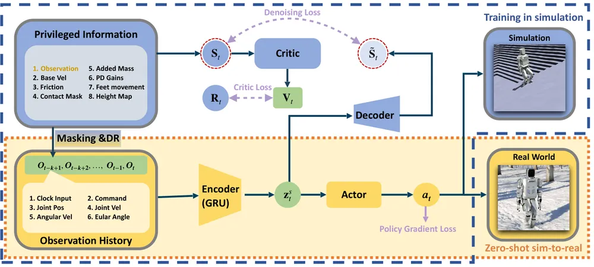
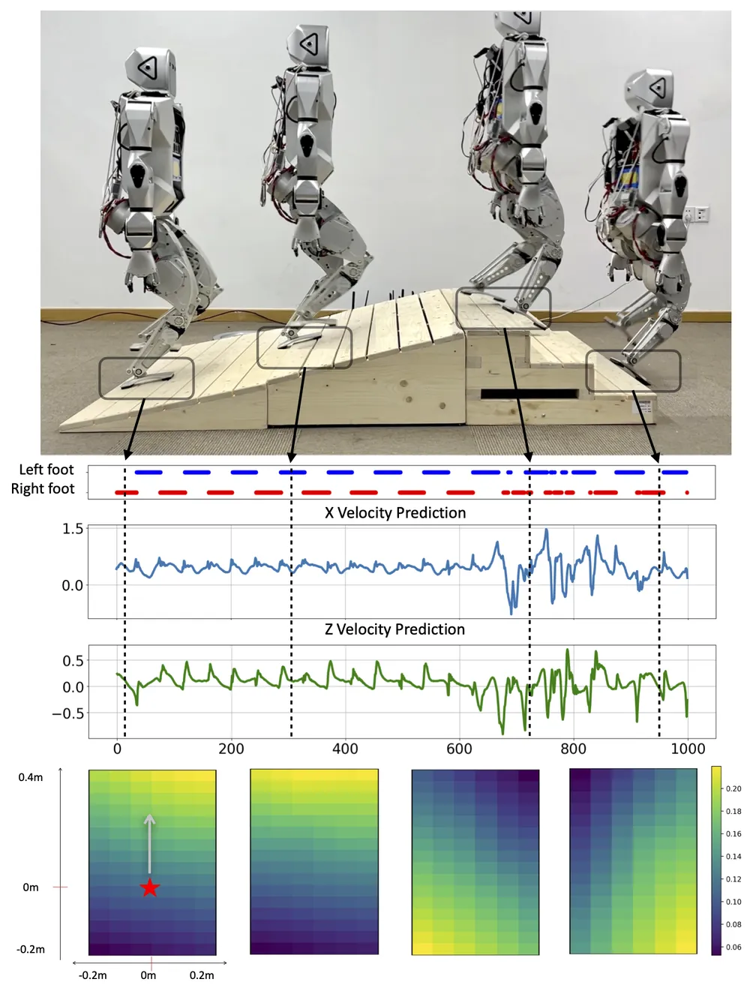
방법. 관측 47차원(시계 2, 명령 3, 관절 위치·속도 24, 각속도 3, 자세 3, 직전 행동 12)의 이력을 GRU(gated recurrent unit)가 24차원 잠재로 압축한다. 라이다와 깊이 카메라는 쓰지 않는다. 디코더는 잠재에서 184차원 상태를 복원한다. 상태에는 관측에 없는 몸통 선속도, 마찰, 밀기 힘, 접촉, 토크, 질량, 현재 보상, 높이 스캔 96점이 들어 있다. actor(2층 MLP)는 같은 잠재에서 관절 목표 12개를 내고, 500 Hz PD가 토크로 바꾼다. 정책은 100 Hz로 돈다. critic은 184차원 상태를 그대로 본다(비대칭 actor–critic). 손실은 복원 손실(L2 복원 + 잠재 L1 정규화)과 PPO의 정책·가치 손실을 더한 하나다. 보상은 속도 추종, 주기 보상, 발 궤적 추종, 정규화 항이고, 스윙 발 궤적은 5차 다항식(스윙 0.5 s, 최고 0.1 m)으로 미리 정해 추종시킨다. Isaac Gym에서 환경 12,288개로 학습하고, 지연 0–10 ms, 마찰 0.2–2.0, 짐 −5–20 kg, PD 80–120 %를 무작위화한다. 발목은 폐쇄 기구 연쇄라 시뮬레이터에 가상 모터 둘을 두고 배포 때 실제 모터로 다시 사상한다. 학습한 망을 그대로 XBot-S에 올렸고, 같은 방법을 XBot-L에도 올렸다.
결과. 실물 XBot-S의 지형별 성공률(원문 표 III)이다. 비교 대상은 복원 손실을 뺀 PPO(능동 발목)와 발목을 수동(Kp 0, Kd 10)으로 둔 DWL이다. 지형마다 시도 횟수는 적혀 있지 않다.
| 조건·지표 | DWL(능동 발목) | PPO(능동 발목) | DWL(수동 발목) |
|---|---|---|---|
| 경사 0.25 오르내리기 | 100 % | 80 % | 80 % |
| 계단 오르기(단 높이 10 cm, 깊이 20 cm) | 100 % | 20 % | 20 % |
| 계단 내려가기(같은 계단) | 100 % | 60 % | 100 % |
| 요철(높이 차 최대 10 cm) | 100 % | 20 % | 40 % |
| 전진 속도 추정 MSE(MuJoCo sim-to-sim, 60 s) | 0.046 | 없음 | 없음 |
| yaw 추정 MSE(MuJoCo, 10 s마다 명령 변경) | 0.074 | 없음 | 없음 |
| 실물 IMU yaw 드리프트 | 약 87 % 감소 | 없음 | 없음 |
| 짐·수레 | 가방 15 kg, 짐 20 kg, 수레 60 kg | 없음 | 없음 |
travplan에 주는 의미. DWL이 보여 주는 것은 특권 정보를 두 단계 교사–학생이 아니라 복원 손실 하나로 정책 표현에 넣을 수 있다는 것이다. travplan에서 같은 자리는 둘이다. L1 belief 증류(TP-0055)는 GT 지도를 보는 교사에서 belief를 보는 학생으로 가는 두 단계이고, RL 후학습(TP-0066)은 정책이 belief를 보고 보상은 GT로 받는 비대칭이다. DWL식이라면 Planner D의 인코더에 "GT TravMap 복원" 손실을 더해 한 단계로 줄인다. DWL이 고유수용만으로 높이 스캔 96점을 대략 복원한 것은, travplan의 그림자 상한과 깊이 prior(TP-0044·0047)가 손으로 한 일(못 본 칸 채우기)을 학습으로 한 셈이다. 다만 DWL의 복원 대상은 발밑 근방이고, travplan은 4 s 지평의 앞길이다. 무작위화 표의 지연 0–10 ms와 PD 80–120 %는 travplan의 지연·드리프트 무작위화(TP-0032)와 plant 지연 모델(TP-0150)과 같은 항목이다. 관절 정책, 100 Hz 제어, 2자유도 발목은 스워브 배달로봇에 가져올 자리가 없다.
수치는 arXiv v1(2024-08-26)에서 읽었다. RSS 2024 출판본과는 대조하지 못했다.
풀려는 문제. 휴머노이드는 사족과 이족(Cassie)보다 무게중심이 높고, 다리 관성이 크며, 스윙 중 불안정하고, 몸통과 팔이 무겁다. 그래서 실물 RL은 단순 지형에 머물렀다. 시뮬레이션에서 배운 정책이 실물에서 깨지는 이유를 저자들은 참 상태 $\mathbf{s}_t$에 더해진 잡음으로 본다. 환경 잡음(험지, 외력), 동역학 잡음(마찰·변형의 단순화), 센서 잡음(IMU 드리프트, 관절 읽기 오차), 마스킹 잡음(선속도·접촉력처럼 센서가 없어 못 보는 것)이다. 관측 모델 $o_t \sim P_{\text{Noise}}(o_t \mid s_t)$로 적고, 네 잡음을 시뮬레이션에서 마스킹과 도메인 무작위화로 만든 뒤 걷어 내는 망을 배운다.
① 인코더–디코더. GRU 인코더가 관측 이력 $o_{\le t}$에서 잠재 $z_t$(24차원)를 내고, 디코더가 $z_t$에서 상태 추정 $\tilde{\mathbf{s}}_t$(184차원)를 복원한다.
$$ P(\tilde{\mathbf{s}}_t) = \mathrm{E}_{o_{\le t}}\Big[\int_z P_{\text{Decoder}}(\tilde{\mathbf{s}}_t \mid z_t)\, P_{\text{Encoder}}(z_t \mid o_{\le t})\Big] $$
$o_{\le t}$가 $z_t$보다 훨씬 커서 잠재가 정보 병목이 된다. 잠재를 성기게 하려고 L1 정규화를 걸고, 새 데이터를 생성할 일이 없어 변분 손실 대신 결정적 손실을 쓴다.
$$ \mathcal{L}_{\text{denoise}} = \lVert \tilde{\mathbf{s}}_t - \mathbf{s}_t \rVert_2 + \lambda_r \lVert \mathbf{z}_t \rVert_1, \qquad \lambda_r = 0.002 $$
상태 $\mathbf{s}_t$에 마찰 계수, 구동기 토크, 높이 스캔 같은 특권 정보를 넣으면, 이 복원이 곧 온라인 적응과 시스템 식별이 된다. 우리가 보기에 이름과 달리 다음 잠재를 예측하는 전이 모델은 없다. 현재 상태를 복원하는 denoising autoencoder이고, 저자들도 "순수한 denoising 과정"이라고 적는다.
② 정책과 손실. actor는 $\pi(a_t \mid z_t)$이고 PPO의 클립 손실 $\mathcal{L}_\pi$로 학습한다(클립 범위 $c_1 = 0.8$, $c_2 = 1.2$). critic은 특권 상태 $s_t$로 $V(s_t)$를 내고 $\mathcal{L}_v = \lVert R_t - V(s_t) \rVert_2$다. 상태 정의 하나를 추정과 가치에 함께 쓰므로 특권 정보를 따로 설계할 필요가 없다.
$$ \mathcal{L}_{\text{DWL}} = \mathcal{L}_{\text{denoise}} + \lambda_\pi \mathcal{L}_\pi + \lambda_v \mathcal{L}_v, \qquad \lambda_\pi = \lambda_v = 5 $$
망은 인코더 GRU(입력 47, 은닉 256)와 MLP(256, 256, 24), 디코더 MLP(24, 64, 184), actor MLP(24, 48, 12), critic MLP(184, 512, 512, 256, 1)이다. actor 전체는 약 32만 파라미터다. 활성 함수는 ELU다. 비교용 PPO는 복원 손실만 뺐고(GRU 256과 MLP 256, 128, 12, 약 33만 파라미터), 나머지는 같다.
③ 보상. 추종 항은 $\phi(e, w) = \exp(-w \lVert e \rVert^2)$ 꼴이다. 선속도(w 5), 각속도(7), 자세(5), 몸통 높이 0.7 m(10), 발 높이(5), 발 속도(3), 기본 관절각(2)을 추종한다. 주기 보상은 G.11의 접지 마스크 $I(t)$(계획된 접지 1, 스윙 0)로 접지 발의 힘과 스윙 발의 속도를 보상한다. 힘은 400으로 나눠 [0, 1]로 자른다.
… 이 토글의 나머지 블록 7개(문단·식·그림)는 대시보드 리서치 탭의 "자세히: DWL의 방법과 수식" 토글에 있다.
이어진 연구. 같은 1저자·교신저자의 Humanoid-Gym(arXiv:2404.05695)은 Isaac Gym 학습과 MuJoCo sim-to-sim 검증을 묶은 공개 틀이고, 저장소 참고문헌 D.5c와 Planner B.12.3이 다룬다. G.15 Humanoid Parkour Learning은 Humanoid-Gym식 동작 사전 지식 없이 계단을 오를 수 있는지를 비교 질문으로 삼았고, G.16 ASAP은 DWL을 회귀로 상태를 추정하는 온라인 시스템 식별의 한 예로 인용한다. 높이 지도를 입력으로 보는 휴머노이드 보행(PIM, BeamDojo)은 인식 문서 A.8에 있다.
Humanoid Parkour Learning — 사람 동작 기준 없이 프랙탈 잡음 지형과 두 단계 학습으로 전신 파쿠르 교사를 만들고, 깊이 영상 학생으로 증류해 Unitree H1이 0.42 m 단에 뛰어오르고 0.8 m 틈을 건넜다.(arXiv:2406.10759, 원제 "Humanoid Parkour Learning", Zhuang·Yao·Zhao, Shanghai Qi Zhi Institute·ShanghaiTech·칭화대, CoRL 2024(PMLR 270); 프로젝트 페이지, 휴머노이드 코드 없음. 페이지의 Codebase 링크는 사족 Robot Parkour Learning 저장소다) 칭화대 Hang Zhao 연구실(MARS Lab)과 Shanghai Qi Zhi Institute의 연구다. 1저자는 사족 Robot Parkour Learning(Planner B.12.2)의 1저자이고, 그 방법을 휴머노이드로 옮겼다. 핵심은 셋이다. 발 들기를 보상으로 시키지 않고 지형의 프랙탈 잡음이 들게 한다. 평지 보행 정책에서 출발해 지형 10종 × 난이도 10단계 격자에서 높이 표본(scandots)을 보는 교사를 배운다. 그 교사의 가중치로 학생을 초기화하고 RealSense 잡음을 흉내 낸 깊이 영상으로 GPU 네 장 DAgger 증류를 한다. 정책은 조이스틱 회전 명령만 받고 기술을 스스로 고른다.
왜 마일스톤인가. 사족 파쿠르는 2023년에 깊이 카메라 하나로 가능해졌다. Robot Parkour Learning(B.12.2)은 기술 다섯을 따로 배워 학생 하나로 증류했고, G.8 Extreme Parkour는 scandots 교사를 깊이 학생으로 증류하며 진행 방향까지 예측했다. G.9 ANYmal Parkour는 신경망 여러 개를 계층으로 묶었다. 그 무렵 휴머노이드 RL(reinforcement learning, 강화학습)은 평지 보행에 머물렀다(G.12 HT, G.13 NTP, ExBody·H2O). 발을 들게 하려면 동작 기준이나 "발 공중 시간" 보상이 필요했고, 그 보상이 뛰어오르기 같은 다리 동작을 막았다. 이 논문은 G.8의 두 단계 증류를 휴머노이드 19관절 전신에 옮겼고, 동작 기준 없이 프랙탈 지형만으로 발 들기가 나온다는 것을 보였다. 계단에서는 G.10 DTC가 말한 "명시적 발 디딤 안내"가 RL에도 필요하다며 발 디딤 보상을 더했다. 뒤의 Perceptive Humanoid Parkour(PHP, RSS 2026, Planner B.16.6)가 사람 파쿠르 동작을 motion matching으로 이어 같은 깊이 학생 구조로 1.25 m 벽까지 올렸다.
초록 번역. (arXiv v2, 2024-09-26) 파쿠르는 다리 로봇 보행의 큰 도전 과제이며, 사족 로봇에게도 그렇다. 능동 인식과 다양한 동작으로 여러 어려운 장애물을 넘어야 하기 때문이다. 기존 휴머노이드 보행 방법은 파쿠르 트랙 하나에 대한 궤적을 최적화하거나, 많은 양의 동작 기준(motion reference)을 써서 걷기만 하도록 강화학습 정책을 학습한다. 이 연구에서 우리는 어떤 동작 사전 지식(motion prior)도 없이 여러 파쿠르 기술을 해내는, 휴머노이드 로봇용 끝단 시각 기반 전신 제어 파쿠르 정책을 학습하는 틀을 제안한다. 이 파쿠르 정책으로 휴머노이드 로봇은 0.42 m 단 위로 뛰어오르고, 허들과 0.8 m 틈을 뛰어넘으며, 그 밖의 많은 것을 한다. 야외에서 1.8 m/s로 달리고 여러 지형에서 강건하게 걷기도 한다. 우리는 실내와 실외 환경에서 정책을 시험해, 조이스틱의 회전 명령을 따르면서 파쿠르 기술을 스스로 고를 수 있음을 보인다. 팔 행동을 덮어써서 이 틀이 휴머노이드 이동 조작 과제로 쉽게 옮겨질 수 있음도 보인다. 영상은 프로젝트 웹사이트에 있다.
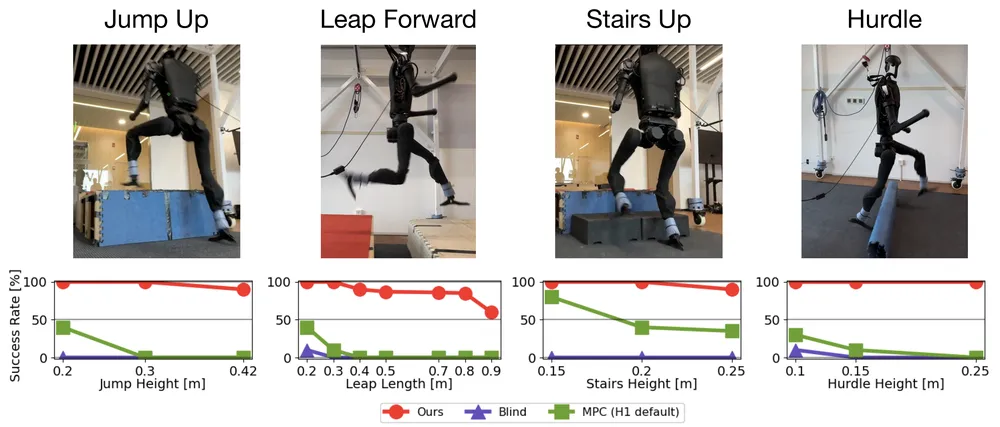
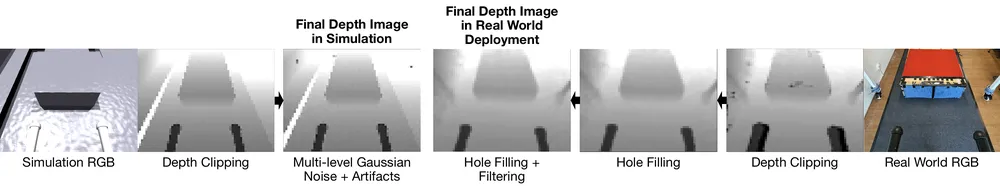
방법. 1단계는 평지 보행 정책이다. 높이 지형에 프랙탈 잡음을 섞어 발을 들게 하고, 전진 −0.8–2.0 m/s, 횡 ±0.8 m/s, 회전 ±1 rad/s 명령을 고르게 뽑는다. 2단계는 교사 파쿠르 정책이다. 지형 10종을 열로, 난이도 10단계를 행으로 둔 격자(10행 × 40열)에서, 구간의 3/4 이상을 지나면 어려운 행으로, 1/2도 못 가면 쉬운 행으로 옮긴다. 트랙은 직선이라 회전 능력을 잃지 않도록 로봇을 무작위 방향으로 놓고 목표 방향으로 돌리는 자동 yaw 명령을 준다. 교사는 scandots 11 × 19를 MLP로 32차원 지형 임베딩에 넣고, GRU 상태 추정기가 고유수용 43차원과 직전 행동 19차원에서 몸통 선속도를 추정하며, GRU–MLP actor가 관절 목표 19개를 낸다. 학습은 PPO이고 환경 4,096개다. 보상에는 틈·허들 위에 가상 장애물을 두고 몸의 점이 뚫고 들어간 깊이에 벌점을 주는 항(Robot Parkour Learning식)과, 계단 가운데를 권장 발 디딤으로 주는 로그형 항을 더했다. 3단계는 학생이다. scandots 인코더를 깊이 48 × 64용 CNN으로 바꾸고, GRU와 MLP는 교사 가중치로 초기화하며, 속도 추정기는 그대로 두고 계속 학습한다. RTX 3090 네 장(수집 3, 학습 1)으로 DAgger를 돌리고, 교사와 학생 행동의 L1 차이를 손실로 쓴다. 실물 H1에는 D435i와 12코어 i7 NUC가 있다. 깊이 인코더는 10 Hz, 나머지 망은 50 Hz, 모터 PD는 1000 Hz이고, 관절 목표는 토크 한계로 잘라 보낸다.
결과. 실물은 그림 5에서 읽은 값(설정마다 10회)이고, 시뮬레이션은 표 2(10회)와 표 11(교사는 같고 24시간 증류, 20회)이다.
| 조건·지표 | 이 논문 | 비교 대상 |
|---|---|---|
| 실물 0.42 m 단 뛰어오르기 | 90 % | H1 내장 MPC 5 %, 깊이 없는 정책 0 % |
| 실물 0.8 m 틈 건너뛰기 | 약 85 % | MPC 5 %, 깊이 없는 정책 0 % |
| 조건·지표 | 이 논문 | 비교 대상 |
|---|---|---|
| 실물 0.9 m 틈 건너뛰기 | 60 % | MPC 5 % |
| 실물 0.25 m 계단 오르기 | 90 % | MPC 35 %, 깊이 없는 정책 0 % |
| 실물 0.25 m 허들 넘기 | 100 % | MPC 5 %, 깊이 없는 정책 0 % |
| 야외 달리기 | 1.8 m/s | 없음 |
| 시뮬 교사 성공률(뛰어오르기·틈·계단·허들) | 프랙탈 지형 90·80·100·100 % | "발 공중 시간" 보상 80·50·90·20 % |
| 시뮬 물결 지형 교사 성공률 | 100 % | "발 공중 시간" 보상 30 % |
| 시뮬 학생 성공률(뛰어오르기·틈·계단·허들, 24시간) | GPU 4장 + 교사 초기화 85·80·100·95 % | GPU 1장 40·45·65·25 %, 무작위 초기화 0·0·5·10 % |
| 24시간 동안 학생이 본 전이 수 | 4.32 × 10⁸ | GPU 1장 4.147 × 10⁶ |
travplan에 주는 의미. 커리큘럼 규칙, 발 디딤 보상, 경사로 수치(0.38 rad 대 스워브 한계 0.26 rad)는 Planner B.16.6 카드에 있다. 여기서는 셋을 더한다. 첫째, 증류 순서다. 학생을 교사 가중치로 초기화하고 인코더만 바꾸자 무작위 초기화의 0–10 %가 80–100 %가 됐다. Planner D의 L1 belief 증류(TP-0055)와 DAgger(TP-0075)도 GT 교사의 가중치에서 시작하고 입력 인코더만 바꾸는 순서가 맞다. 둘째, 지연 무작위화다. 고유수용 5–45 ms, 깊이 60–120 ms를 흔들어 학습했다. travplan은 지연을 plant 모델에 아는 값으로 넣었고(TP-0150), 지연·드리프트 무작위화는 TP-0032에 있다. 학습 Controller(TP-0128)를 plant에 올리려면 이 범위처럼 흔든다. 셋째, 깊이를 직접 보는 (c) 갈래(Controller F.4)의 휴머노이드 예다. travplan은 TravMap이 공통 표현이라 지도를 거치고(L1 인식), 라이다를 쓴다. 뛰어오르기·틈 건너기·19관절 전신 제어와 GPU 네 장 24시간 증류는 바퀴 배달로봇에 가져올 자리가 없다.
수치는 arXiv v2(2024-09-26)에서 읽었다. CoRL 2024 출판본(PMLR 270)과는 대조하지 못했다.
풀려는 문제. 휴머노이드 파쿠르의 난제를 저자들은 넷으로 적는다. 망 하나에 여러 기술을 넣기 어렵다(사족은 과제마다 따로 공학을 했다). 사람·동물 모방은 자기 중심 인식이 없고 지형·몸체마다 데이터가 많이 든다. 고유수용과 외수용 처리에 시간이 걸려 지연을 엄격히 관리해야 한다. 파쿠르는 구동기 용량을 끝까지 쓰므로 배터리·모터를 지키는 행동 제한이 필요하다. Atlas의 파쿠르는 오프라인 계획과 큰 공학의 결과라 장애물 순서 하나에 묶인다는 것이 출발점이다.
① 평지 보행 교사. 보상은 과제(선속도·각속도 추종, 에너지), 정규화(토크·관절 가속·관절 속도·접촉력·행동 변화율), 안전(팔·허리·엉덩이 yaw 불필요 움직임 벌점, 두 발 사이 거리 0.4 m까지 보상, 충돌 −10)이다. 속도 추종은 $\exp(-\lVert v - v^{\text{cmd}} \rVert / 0.25)$ 꼴이다. 토크 벌점은 관절마다 Kp로 나눠 모터 용량이 다른 관절에 비슷한 벌점이 가게 했다. 동작 기준은 어디에도 없다. 자동 명령은 목표 방향 $\theta_{\text{goal}}$과 현재 yaw $\theta$로 $v^{\text{cmd}}_{\text{yaw}} = \alpha_{\text{yaw}}(\theta_{\text{goal}} - \theta)$이고, 차이가 $\pi/2$ 이상이면 전진 명령을 0으로 둔다.
② 파쿠르 교사. 난이도 $i$행의 장애물 파라미터는 $(1 - i/10)\, l_{\text{easy}} + (i/10)\, l_{\text{hard}}$다. 학습 범위는 뛰어오르기 0.2–0.5 m, 뛰어내리기 0.1–0.6 m, 틈 0.2–1.2 m, 경사 0.2–0.42 rad, 계단 높이 0.1–0.3 m, 허들 0.05–0.5 m, 기울어진 경사 0.2–0.5 rad다. 가상 장애물 벌점은 몸체 링크마다 붙인 점 $p$의 관통 깊이 $d(p)$와 속도로 계산한다.
$$ r_{\text{penetrate}} = \alpha_{\text{penetrate}} \sum_p d(p)\, \lVert v(p) \rVert, \qquad \alpha_{\text{penetrate}} = -5 \times 10^{-3} $$
계단 발 디딤 보상은 권장 디딤점(계단 가운데)과 실제 디딤의 전진 방향 차이 $d_x$만 본다.
$$ r_{\text{step}} = \alpha_{\text{step}}\, (-\ln \lVert d_x \rVert), \qquad \alpha_{\text{step}} = 6 $$
망은 GRU 1층 256, MLP 512·256·128(CELU), scandots 인코더 MLP 128·64(임베딩 32)다. PPO는 클립 0.2, GAE 0.95, 학습률 3e-5, 할인 0.99, 환경 4,096개, 배치당 24스텝, 에폭 5다. 무작위화는 질량 −1–5 kg, 무게중심 x ±0.1·y ±0.15·z ±0.2 m, 마찰, 모터 세기 0.8–1.2, 고유수용 지연 5–45 ms, 깊이 시야 86–90°, 깊이 지연 60–120 ms, 카메라 위치·자세다.
③ 깊이 학생. 깊이 인코더는 CNN(채널 16·32·32, 커널 5·4·3, MaxPool, 임베딩 32)이다. 센서 480 × 640을 48 × 64로 줄인다. Isaac Gym의 깊이 렌더링이 느려 GPU 한 장으로는 24시간에 전이 4.147 × 10⁶개뿐이었고, 네 장 분리 프로세스(공유 파일시스템으로 정책과 라벨 궤적 교환)로 4.32 × 10⁸개를 얻었다. 무작위 초기화 학생은 24시간 뒤에도 균형을 못 잡았고, 한 장 판은 장애물은 알아보지만 다리를 충분히 들지 못했다.
… 이 토글의 나머지 블록 5개(문단·식·그림)는 대시보드 리서치 탭의 "자세히: Humanoid Parkour Learning의 방법과 수식" 토글에 있다.
이어진 연구. Perceptive Humanoid Parkour(PHP, RSS 2026)가 사람 파쿠르 동작을 motion matching으로 이어 기준 궤적을 만들고, 깊이 학생 하나를 DAgger와 RL로 증류해 G1이 1.25 m 벽을 올랐다(Planner B.16.6). VideoMimic(CoRL 2025)은 깊이 대신 몸통 둘레 11 × 11 높이 지도를 보는 G1 정책으로 계단과 의자를 다뤘고, BeamDojo와 PIM은 높이 지도를 보는 휴머노이드 보행이다(인식 문서 A.8). 사족 쪽에서는 Eurekaverse(CoRL 2024)가 G.8의 틀 위에서 LLM이 지형 코스를 진화시키는 커리큘럼을 보였다(Planner B.16.1).
ASAP — 실물에서 굴린 궤적을 시뮬레이터에서 재생해 어긋남을 잔차 행동(delta action) 모델로 배우고, 그 모델을 끼운 시뮬레이터에서 동작 추종 정책을 다시 학습해, Unitree G1이 1.5 m 앞 뛰기와 한 발 점프 같은 민첩한 전신 동작을 했다.(arXiv:2502.01143, 원제 "ASAP: Aligning Simulation and Real-World Physics for Learning Agile Humanoid Whole-Body Skills", He·Gao·Xiao·Zhang·Wang·Wang·Luo·He·Sobanbabu·Pan·Yi·Qu·Kitani·Hodgins·Fan·Zhu·Liu·Shi, CMU·NVIDIA, RSS 2025; 코드 MIT, 프로젝트 페이지) CMU LeCAR Lab(Guanya Shi)과 NVIDIA GEAR의 공동 연구이고 공동 1저자가 넷이다. 로봇은 Unitree G1(1.35 m)이다. 핵심은 sim-to-real 격차를 파라미터(시스템 식별)나 넓은 무작위화가 아니라 "행동에 더하는 보정 정책"으로 배운다는 것이다. 실물 상태에서 출발해 기록한 행동에 보정을 더해 시뮬레이터를 한 스텝 굴리고, 시뮬레이터의 다음 상태가 실물의 다음 상태에 가까울수록 보상을 준다. 보정을 얼려 시뮬레이터에 넣으면 실물을 닮은 시뮬레이터가 되고, 거기서 정책을 다시 학습한다. 실물에는 보정 없이 정책만 올린다.
왜 마일스톤인가. 시뮬레이터를 실물에 맞추는 질문은 G.1 Hwangbo 2019가 먼저 던졌다. 그 답은 실물 데이터로 배운 구동기 망을 강체 시뮬레이터에 끼우는 것이었고, 관절별 독립이라는 가정 위에 있었다. G.3 RMA와 G.2 Lee 2020은 반대로 정책 쪽을 넓혀(무작위화와 이력 적응) 격차를 견디게 했다. ASAP은 G.1의 자리로 돌아가되, 관절 모델 대신 상태와 행동 전체를 보는 잔차 정책을 RL로 배운다. 비교군이 셋이라 자리가 분명하다. 보정 없음, 시스템 식별(무게중심·질량·PD 격자 탐색), 상태 잔차 모델(DeltaDynamics)이고, 무작위 행동 잡음은 따로 절제했다. 행동 보정이 개루프 재생과 폐루프 성공률에서 모두 앞섰다. 사람 영상에서 옮긴 동작 추종(H2O·OmniH2O, 모방 문서 I.8)의 다음 단계이고, 같은 1저자의 바로 앞 연구가 HOVER(2024-10, Planner B.16.1)다. BeyondMimic(B.16.6)은 ASAP의 이득보다 반사 관성으로 정한 이득이 낫다고 보충 그림에서 비교한다.
초록 번역. (arXiv v3, 2025-04-26) 휴머노이드 로봇은 사람 같은 전신 기술을 수행하는 데 견줄 데 없는 다재다능함의 잠재력을 지닌다. 그러나 민첩하고 협응된 전신 동작을 이루는 일은 시뮬레이션과 실제 세계 사이의 동역학 불일치 때문에 여전히 큰 난제다. 시스템 식별(SysID, system identification)과 도메인 무작위화(DR, domain randomization) 같은 기존 접근은 흔히 손이 많이 가는 파라미터 조정에 기대거나, 민첩성을 희생하는 지나치게 보수적인 정책을 낳는다. 이 논문에서 우리는 동역학 불일치를 다루고 민첩한 휴머노이드 전신 기술을 가능하게 하도록 설계한 두 단계 틀 ASAP(Aligning Simulation and Real-World Physics)을 제시한다. 1단계에서 우리는 리타기팅한 사람 동작 데이터로 시뮬레이션에서 동작 추종 정책을 사전학습한다. 2단계에서 우리는 정책을 실제 세계에 배포하고 실제 데이터를 모아, 동역학 불일치를 보상하는 델타(잔차) 행동 모델을 학습한다. 그다음 ASAP은 델타 행동 모델을 시뮬레이터에 통합한 채 사전학습한 정책을 미세 조정해 실제 동역학에 효과적으로 맞춘다. 우리는 ASAP을 세 가지 전이 시나리오, 곧 IsaacGym에서 IsaacSim으로, IsaacGym에서 Genesis로, IsaacGym에서 실제 Unitree G1 휴머노이드 로봇으로의 전이에서 평가한다. 우리 접근은 다양한 동적 동작에서 민첩성과 전신 협응을 크게 높이고, SysID·DR·델타 동역학 학습 기준선보다 추종 오차를 줄인다. ASAP은 이전에는 이루기 어려웠던 매우 민첩한 동작을 가능하게 하며, 시뮬레이션과 실제 동역학의 간극을 잇는 데서 델타 행동 학습의 잠재력을 보인다. 이 결과는 더 표현력 있고 민첩한 휴머노이드를 개발하기 위한 유망한 sim-to-real 방향을 시사한다.
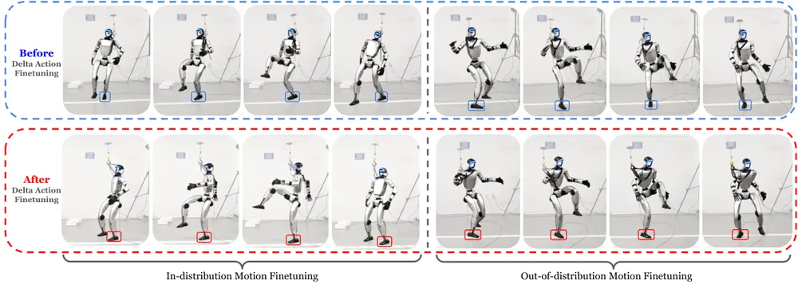
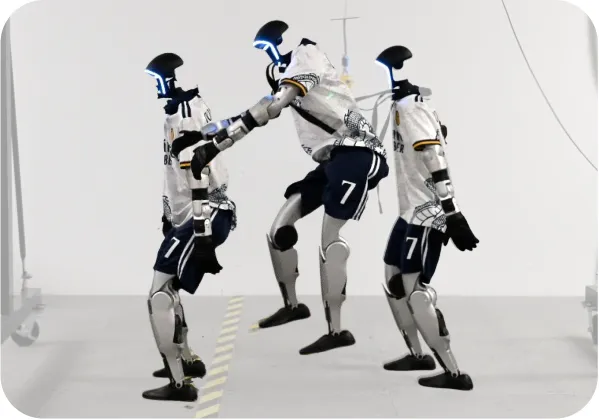
방법. 1단계는 동작 추종 정책이다. 직접 찍은 사람 영상을 TRAM으로 SMPL 동작으로 복원하고, MaskedMimic이 시뮬레이션에서 따라 할 수 있는 동작만 남긴 뒤, 두 단계 리타기팅으로 G1 동작으로 옮긴다. 정책은 위상 $\phi \in [0, 1]$과 5스텝 고유수용 이력만 보고 관절 23개 목표를 낸다. critic만 기준 동작의 전역 위치와 몸통 속도를 본다. 종료 허용 오차를 1.5 m에서 0.3 m로 줄이는 커리큘럼과 무작위 위상 시작(RSI)이 뛰기 동작 학습을 가능하게 했다. 2단계는 델타 행동 모델이다. 실물 정책 실행을 모션 캡처와 센서로 기록하고, 매 RL 스텝을 실물 상태에서 시작해 기록한 행동에 보정 $\Delta a_t$를 더해 시뮬레이터를 굴린다. 보상은 다음 상태가 실물 다음 상태와 가까울수록 크고, 보정 크기에는 벌점을 준다. 학습은 PPO다. 3단계는 보정을 얼린 시뮬레이터에서 원래 정책을 같은 보상으로 미세 조정하는 것이고, 4단계는 보정 없이 배포한다. 실물에서는 과열로 G1 두 대가 손상돼 관절 23개 전체 대신 발목 4자유도만 보정했다. 과제 다섯(차기, 앞 뛰기, 앞뒤 걷기, 한 발 서기, 한 발 뛰기)을 30회씩 돌렸고, 보정 학습에는 동작 기록 100개를 썼으며(둘의 관계는 원문이 설명하지 않는다), 과제 사이는 별도 보행 정책이 잇는다. 수식과 개루프 표 전체는 Planner B.16.6 토글에 있다.
결과. 시뮬레이터 간 전이(Isaac Gym에서 학습, Isaac Sim·Genesis를 "실물"로 둠)와 실물 G1이다. 오차는 전역 관절 위치 오차(mm)다.
| 조건·지표 | ASAP | 재생만·Vanilla | SysID | 상태 잔차(DeltaDynamics) |
|---|---|---|---|---|
| 개루프 1.0 s 재생 오차, Isaac Sim | 37.9 | 80.8 | 77.6 | 68.1 |
| 개루프 1.0 s 재생 오차, Genesis | 36.9 | 82.5 | 76.5 | 50.2 |
| 폐루프 어려움 성공률, Isaac Sim | 100 % | 100 % | 100 % | 66.7 % |
| 폐루프 어려움 성공률, Genesis | 100 % | 82.9 % | 100 % | 60.0 % |
| 폐루프 어려움 오차, Isaac Sim | 129 | 148 | 165 | 137 |
| 폐루프 어려움 오차, Genesis | 129 | 175 | 186 | 190 |
| 실물 차기(학습 분포 안) 오차 | 50.2 | 61.2 | 없음 | 없음 |
| 실물 Silencer(학습 분포 밖) 오차 | 112 | 159 | 없음 | 없음 |
| 무작위 행동 잡음 미세 조정과 비교(Genesis) | 126 | 잡음 최적값 150(본문) | 없음 | 없음 |
travplan에 주는 의미. ASAP의 자리는 travplan에서 "명령이 실현 twist가 되는 plant 쪽"이고, TP-0150이 그 자리를 손으로 채웠다. 권장 L1 + 스워브 plant 레벨 3에서 지연을 모르는 MPPI rollout은 치명 55회를 냈고, rollout에 지연을 넣자 4회가 됐다(mppi_plant_lag).
ASAP식 학습판은 plant 기록으로 $u' = u + \Delta(x, u)$를 배워 명목 SwerveModel에 넣는 것이고, Controller 모델 계층(TP-0124)의 학습 층 첫 후보로 Planner B.16.6이 적어 뒀다. 보정 크기를 정규화하고 격차가 몰린 성분(가속·조향 지연)만 보정하면 데이터가 적어도 된다.
검증 순서도 가져온다. ASAP 표 III은 0.25 s에서는 방법 차이가 없고 1.0 s에서 갈린다. 그래서 plant 기록을 0.5·1·2·4 s 개루프로 재생한 오차로 먼저 거르고, 폐루프는 짝 비교로 간다. sim-to-real 프로토콜(TP-0043)의 첫 주행 보정 기록 항목이 이 재생 데이터다.
가져올 수 없는 것은 모션 캡처 의존과 23자유도 보정 데이터량(동작 400개 이상)이다. travplan은 아직 실물 기록이 없고, plant는 시뮬 안의 모델이라 지금은 "시뮬에서 시뮬로" 단계다.
수치는 arXiv v3(2025-04-26)에서 읽었다. RSS 2025 출판본과는 대조하지 못했다. 보정 모델의 수식, 개루프 표 전체, 훈련 없는 사용법(고정점 반복·기울기 탐색)의 유도는 Planner B.16.6 토글에 있다.
풀려는 문제. 민첩한 전신 동작은 하드웨어 한계뿐 아니라 시뮬레이터와 실물의 동역학 불일치에 막힌다. 시스템 식별은 미리 정한 파라미터 공간 밖의 격차를 못 잡고 토크 측정이 필요할 때가 많다. 무작위화는 정책을 보수적으로 만든다. 실물 데이터로 동역학을 배우는 길은 드론과 지상 차량에서 통했지만 휴머노이드에서는 시험되지 않았다는 것이 출발점이다.
① 데이터. 사람 영상을 TRAM(모방 문서 I.2)으로 세계 좌표 SMPL 동작으로 복원한다. 복원 오차로 물리적으로 불가능한 동작이 섞이므로, MaskedMimic이 Isaac Gym에서 따라 할 수 있는 동작만 남긴다("sim-to-data" 정제). 리타기팅은 H2O의 두 단계다. 사람과 로봇의 대응 링크 12개로 SMPL 체형 $\boldsymbol\beta'$를 먼저 맞추고, 그다음 자세와 위치를 기울기 하강으로 맞춘다. 결과 43개 동작을 쉬움·보통·어려움으로 나눴다.
② 사전학습 정책. 고유수용은 관절 위치·속도(23), 몸통 각속도, 중력 방향의 5스텝 이력과 직전 행동 5개다. 목표는 위상 $\phi$ 하나이고, 동작 하나 추종에는 이것으로 충분하다(DeepMimic 계열, 모방 문서 I.7). 보상은 벌점(관절 한계 −10, 속도 한계 −5, 토크 한계 −5, 종료 −200), 정규화(토크, 행동 변화율 −0.5, 발 자세 −2, 발 방향 −0.1, 미끄럼 −1), 과제(몸체 위치 1.0, 발 위치 2.1, VR 3점 1.6, 회전·각속도·속도 0.5, 관절 위치 0.75, 관절 속도 0.5)다. 무작위화는 마찰 $\mathcal{U}(0.2, 1.1)$, P 이득 0.925–1.05배, 제어 지연 20–40 ms, 10 s마다 0.5 m/s 밀기뿐이다. 뛰기 동작은 착지 벌점을 피해 땅에 머무는 국소 최적에 빠지는데, 종료 허용 오차 커리큘럼(1.5 m에서 0.3 m)이 이것을 깬다.
③ 보정 학습의 보상과 비교군. 보정 학습 보상은 사전학습과 같은 추종 항에 행동 크기 항을 더한 것이다(행동 변화율 −0.01, 행동 크기 −0.2, 토크 한계 −0.1). 기록 상태는 몸통 위치·속도·자세(쿼터니언)·각속도와 관절 위치·속도다. 시스템 식별 비교군은 무게중심 이동 ±0.02 m, 몸통 질량비 0.95–1.05, 관절별 PD 비 0.95–1.05의 격자에서 재생 오차가 가장 작은 값을 고르고 그 파라미터로 미세 조정한다. 상태 잔차 비교군은 $s^{\text{real}}_{t+1} - s^{\text{sim}}_{t+1} = f^{\Delta}_\theta(s^{\text{real}}_t, a^{\text{real}}_t)$를 K스텝 자기회귀 MSE로 배우고, K를 점차 늘린다. 이 모델을 시뮬레이터에 더해 같은 방식으로 미세 조정한다.
④ 절제(그림 10–13). 데이터를 4,300에서 43,000 에피소드(원문 V-A는 samples)로 늘리면 분포 밖 개루프 오차는 계속 줄지만 폐루프 오차는 0.65 %만 준다. 학습 지평은 개루프에서 1.5 s, 폐루프에서 1.0 s가 가장 좋았다. 행동 크기 가중은 0.1에서 가장 좋고 더 키우면 개루프가 나빠진다. 훈련 없는 사용법 둘(고정점 반복, 기울기 탐색)은 한 스텝 맞춤 가정과 분포 밖 입력 때문에 보정 전보다 나빴고, RL 미세 조정이 가장 좋았다. 무작위 행동 잡음 $\beta \in [0.025, 0.2]$로 미세 조정해도 좋아지지만 ASAP(126)보다 오차가 크다. 본문은 잡음 쪽을 150, 그림 12 캡션은 173으로 적어 서로 다르다. 배운 보정의 관절별 크기는 발목 pitch와 무릎이 가장 크고 어깨·팔꿈치가 가장 작으며 좌우가 다르다. 균일한 잡음으로는 이 구조를 못 잡는다는 것이 저자들의 설명이다.
… 이 토글의 나머지 블록 4개(문단·식·그림)는 대시보드 리서치 탭의 "자세히: ASAP의 사전학습·보정 학습·절제 (B.16.6 토글에 없는 것)" 토글에 있다.
이어진 연구. BeyondMimic(B.16.6)은 ASAP의 이득 대신 반사 관성으로 정한 이득과 줄인 배포 지연으로 동작별 조정 없는 추종을 보였다. 휴머노이드 추종기의 공통 설계와 지표는 모방 문서 I.9, SONIC 같은 범용 추종기는 I.10·I.12에 있다. 바퀴 쪽에서 같은 질문(실물 데이터로 rollout 모델 맞추기)은 AnyCar(Planner B.16.5)가 MPPI의 순동역학 모델로 답했다.
G.17 다몸체: 한 정책이 여러 몸을 걷게 한다
한 줄로. 로봇마다 정책을 새로 배우는 대신, 몸의 차이를 조건이나 잠재 변수로 받아 한 정책이 여러 몸을 걷게 하는 연구가 2022년부터 나왔고, PolyMorph(2026)가 그 줄기의 최근 것이다.
흐름. 앞선 연구는 두 답으로 갈린다(Planner B.16.5, 참고문헌 D.8). 몸 정보를 입력으로 주는 쪽에서는 URMA(CoRL 2024)가 관절 설명 벡터를 attention으로 읽었고, Embodiment Scaling Laws(CoRL 2025)가 절차 생성한 몸 1,012대의 전문가를 URMA 학생으로 증류했다. 이력에서 읽는 쪽은 GenLoco(CoRL 2022)와 LocoFormer이고, G.3 RMA의 "이력에서 환경 요인을 추정한다"를 몸의 차이로 넓힌 것이다. Rapid Embodiment Adaptation(2026-08)은 URMA 정책 위에 짧은 이력의 명시 식별을 얹어 둘을 이었다. PolyMorph는 몸 설명과 GRU 이력을 함께 둔다.
PolyMorph — 로봇의 URDF를 관절–링크 토큰으로 바꿔 그래프 마스크 transformer에 넣고, 형태로 정규화한 보상·적응 로봇 표집·URDF에서 구한 PD 이득으로 함께 학습해, 정책 하나가 이족·삼족·사족 로봇과 처음 보는 변형을 걷게 했고 실물 Raibo1·Raibo2를 네 발·세 발 구성으로, Raibo2는 두 발로도 몰았다.(arXiv:2610.19615, 원제 "PolyMorph: Learning Locomotion Policy for Cross-Embodiment Adaptation", Oh·Jeon·Youm·Hur·Kim·Lee·Jung·Hwangbo, KAIST(abs·HTML·PDF에 소속이 없다. 저자, 로봇 Raibo, 그림 3 로봇의 'RAI LAB KAIST' 표기로 판단), arXiv 2026-10(발표처 미기재); 코드 없음) G.1 Hwangbo 2019의 1저자가 이끄는 KAIST 연구실의 연구이고, 시뮬레이터는 같은 연구실의 RaiSim이다. 핵심은 둘이다. 첫째, 몸을 정책에 "설명으로 준다". 관절 하나와 그 자식 링크를 토큰 하나로 묶어 질량·관성·무게중심·PD 이득·관절 상태를 넣고, URDF의 연결 그래프를 attention 마스크로 쓴다. 둘째, 여러 몸을 함께 학습할 때 생기는 학습 쪽 문제 셋(보상 크기가 관절·다리 수에 따라 달라짐, 쉬운 로봇이 표집을 독점함, 로봇마다 PD 이득을 손으로 맞춤)을 각각 정규화·적응 표집·이득 규칙으로 푼다.
왜 마일스톤인가. 다몸체(cross-embodiment) 보행은 두 답으로 갈려 있었다(Planner B.16.5). 몸 정보를 입력으로 주는 쪽(URMA, Embodiment Scaling Laws)과 이력에서 읽는 쪽(GenLoco, LocoFormer)이다. GenLoco(CoRL 2022)는 절차 생성 사족과 15스텝 이력으로 사족에만 통했다. URMA(CoRL 2024)는 관절 설명 벡터를 attention으로 읽지만 이력 기억이 없고, 학습 밖 실물 H1·Talos에는 zero-shot 전이에 실패했다. Embodiment Scaling Laws(CoRL 2025)는 1,012대 전문가를 증류했고 GPU 160장이 들었다. MetaMorph는 시뮬레이션뿐이다. PolyMorph가 다른 점은 셋이다. 몸 설명을 URDF 그래프 구조째 attention 마스크로 넣고(Body Transformer의 틀을 다몸체로), GRU 이력 인코더를 함께 둬 두 답을 합쳤다. 설계가 아니라 학습 절차의 병목(보상 정규화, 적응 표집, 이득 규칙)을 짚고 절제로 보였다. RTX 4090 한 장 약 2.7일로 학습해 실물에 올렸다. G.3 RMA가 같은 몸 안의 변화(질량, 마찰)를 이력에서 읽었다면, PolyMorph는 다리 수가 바뀌는 몸체 차이까지 정책 하나로 넓힌다. 같은 실물 로봇을 네 발·세 발·두 발 구성으로 정책 하나로 몬 것은 LocoFormer(CoRL 2025, Planner B.16.5)가 이력 적응으로 먼저 보였고, PolyMorph는 몸 설명을 주는 쪽에서 GPU 한 장으로 같은 일을 했다.
초록 번역. (arXiv v1, 2026-10-14) 강화학습은 다리 로봇의 강건한 보행을 가능하게 했지만, 학습된 정책은 대개 특정 로봇 형태(morphology)에 묶여 있어 다리 수·구동기 수·기계적 성질이 바뀌면 추가 공학 작업이 필요하다. 우리는 이종 다리 로봇을 위한 보행 정책 하나를 학습하는 형태 조건부 틀 PolyMorph를 제시한다. PolyMorph는 각 로봇의 URDF를 관절–링크 모듈로 바꾸고, 순환 인코더·그래프 기반 transformer·관절별 디코더를 결합해 가변 다리 수와 관절 구성에 걸쳐 행동을 생성한다. 학습 안정성을 높이기 위해 PolyMorph는 형태로 정규화한 보상, 적응 로봇 표집, URDF에서 유도한 PD 이득 초기화를 쓴다. 우리는 처음 보는 형태 변형과 플랫폼을 포함한 이족·삼족·사족 로봇에 걸쳐 시뮬레이션에서 PolyMorph를 평가하고, 여러 구성으로 운용되는 실제 사족 플랫폼에 정책을 배포한다. 결과는 PolyMorph 정책 하나가 로봇별 정책 재학습 없이 다양한 로봇 형태에 걸쳐 일반화함을 보인다.
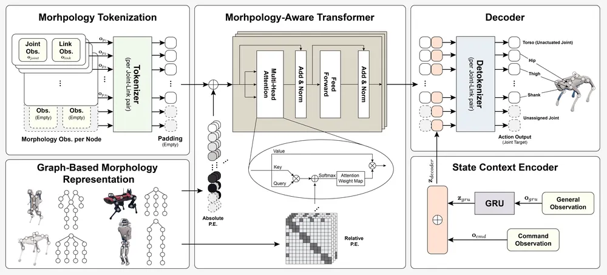
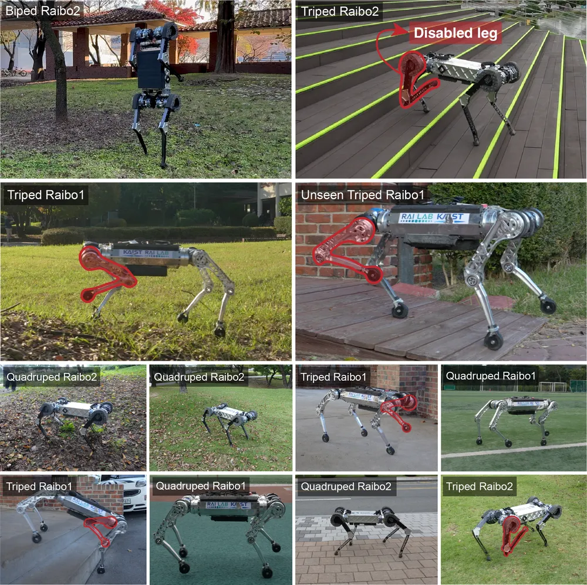
방법. 로봇 하나를 URDF의 운동학 트리 순서로 관절–링크 모듈 열로 바꾼다. 모듈 관측은 링크의 질량·관성·무게중심과 관절의 위치·기본각·최근 상태·최근 목표·PD 이득이고, 모듈 수가 적은 로봇은 0으로 채운다. 토큰마다 독립 선형층과 절대 위치 임베딩을 거쳐 transformer에 들어가고, URDF 인접 행렬에서 만든 마스크가 물리적으로 이어지지 않은 모듈 사이의 attention을 막는다. GRU는 몸통 roll·pitch, 각속도, 관절 위치·속도, 직전 목표(최대 관절 15개로 0 채움)의 이력을 잠재로 요약한다. 관절별 디코더가 transformer 출력, GRU 잠재, 속도 명령을 받아 관절 목표를 내고, 구동 관절에만 적용한다. critic은 모듈별 가치의 평균이다(비대칭, 높이·선속도·높이 스캔은 critic만 본다). 학습은 PPO이고, 보상 가운데 관절 관련 벌점은 구동 관절 수로, 발 관련 항은 다리 수로 나눈다. 보상이 낮은 로봇을 더 자주 뽑되 환경의 절반은 고르게 뽑는다. PD 이득은 URDF 질량 행렬에서 규칙으로 정한다. 커리큘럼은 명령 범위·지형 거칠기·외란·보상 가중·형태 섭동을 쉬움에서 어려움으로 보간하고, 무작위화에는 관측 잡음·링크와 관절 파라미터·PD 이득·제어 지연·마찰·외란이 들어간다. RaiSim에서 환경 350개, 20,000 반복, EPYC 9654 + RTX 4090 한 장으로 약 2.7일 학습했다. 실물에는 100 Hz 정책을 ONNX로 내보내 온보드에서 돌렸고 추론 지연은 평균 0.366 ms다.
결과. 실물은 평지·경사·단·자연 요철로 된 같은 50 m 야외 경로이고, 넘어짐·비상 정지·사람 개입 없이 완주하면 성공이다(표 III). 시뮬레이션은 거친 지형에서 10 s씩 유지한 무작위 명령의 추종 RMSE다(표 IV·V, 시드 3개, 로봇마다 100 에피소드).
| 조건·지표 | PolyMorph | 비교 대상 |
|---|---|---|
| 실물 사족 Raibo1·Raibo2 | 20/20 | 없음 |
| 실물 삼족(다리 하나 잠금) | 20/20 | 없음 |
| 실물 이족 Raibo2 | 9/10 | 없음 |
| 실물 처음 보는 삼족 Raibo1 | 7/10 | 없음 |
| 시뮬 Atlas 수평 속도 RMSE(m/s) | 0.479 | MLP 판 0.516, MetaMorph 1.260, URMA 0.744 |
| 시뮬 처음 보는 삼족 Raibo1(HR 제거) | 0.484 | MLP 판 0.428, MetaMorph 실패, URMA 실패 |
| 시뮬 처음 보는 삼족 Raibo2(HR 고정) | 0.153 | MLP 판 실패, MetaMorph 0.611, URMA 0.256 |
| 시뮬 처음 보는 사족 B2(70 kg)·Solo12(2.5 kg) | 0.124·0.254 | 학습 사족 범위 11–52 kg |
| 보상 정규화 절제: 평가 보상·평균 종료율 | 5.024·0.030 % | 정규화 없음 1.109·1.556 % |
| 자동 PD 이득(Kp) Raibo2·Atlas·Go1 | 77·260·25 | 손 조정 참조 80·300·30 |
travplan에 주는 의미. travplan은 실제 스워브 파라미터를 모른다(TP-0035). 그래서 B.16.5가 적었듯 몸 설명을 주는 PolyMorph식보다 이력에서 읽는 쪽이 실물에는 맞다. 다만 시뮬 plant의 파라미터(모듈 위치, 조향 속도 한계, 지연)는 알고, Playground는 스워브·사족·휴머노이드를 같은 twist 인터페이스로 몬다(TP-0135).
그 자리에서는 PolyMorph의 토큰이 쓰일 수 있다. 학습 Controller TinyPolicy(TP-0128)에 섀시 설명(모듈 4개의 위치·한계)을 토큰으로 주고 plant 변형을 섞어 학습하면, 섀시가 바뀔 때 재학습 없이 쓰는 Controller가 된다. 효과는 짝 비교로만 판단한다.
학습 쪽 세 처방은 바로 옮길 수 있다. 보상을 구성 요소 수로 나누는 정규화는 레벨 0–3을 섞어 학습하는 RL 후학습(TP-0066)의 레벨별 보상 크기 차이에, 보상이 낮은 로봇을 더 뽑는 적응 표집은 레벨을 고르게 뽑는 지금 표집(TP-0073·0066)에 해당한다.
URDF 질량 행렬에서 PD 이득을 정하는 규칙은 Controller 모델 계층(TP-0124)의 동역학 층에서 모듈 이득을 손으로 맞추지 않는 길이다. 제어 지연과 형태 섭동을 함께 무작위화한 것은 지연·드리프트 무작위화(TP-0032)와 plant 지연(TP-0150)과 같은 항목이다.
가져올 수 없는 것은 관절 공간 정책과 다리 로봇의 접촉 전환이다. travplan Controller는 body twist를 내고 모듈은 역기구학이 푼다(Controller F.3).
수치는 arXiv v1(2026-10-14)에서 읽었다. 출판본은 없다(발표처 미기재).
풀려는 문제. 로봇 $k$마다 MDP $\mathcal{M}^k$가 다르고, 정책 하나 $\pi_\theta$로 $K$대의 평균 기대 수익을 최대화한다.
$$ \max_\theta \frac{1}{K} \sum_{k=1}^{K} \mathbb{E}_{\pi_\theta}\Big[\sum_{t=0}^{H} \gamma^t r^k_t\Big] $$
몸이 바뀌면 관측·행동 공간·보상을 다시 설계해야 했고, 함께 학습하면 보상 크기와 학습 난이도가 로봇마다 달라 최적화가 한쪽으로 쏠린다.
① 상태 맥락 인코더. GRU 입력은 $\mathbf{o}_{t,\mathrm{GRU}} = [\mathbf{g}_t, \boldsymbol\omega_t, \mathbf{q}_t, \dot{\mathbf{q}}_t, \mathbf{q}^{des}_{t-1}]$이다(roll·pitch 벡터, 각속도, 관절 위치·속도, 직전 목표). 관절 수 상한 $N_{\max} = 15$로 0 채움한다. 출력 잠재 $\mathbf{z}_{\mathrm{gru}}$는 디코더로 간다.
② 형태 인식 transformer. 토큰 $i$는 $\mathbf{o}_{p_i} = [\mathbf{o}_{link_i}, \mathbf{o}_{joint_i}]$이고, 독립 선형층 $\phi_i$와 절대 위치 임베딩 $\mathbf{w}_{pos,i}$를 더해 $\mathbf{x}_i = \phi_i(\mathbf{o}_{p_i}; W_{e_i}) + \mathbf{w}_{pos,i}$가 된다. attention에는 URDF 인접 행렬 $M$에서 만든 상대 위치 마스크 $r$을 더한다(Body Transformer의 embodiment-masked attention).
$$ \mathrm{Attention}(Q, K, V) = \mathrm{softmax}\Big(\frac{QK^{T}}{\sqrt{d_k}} + r\Big) V, \qquad r_{i,j} = 0\ (M_{i,j} = 1),\quad r_{i,j} = -\infty\ (M_{i,j} = 0) $$
절대 임베딩은 운동학 트리 순서를, 그래프 마스크는 물리 연결을 준다. 모듈 0(루트)은 구동하지 않는다.
③ 디코더. 모듈 $i$의 입력은 $\mathbf{z}_{i,\mathrm{dec}} = [\mathbf{z}_{i,\mathrm{trans}}, \mathbf{z}_{gru}, \mathbf{o}_{cmd}]$이고, actor는 모듈별 독립 파라미터 $W_{d_i}$로 가우시안 평균을 낸다. critic은 유효 모듈의 가치 평균 $V(s^k) = \frac{1}{N+1}\sum_{i=0}^{N} V_i$다.
④ 학습 처방 셋. 적응 표집은 로봇 $i$의 보상 $r_i$와 평균 $\bar r$로 확률을 정하고, 환경 절반은 고르게 뽑는다.
$$ P_i = \frac{\exp(\bar r - r_i)}{\sum_j \exp(\bar r - r_j)} $$
… 이 토글의 나머지 블록 5개(문단·식·그림)는 대시보드 리서치 탭의 "자세히: PolyMorph의 방법과 수식" 토글에 있다.
이어진 연구. 2026-10-27 기준 후속 연구를 확인하지 못했다(공개 2주째). 같은 질문의 동시대 답은 Planner B.16.5의 LocoFormer 계보 표에 있다. URMAv2(다리 로봇 50종, 극단 형태 무작위화 커리큘럼), Rapid Embodiment Adaptation(짧은 이력의 명시 식별), MorFiC(형태 잠재로 critic 조건화, 학습 2시간), PPAL(형태 특화 범용 제어기와 지각 위치)이다. 반대편인 LocoFormer(몸 정보를 숨기고 긴 맥락으로 적응)와의 대조는 같은 절의 LocoFormer 카드가 정리한다. 바퀴 쪽의 같은 질문은 AnyCar(MPPI의 순동역학 모델)와 COMPASS(twist 층의 몸체 공통 정책)다.
G.18 travplan에 주는 것, 읽는 순서, 스스로 확인할 질문
한 줄로. travplan이 이 17편에서 옮길 것은 보행 정책이 아니라 절차다. 시뮬레이터를 실물에 맞추는 법(G.1, G.16), 보지 못하는 것을 이력으로 짐작하게 가르치는 법(G.2, G.3, G.5, G.14), 수천 환경과 난이도 커리큘럼으로 학습을 돌리는 법(G.4), 그리고 위 층이 아래 층에 무엇을 넘기느냐(G.7, G.9, G.10)다. travplan의 로봇은 스워브 바퀴라 걸음새·발 디딤·관절 토크에 해당하는 것이 없다. 그래서 정책 구조보다 학습 절차와 Planner–Controller 경계에서 가져온다.
대응표. 상태는 2026-10-27의 TODO 기준이다.
| 논문 | 핵심 재료 | travplan 대응 | 상태 |
|---|---|---|---|
| G.1 Hwangbo 2019 | 실물 데이터로 배운 액추에이터 망을 시뮬레이터에 끼운다. 지연을 빼먹은 모델의 정책은 실물에서 걷지 못했다 | 스워브 plant의 지연을 MPPI rollout에 넣는다(mppi_plant_lag, TP-0150). plant를 학습 모델로 바꾸는 일은 TP-0124–0126 |
지연은 있음, 학습 모델은 백로그 |
| G.2 Lee 2020 | 특권 교사에서 이력만 보는 학생으로 줄이고, 학생이 간 상태에 교사 라벨을 붙인다 | Planner D는 Guidance + MPPI 교사의 DAgger로 배운다(TP-0075). 정책은 belief, 보상은 GT인 비대칭은 TP-0066에 있고, L1 belief로 다시 배우는 일은 TP-0055 | 일부 있음 |
| G.3 RMA | 환경 요인의 잠재 벡터를 짧은 고유수용 이력에서 추정한다 | plant 지연·마찰처럼 바뀌는 요인을 이력에서 추정해 Controller에 넣는 것(배경 0.11). 지연·자기 위치 잡음 무작위화(TP-0032)는 있고, 지연을 아는 Controller는 TP-0170 | 무작위화는 있음, 추정은 백로그 |
| G.4 Learning to Walk in Minutes | GPU 수천 환경, 지형을 난이도 단계로 둔 커리큘럼 | 벤치마크 레벨 0–3과 시나리오가 커리큘럼 역할을 한다. Playground 학습 Controller TinyPolicy(TP-0128)는 작은 운동학 시뮬에서 배운다 |
레벨은 있음, 자동 승급은 없음 |
| G.5 Miki 2022 | 외수용(높이 지도)을 얼마나 믿을지 고유수용으로 가늠하는 belief encoder | TravMap의 sigma 채널과 L1 belief 지도(인식 A.13). 외수용을 믿지 않을 때 고유수용으로 메우는 길은 없다 | sigma는 있음 |
| G.6 자기 중심 깊이 보행 | 지도 없이 깊이 영상에서 바로 관절 명령 | travplan은 TravMap을 중간 표현으로 둔다. 끝단 정책은 비교 기준선으로만 | 선택하지 않음 |
| G.7 Walk These Ways | 걸음새 매개변수를 명령으로 받는 한 정책. 위 층이 행동을 고른다 | Planner–Controller 인터페이스에 속도 한계·여유 같은 행동 매개변수를 더하는 것. Playground 휴머노이드의 WBC 명령(TP-0135)이 같은 꼴 | 일부 있음 |
| G.8 Extreme Parkour | 깊이 카메라 하나로 턱·간격·경사 파쿠르, 방향 보상 | 레벨 3의 턱·포트홀 시나리오와 치명 셀 판정. 코드 정독은 Controller F.6.2 | 참고 |
| G.9 ANYmal Parkour | 인식 모듈, 내비게이션 정책, 기술별 보행 정책의 3단 | Planner(항법)와 Controller(기술)의 분리, Guidance 폴백(TP-0078)이 기술 전환에 해당 | 있음 |
| G.10 DTC | 궤적 최적화가 발 디딤을 내고 RL 정책이 따른다 | NMPC·MPPI(Controller)가 궤적을 내고, 그 rollout 모델의 잔차를 GP(TP-0068)나 학습 FDM(TP-0126)으로 배운다. 방향이 반대다(travplan은 최적화가 아래) | 일부 있음 |
| 논문 | 핵심 재료 | travplan 대응 | 상태 |
|---|---|---|---|
| G.11 Siekmann 2021 | 보상 항을 위상에 따라 켜고 끄는 주기 보상 합성 | 스워브에 걸음새는 없다. 보상 항을 상황에 따라 켜고 끄는 설계는 TinyPolicy 보상에 쓸 수 있다 |
참고 |
| G.12 HT | 관측·행동 이력을 보는 transformer 정책, 적응 모듈 없이 | TinyPolicy에 이력을 넣고 MPPI 교사의 DAgger로 배우는 것(모방 I.14) |
제안 |
| G.13 NTP | 행동이 없는 기록도 토큰 열로 함께 배운다 | 보행자 궤적·사람 조종 로그처럼 행동이 없는 데이터로 Planner D를 사전학습하는 것 | 제안 |
| G.14 DWL | 잡음 섞인 관측 이력에서 특권 상태를 복원하는 world model | L1 belief 지도에서 GT 지형을 복원하는 보조 손실(TP-0055의 DAgger와 함께) | 제안 |
| G.15 Humanoid Parkour Learning | 깊이 영상 전신 파쿠르, 프랙탈 지형 | Playground 휴머노이드(Controller E.13). 다리 로봇을 쓰게 되면 TravMap이 추종기 입력이 된다 | 다리 로봇 도입 때 |
| G.16 ASAP | 실물 기록으로 배운 잔차 행동 모델로 시뮬레이터를 맞춘 뒤 다시 학습 | sim-to-real 예측력 프로토콜(TP-0043). 잔차는 행동이 아니라 동역학에 두는 GP 잔차(TP-0068)가 있다 | 백로그 |
| G.17 PolyMorph | 몸의 차이를 조건으로 받는 한 보행 정책 | Playground의 로봇 종류(js/robots.js)마다 Controller를 따로 맞추는 대신 바퀴 간격·조향 한계를 조건으로 받는 것 |
제안 |
읽는 순서. 개요의 보는 순서와 같다. 각 카드의 "초록 번역"을 먼저 읽고 그림을 본 뒤 "방법"을 읽으면 원문 없이도 뼈대가 잡힌다. 수식은 토글에만 있다. travplan 쪽을 먼저 아는 사람은 위 대응표에서 "있음" 행(G.9, G.1의 지연 부분)과 "백로그" 행(G.3, G.16)을 먼저 본다.
스스로 확인할 질문. 답은 아래 토글에 있다.
PlanResult와 어떻게 다른가?PlanResult는 경로(path)나 시간 인덱스 궤적(times)이고, Controller는 한 종류이며 기술을 고르지 않는다. 카드 G.9.